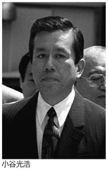
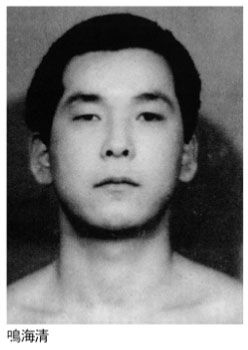

| 山口組五代目帝国の内なる敵 (竹書房文庫) | |
| 溝口敦 | |
| (2010) | |
山口組五代目帝国の内なる敵
溝口 敦
この電子書籍は、縦組の底本を元に作成しました。
文庫版のためのまえがき
山口組五代目組長・渡辺芳則が六代目の座を司忍に譲ってまだ五年である。五年が長いか短いかはともかく、渡辺が話題に上ることはめっきり少なくなった。今は神戸の住宅地にひっそり住んでいるようだが、彼の消息を知る人は限られ、消息が情報として広く世間に伝えられることもない。インターネットでも彼に関する書き込みはほとんど過去ログに入って、一般の目には触れにくくなった。
だが、とはいえ、渡辺が組長として君臨した五代目山口組時代が日本暴力団史の曲がり角に位置したことはたしかである。彼が在位した一六年の間に山口組のイメージは徐々に明から暗に変わったし、暴力団の存在そのものが「怖いが親しめる我らの隣人」から「社会に害悪を流すだけの暴力団」に切り替わったのだ。
もちろんこの変化は暴力団だけの責任には帰せられない。九二年に暴力団対策法が施行され、組員が「集団的、または常習的に暴力的な不法行為を行うことを助長するおそれがある団体」と定義づけられ、国民もまたその定義をごく当然のこととして受け入れた。対策法は、組員による口止め料や寄付金、賛助金、みかじめ料、用心棒代などを要求する行為を禁止し、債権取り立てや下請け参入要求なども禁じた。
日本社会は、たまたま五代目山口組の成立と軌を一にしたバブル経済の崩壊でカネが詰まり、暴力団に落とすカネは「必要悪」から「絶対削るべき冗費」に変化した可能性がある。暴力団を養うほどのあぶく銭はどこにも存在しなくなった。
当初、五代目山口組は社会が暴力団を必要としなくなったことを認識できず、自分たちが訴えれば、社会は自分たちの有用性と必要性を認識してくれるはずと楽観していた。だからこそ暴力団対策法は違憲だと裁判に訴えたし、山口組が発注、制作した五代目組長襲名式のビデオをＴＢＳが無断放映したことに対して、著作権法違反を主張する裁判をぶつけたのだ。自分たちが正義を主張すれば、味方してくれる世論も現れ、国や社会からの攻撃をはねのけられると信じていた。
こうした裁判は当時の若頭・宅見勝が主導したのだが、彼には、社会が自分たちを必要としているはずという錯覚に似た自信が抜きがたくあった。
その宅見勝は九七年、中野会組員の手で射殺された。彼の射殺以降も対策法や地方条例は強化され、暴力団への敵視は強まるばかりだった。公共工事の下請けや孫請け、公共住宅からの締め出しなど、今や暴力団の一部組員は人権がないのと同様の扱いを受けている。憲法二五条は「全て国民は、健康で文化的な最低限度の生活を営む権利を有する」と定めている。暴力団組員は日本国民でないかのように待遇され、しかも暴力団側には、こうした待遇は違憲だと、裁判で争う気力さえないかのようである。いわば暴力団はそこまで暗く沈滞している。暴力団を取り巻く環境が厳しくなった以上、当初明るくスタートした五代目時代であっても、後半以降、暗さを加えるのは当然だったろう。
日本有数の経済ヤクザとして社会に明るく対してきた宅見が射殺され、山口組の運営から離れたのである。残された執行部の組運営が暗くなるのは仕方なかったろうが、もう一つ宅見勝の殺され方に山口組の暗さが胚胎した。事件は仲間殺し、兄弟殺しだったわけだが、トップの暗黙の了解の下、同僚が平然と殺されるとあっては、直系組長たちが誰を信じてよいか分からず、疑心暗鬼になり、組全体の空気が澱み、沈むのは当然だったはずだ。
これは何に由来したのか。根本の原因は「担ぐ神輿は軽いほど担ぎやすい」という直系組長たちの私欲と多数意見だった。いわばポピュリズムが衆愚政治と暗愚の帝王を生んだ。九五年、五代目山口組が倒壊したのは半ば必然のコースだった。本書では五代目山口組の負のダイナミズムを追跡している。
二〇一〇年三月
溝口敦
（本文中の肩書き等は二〇〇七年五月時点のものであることをお断りしておく）
目次
はじめに
五代目山口組は一九八九年五月から二〇〇五年七月まで、おおよそ一六年間続いた。渡辺芳則が山口組の五代目組長に就任し、司忍に六代目を渡して、彼自身が引退するまでの期間であり、この間を「五代目山口組時代」と呼んでも差し支えなかろう。
五代目時代は山口組にとってどのような時代だったのか。
山口組としては田岡一雄、竹中正久の時代に比べて比較的抗争が少なかったが、特筆大書すべき事件として宅見勝射殺事件が挙げられる。ちょうど五代目時代の中間点に当たる九七年八月、山口組の若頭・宅見勝は若頭補佐・中野太郎が率いる中野会の手で射殺された。広域暴力団の幹部が同じ組のナンバーツーを射殺する──。他の団体ではほとんど例を見ない事件であり、宅見射殺事件には特異な点がいくつもある。
まず中野太郎は最後まで事件の真相は露見しないと考えていた。彼は兵庫県警が中野会の実行犯を割り出し、逮捕し、襲撃現場となった新神戸駅前のオリエンタルホテルを実況見分しても、なお中野会の犯行ではないと主張していた。
中野太郎は事件直後に山口組から絶縁されたが、奇怪なことに長期にわたって中野の山口組復帰が囁かれ続けた。中野が組内ナンバーツーを殺すというヤクザ世界にあってさえ大罪に当たる不法行為を強行しながら、〇五年の中野会解散まで、終始、中野会の山口組復帰が組長・渡辺芳則により考慮され続けたのは極めて異常であり、宅見殺しにおける渡辺芳則と中野太郎との連帯さえ疑われた。すなわち渡辺は中野会による宅見襲撃を是認していた、そればかりか事前にも了解していた可能性が高いというのだ。これが異例の二点目である。
三点目は中野会への報復攻撃を担った組織が宅見組とその後継組織に限られたことである。他の直系組はほとんど静観して動かなかった。渡辺もまた他の組による報復攻撃を禁止した。
振り返れば、この宅見射殺事件が五代目時代を象徴する事件となった。渡辺芳則組長が抱えていた脆弱性は二〇〇五年七月、司忍らの陣営にクーデター的に引退を迫られ、六代目組長を渡したことに典型的に窺われるが、渡辺組長の脆弱性は五代目時代の発足と同時に始まったものであり、宅見射殺事件はその脆弱性の途中経過として発生し、かつ渡辺組長の抱える脆弱性をより増幅するものでもあった。脆弱だったから、本来が終身制の組長だったにもかかわらず、発足一六年で倒れたのだ。
一言で言えば、五代目時代の一六年間とは無能と無策が支配した時代である。そのことにより宅見勝若頭以下、いくたの山口組幹部や組員の命が失われた。だが、何者かにより命を奪われたから、彼らが犠牲者だったと言えるかは疑問である。犠牲者自身がもともと無策の体制をつくることに力添えしたかもしれないからだ。
この意味で五代目山口組時代は陰謀うず巻き、過誤と敵失が重なる疾風怒濤の時代だった。地位とカネをめぐって山口組の無法者たちが血で血を洗う相克劇を繰り広げた。策士は策に溺れて命を失い、絵師は上手の手から水を洩らして仲間殺しを暴かれた。
五代目山口組時代はバブル経済が頂点を極めてほどなく破裂し、以後、平成不況へと右肩下がりで下降していく時代である。経済的には一瞬栄華に輝いた後、長く暗い不景気に突入していく。しかも暴力団を取り巻く環境は年々厳しさを増した。暴力団対策法が成立、施行され、数度の改正を経て、暴力団は経済的にも、抗争に臨んでも、がんじがらめにされた。
バブル経済が破裂する中で住専や証券・銀行の不祥事、企業と総会屋の癒着を露呈させ、九五年にはオウム真理教のテロと摘発、阪神淡路大震災という地獄の釜のふたを開いてみせた。とりわけ山口組では九七年の宅見射殺事件で実態が血塗られた「愚者の船」であることを満天下に示した。
そして渡辺芳則の時代はあっけなくクーデター劇で幕を閉じる。
本書はそのときどき筆者が雑誌に発表した文章を再構成したものだが、末尾で五代目時代をどう見たらいいのか、極めて示唆に富むＴ氏の視点を伝える終章を書き下ろした。一言でいえば陰謀のスピード競争だったというのだが、そうした視点も五代目時代を見るには有効、有益だろう。
第一章 五代目体制がヤクザ気質を変えた
山口組にみる近代化
寄らば大樹の陰
山口組の近代化、合理化ともいうべき現象が進んでいる。末端組員から上層部に至るまで「最小努力の最大効率」という姿勢は一貫している。
近代化は端的には経済化である。いかにして多くの金を得、いい暮らしをするか、に力点が置かれる。一般人の多くと同じだといえるが、一般人の場合には、多少とも仕事を通して世の中のお役に立つという意識が働くし、事実、それはその通りのはずである。暴力団は反社会的な存在とされ、「世の中のお役に立つ」という意識が彼ら自身に許されるかどうかは大いに疑問である。
だが、その点を抜きにすれば、組員たちひとりひとりはシノギというサービス産業に働く自営業者となったおもむきが強い。
「わし喧嘩はようしません。その力もないし。今一番考えていることは素人の人に可愛がってもらういうことだけですね。実際、わしらの仕事いうたら、顔を知ってもらって可愛がってもらう、これで七割いくのとちゃいます？」（山口組系の中堅組員）
具体的には中小規模の建設や風俗産業、不動産業や金融業などを営む社長や店長といった者のお近づきを得、債権─債務の関係などのもめごとの際、解決を任されるということだろう。ほとんど出入り業者といった雰囲気さえ漂う。
たしかに平和的ではある。だが、組員の手がいる〝仕事〟が暴力団の持つ威迫力を背景に行われることは間違いない。それなしには単に仲介者、口きき役、お使いにとどまってしまうからだ。「社長連中」もそんなものに大金は出さない。
そこで物をいうのが所属する暴力団の名前である。〝仕事〟の現場では、相手側が依頼した別の組織の者と対決することが多かれ少なかれある。あるいは話を嗅ぎつけた他組織の組員と鉢合わせし、利益の奪い合いになることもある。
これを腕づくでなく、平和的に有利に解決する上で有用なのが暴力団の名前である。山口組なら、組織の大きさと過去の好戦の歴史から、他組織が黙って手を引く可能性は十分にある。この場合、実際に現場にいる組員が暴力的であるかどうかは問題でなく、振りかざす名刺が物をいう。
つまり山口組にいるとシノギがしやすい。ここから「寄らば大樹の陰」といわれる山口組の肥大化が始まった。構成員二万一〇〇〇人、実に全国の暴力団員の四人に一人（現在はさらに二人に一人へと増大）が山口組系組員という突出ぶりである。だから現在の山口組は逆に組員の持つ経済願望の結果であるともいえよう。肥大して、ますます経済面で有利になった。
しかし、こうした経済性は抗争と相反する。より多くの金を得て豊かな生活を望むものが、敵を殺傷し、楽しむべき十数年間を刑務所の塀の中で過ごすのを嫌うのは当然である。ヤクザのサラリーマン化の現れの一つは、安定した平穏な生活を破綻させまいとする意識である。
山口組VS一和会の抗争時、ある山口組直系組の一部幹部の生の声は次のようなものだった。この幹部は組本部詰めになり、他人名義で借りた家のローンも支払えない事態に、
「私がカタギに迷惑かけてるって生活なら、まだいいんです。しかし、私は違うもの。近所の人だって、ああＡさん、Ａさんといってヤクザ扱いしないでくれるし、坊主だって学校でヤクザの子だなんていわれたことがない。
そりゃ上の方は抗争がいくら続いたって涼しい顔していられるけど、我々下の方はたまったものではない。もういいかげん終わってくれないと、ほんとに干上がっちゃう。向こうさんだって事情は同じのはずだし、内実、強がりいったって、うちよりもっと苦しいでしょうよ。
だからケンカ続けて誰がトクするのかって。誰もトクしませんよ。よその組が喜ぶだけでしょう。だったら手打ちしなくては」
と語っていた。
たとえ一部にせよ抗争はよそごとである。戦時下という意識さえない。自ら参戦して、カチコミのひとつもするか、という考えは思いも浮かばない。
ヤクザのサラリーマン化とはいって、その本質は自営業者である。所属する組から給料をもらっているわけではない。組長に雇われているわけでもない。あくまでも代紋と組名を背景に、シノギで生計のもとを稼ぎ出しているのは自分自身である。ここから突き詰めれば、組と自分は別という自立の意識が生まれる。サラリーマンほど会社に忠誠でもないし、所属感も強くない。
暴力団は家族関係をまねて組織をつくる。親分、子分、舎弟という弟、若者頭という長男、すべてそれである。親分から盃を許されて、その子分になるときには、
「親のいうことは白いものを黒いといわれても、はいといわなければならない」
という口上を聞かされる。
つまり親分への絶対服従が基本のはずだが、暴力団組員の経済化の進展でこれは一部崩れてしまっている。一般人の多くは依然として、ヤクザは親分─子分関係で動いていると思っているから、その空洞化は驚くべきことと映る。ときに一般人でさえとらない行動に走るからだ。
九〇年一月二九日付「神戸新聞」の「ニュースの追跡」欄はヤクザ社会の現状をこう伝えている。
「崩壊、ヤクザ社会の〝論理〟盃の契りよりカネ『犯罪者集団化』一層露骨に 組長見限り大量脱退、殺人まで......」と見出しにうたい、リード部分にはこう記している。
「絶対的な服従や序列による統制で組織を維持し犯罪を重ねてきた暴力団社会。その論理の崩壊が最近目立っている。川面市・一庫ダムの広域暴力団山口組系組長射殺事件で、逮捕されたのは組長側近の幹部たちだった。また、昨年、山口組を脱退した竹中組では、一〇〇〇人以上いた組員があっという間に組長を見限り、山口組に復帰した。市民の平穏な暮らしに土足で踏み込む〝裏の権化たち〟。兵庫県警では『金のためなら何でもするという犯罪者集団の傾向が一層強まった』と動向に神経をとがらせている」
たしかにこの通りだろう。とすれば組織的に義理や契約の意識があるとはまず思えない。同紙は竹中組組員の大量脱退について、本文でこう続けている。
「昨年（八九年）、五代日組長に渡辺芳則若頭（当時）が昇格したことに反発、同組を脱退した直系の竹中武、竹中組組長の意思に、約一一〇〇人いた組員のほとんどが背き、わずか二、三カ月の間に組員は他の山口組系組織に加入した。武闘派集団といわれた竹中組のあっけない崩壊は、ベテラン捜査員ですら、『こんなに早く骨抜きになるとは......』と驚きを隠さない」
竹中組は今なお命脈を保っているが、組織的には〝崩壊〟といっていいほど急減したことは事実である。対一和会抗争に力戦し、山口組の好戦イメージの牽引車役を果たした竹中組になぜこうした事態が生まれたのか。やはり組員の経済化の結果というほかにない。
組織の肥大化は強さなのか
筆者は八九年六月、一面識もない竹中組組員から突然手紙をもらい、驚いたことがある。文中、次のような意味のことが書かれていたからである。
〈自分らは山菱の代紋に憧れ、竹中組に入った。即ち我々の本籍は山口組にある。しかるに竹中組組長・竹中武は自分のつまらぬ意地から山口組を脱退しようとしている。我々は断固反対である。竹中組長が何がなんでも山口組を脱けたいというのであれば、我々全員の意見を聞くべきである。それをしないで脱退を強行しようとする組長は道を誤っている。このようなことは認められない〉
一読して暴力団は気楽なものよ、というのが偽らぬ感想だった。一般のサラリーマンでさえ、勤める会社がわけあって親会社と無関係になるとき、社長は社員にいちいち「親会社とは別れたいと思います。あなたのご意見は？」と聞きはしない。まして「うちのバッジは親会社の系列だから、バッジは互いに似ているじゃないか。俺は親会社に入ったつもりだ」という理屈が通る道理がない。
だが、これが血より濃いはずの親分─子分関係で結ばれた暴力団社会では通るのである。結局は組員のひとりひとりが我が身大事の自営業者だから、というほかにない。自己の利害に敏感で、損かトクかで行動する。組は組自体として〝仕事〟をしていくわけではなく、組員の力量と才覚に任せて、その集まりが組という組織をなしているだけだから、竹中組が経験したような事態にはきわめて抵抗力がない。
組員たちは他の山口組系組員から「今のうちに移籍した方がトク。残っていれば戦争になり、あんたにもいつ銃弾が火を噴くか分からない」と勧誘され、脅かされる。事実、〇九年、竹中組に対してはカチコミが繰り返された。迎える組にとっても、新規に組員を加えることは簡単である。その組員が従来行っていたシノギをそのまま認め、単に看板の書き替えを行えば、それで完了である。あとは月々、会費なり上納金を徴収すれば、それでいい。契約金を払ったり、給料を支給する世界ではない。
組織を増大することに伴う出費はなにもなく、プラスだけが見込める。直接的には会費、上納金の類のカサが増え、間接的には組員の増加に伴い対外的に威迫力がアップする。経済性が組員と組をともに動かす共通の原理である。
だが、経済性偏重は抗争の際、力となるものだろうか。もちろん渡辺芳則の考えの中には「数は力」という論理がある。山口組の圧倒的な兵力による暴力団世界の平和というのが渡辺芳則の考えといっていい。渡辺は兵力増は組員増によって達せられると見る。つまり山口組の肥大化は個々の組員たちのシノギのしやすさという願望の結果であると同時に、抗争を支える経済力＝組員増というトップの指向の結果でもあることはここに明らかである。
上下ともに抗争はしたくない。回避する道は組員増で山口組の兵力アップ、と考える渡辺にも一つの合理化、近代化、経済化の考えが横たわっていることが見てとられる。この意味で渡辺は暴力社会のニューリーダーの資格がある。
だが、ここでも問題にもなるのは、はたして山口組の肥大化は山口組の強さなのか、という証拠である。おそらくそうではあるまい。
一例をあげれば九〇年一月四日、山口組直系初代誠友会総長・石間春夫が札幌で共政会系維新天誅会組員の手で射殺された。四代目組長・竹中正久らが一和会のヒットマンに射殺された１・２６事件を除けば、山口組の直系組長、それも舎弟クラスが他団体に殺されるなど前代未聞の変事である。
ふつうなら、山口組は全戦力をかたむけ、共政会への報復に立ち上るところである。だが、いかなる考えに基くものか、山口組は事件後五〇日近くたっても共政会に対して報復の反撃を加えていない。
山口組ではブロック制を敷き、地域で発生した問題は地域で解決するというのが原則である。だが、今回の事件は発生地が北海道・札幌で、敵の本拠は中国地方・広島と分岐している。この場合、責任を負うのは山口組直系組の北海道なのか、中国地方なのかは解釈が難しい。
しかしそれ以上に山口組執行部は、
「共政会は今二派に割れている。反山口組と非山口組の二派であり、今回の事件はこの二派のうちどちらがやったのか分らない。反撃するにも目標が立たず、情報収集につとめるからしばらく動くな」
と当初、組員に禁足令を出して報復反撃の動きにブレーキをかけたとされる。
抗争の回避もまた近代化、合理化の一方途なのだ。首脳部にとって、系列組員が報復に走って服役したところでなんの痛痒も感じないはずだが、それでも抗争は回避したい。大抗争となれば行動の自由が縛られる。殺人の教唆や共謀共同正犯で自らの逮捕、服役という事態も考えなければならない──。
世論の批難も高まるのは必然であり、さらに同業者から批判も出よう。
さまざまな理由が考えられるが、最大の理由は対警察関係の悪化だろう。関東二十日会が二次抗争を禁止しているのと同様の発想を山口組は石間総長射殺事件でもとったと考えていい根拠がある。
どのように重要な人物であろうと、「死んだものは仕方ないがな」という考えに立てば、報復で現に生きている組員や組幹部が苦しむことは馬鹿げている。報復のかわりにとる手段は話し合いであり、弔慰金の支払い─受領である。こうした関東流の考えは、きわめて浸透しやすい。これがまた警察推奨の解決法でもある。
先に引用した神戸新聞の記事はまたこうも記している。
「初代誠友会石間春夫総長（五九）が射殺された事件でも〝異変〟があった。兵庫県警によると組の最高幹部が殺されたのに、渡辺芳則組長は他団体との新年会に出席し、葬儀には参列しなかった。石間総長は北海道で強引な勢力拡大を図り、各地で、トラブルを起こしたのが今回の事件の背景。殺人で逮捕された元組員の背後には中国最大の暴力団で、昭和三〇年代後半、山口組と血で血を洗う抗争を繰り広げた共政会がある。県警捜査員の間では『渡辺組長が出席したのは他の有力広域暴力団の新年会だった。一組長の死よりも組全体の今後に重点を置いたのでは』との憶測も流れている」
一部では北海道警の強い要請があったと伝えられているが、これが事実ならば合理的思考と評すべきだろう。
伝統的武闘路線の否定
これに関連していえば、五代目山口組は八九年六月の発足に伴い、まず故・竹中正久四代目組長の位牌と仏壇を岡山の竹中組事務所に運び込んだ。
これには次のような経緯がある。
山口組執行部は１・２６事件直後に、急拠、竹中正久の位牌をしつらえ、専用の仏壇を買い入れた。高さ約一八〇センチ、幅約九〇センチという大きなもので、これを竹中正久が入るはずだった山口組本家に安置した。
他方、竹中家としても、姫路市御着の正久の生家に位牌、仏壇を設けた。同規模の大きさで、こちらはふだん竹中正久の実姉が守っている。
ところで五代目山口組は先代である竹中正久の位牌、仏壇が要らなくなった。同組は五月二七日の定例総会で新人事を発表したが、その中で中西一男を最高顧問、益田佳於、小西音松、伊豆健児の三人を顧問とした。もちろん最高顧問、顧問とも新設の役職である。そのため山口組本家には顧問たちの会議室がない。
そこで五月末段階の計画では、竹中正久の仏壇を隣室に移し、その後を顧問室にする段取りだったという。しかし六月四日、総本部長・岸本才三、舎弟頭補佐・西脇和美、直系組長（神戸）佐藤邦彦の三人が岡山市の竹中武を訪ね、かねてからの約束通りこの位牌、仏壇を引き取ってくれと運び込んだ。
竹中組もこれには面くらった。同組の幹部がこう語る。
「うちの姫路の本部事務所は取り壊して、すぐ近くに五階建てのビルを建てたわけですよ（一九八九年一一月、立町ビル）。だが、付近住民の反対運動が起こって、ビルは建っても入られへん。なんでもその頃、岸本才三さんから『ビルに入れるようなら、本家の仏壇を安置したらどないや』という話が親父（竹中武）にあったことはあったらしい。が、かんじんのビルに入られへん。すっかりこの話はなかったものと思うておったんです」
立町ビルへの竹中組の入居は暗礁に乗り上げ、結局は断念、八九年七月になって、大手の警備会社であるセコムに四億四〇〇〇万円で売却されている。つまり竹中組には、別に四代目の位牌、仏壇があり、しかも新ビルは放棄された。
「どこの組にだって先代の位牌ぐらいある。だいたい三代目田岡親分の仏壇は旧本家にちゃんとあるんだから。それに『四代目の名を汚さぬよう覚悟があるなら』ということで、渡辺組長は五代目の襲名盃を呑んでるわけだ。にもかかわらず、四代目の位牌を邪魔もの扱いするのはまずいわな......」（竹中組幹部）
この後、七月から山口組は竹中組系組織へのカチコミを始め、竹中組の切り崩しに入った。竹中組攻撃がなぜ、なんのために行われたのか、今に至るも根拠が判然としないが、五代目山口組の権威を認めず、依然として山本広の抹殺に執念を燃す組長・竹中武をこらしめるためという解釈がヤクザ・ジャーナリズムでは一般的にとられている。
筆者は逆にこの竹中組攻撃を「竹中的なるもの」、すなわち伝統的武闘路線の、山口組による否定の過程として把えるべきものと考える。一見、好戦的に見えて、好戦とは相隔たる地点から攻撃は行われた。だからこそ、その攻撃方法はほとんどがカチコミ（ガラス割り）だった。
つまり五代目山口組は四代目の示した伝統的武闘路線や警察との緊張的な敵対関係を拭い去り、合理化、近代化、経済化、東京化を推し進めようとしているととるべきだろう。
ここで思い起すのは山口組と一和会の肌合い、路線のちがいである。竹中正久が伝統的、暴力重視と評されるなら、山本広は開明的、知能重視ということが出来たろう。現に元一和会幹事長・佐々木道雄は１・２６事件直後の手記にこう記している。
「三代目山口組の二大要素である伝統的暴力指向と開明的知能指向のうち、どちらを採るかが問題だった。（略）
たしかに昭和三〇年代から五〇年代前半までの山口組は「イケ、イケ」の暴力指向をあからさまに見せ、勢力を伸張していった。だが、親分（田岡一雄）の頭のなかには明らかに他組織との共存共栄──つまり、平和路線を究極的に追求することが描かれていた。
私のかけがえのない親分は、極道の根源である〝暴力〟を前面に押し出しながらも、立派な平和論者だった。時代の流れを読み取るに敏な親分だった」
佐々木道雄の立論が正しいとするなら、渡辺芳則とその執行部の施政は〝開明的知能指向〟に似ると指摘できよう。
だが、重要なのは山口組は勝ち、一和会は敗れたという事実である。まして関西には、関東のように関東二十日会といった連合体はない。来るなら来いという暴力団の原型を色こく残す環境である。
そこで山口組だけが〝開明的知能指向〟という平和、経済重視の路線を通せるものかどうか。少なくともこうした路線が従来、山口組が持っていた演劇性（抗争は無関係の市民を喜ばせ、慰謝した）を薄れさせ、社会的関心度を低めさせることは間違いあるまい。
いわば以上が山口組における近代化路線の経緯だが、もちろん山口組組員の幸福は抗争に命を賭けることにあるのではない。まして無関係の一般人やマスコミを喜ばせるために抗争するなど、馬鹿々々しくてできたことではない。彼らの幸福は経済的に恵まれ、豊かか、豊かすぎるかの生活を送ることにある。
この点五代目山口組の施政が「最大多数の最大幸福」の実現にあることは疑いを容れない。渡辺芳則の願望は「俺がなってよかったと皆が思うこと」にあるのだから。
山口組の伝統と近代合理主義
ヤクザがドラマを失った時代
山口組三代目組長・田岡一雄と五代目組長・渡辺芳則の基本的な違いといえば、「時代」というほかにない。自ら歴史を切り開いたものと、受けついだ者の違いである。
なるほど田岡も二代目山口組を引きついではいる。組長選任時に先代がすでに死去し、組員たちの合議で組長についた形も一見、渡辺と共通する。
だが、その内実は大きく異なる。
ひとつは田岡の場合、戦中、敗戦という時代の流れの中で、山口組の組員が四散、分解状態にあったことである。
二代目組長・山口登は一九四二年一〇月に死去、当時の若頭は澄田寿三だった。一年後、幹部格の組員など一七人が集まり「山口組兄弟会」を発足させた。他組織との交際を山口組として続けていくなど、最低限の活動に当てるためである。この兄弟会が一九四六年、田岡一雄に組長就任を要請した。五代目渡辺はどうか。形式的には直系組長たちの見守る中で対立候補の中西一男が降り、自動的に五代目を決めている。田岡の場合と似ていなくはない。渡辺もまた舎弟会の推薦を受けた。
だが田岡の三代目就任を決定的にしたのは、先代が森川盛之助に語った遺言である。
「幸博（山口登の長男）はまだ子供や。三代目は田岡に継がせるのや」
という山口登の指名による田岡は、直系組長の多数派工作で成立した渡辺五代目体制とは根底的に異なる。どちらが民主的な決定かといえば、もちろん渡辺の方である。もっともヤクザ社会の評価基準には、民主的であるかないかを問う視点は、もともとなかっただろうが。
しかも田岡の山口組継承は山口組の再建に等しかった。戦後の山口組はほとんど田岡の手づくりといってよい。
田岡の時代は戦後の混乱と復興、経済成長とつづいた。戦前の秩序は敗戦で崩壊し、警察力は弱体化した。そこからの田岡の出発は、ヤクザ間の陣取り合戦が基本である。警察力もマスコミもほとんど視野に納める必要はない。力が最終的にものごとの帰趨を決めた。
この点、渡辺の生きる現代はヤクザがドラマを失った時代である。警察、他団体、マスコミ、住民といった各方面にたえざる目配りが必要とされる。すでに暴力地図はあらかた固定し、武力制圧はほとんど不可能である。組織の伸張はあっても、当事者間の合意に基づく所属がえによる。
現代暴力団社会は「住み分け」による共存の時代である。
住み分けといっても、一定地域を何々組の縄張り、シマとするといった意味ではない。縄張りはつづいても、すでに平面的な地図では表わしようがない。一般社会の経済活動が多様・複雑化するのに伴い、住み分けは立体化し、業種別化し、あるいは個々の利権ごとのつながりに変わった。
住み分けの眼目は共存共栄である。もちろん暴力団が持つ弱肉強食の原理が失われるわけがない。現場の第一線ではつねに食うか食われるかの紛争が発生する。
しかし、紛争を大ごとにしないのが住み分けの効果である。
例を稲川会にとろう。同会は関東では関東二十日会に加盟する。つまり住吉連合会（現住吉会）、松葉会、日本国粋会（現國粹会）、二率会（消滅）、東亜友愛事業組合（東亜会）、双愛会、義人党（九二年解散を決定）、交和会（消滅）の各加盟団体と、またオブザーバー的に参加するテキヤ系団体とも争いを惹起しないことを組織的に自ら保証している。
稲川会は関西方面では四代目会津小鉄会会長・髙山登久太郎（〇三年病死）と結び、山口組組長・渡辺芳則に対しては後見人の立場につく。加えて同会理事長稲川裕紘（二〇〇五年死亡）は三代目浅野組（笠岡）組長・串田芳明と九〇年兄弟分の盃を交し、西日本二十日会との親交も深めた。
西日本二十日会は関西二十日会の発展解消した団体であり、関西二十日会は発足当初、対山口組同盟の色合いが強かった。
現在、山口組は旧関西二十日会系団体と交際し、過去の対立を拭い去りつつあるが、それでも一抹の記憶は消せるものではない。九〇年一月には例の北海道事件もひき起こされている。
山口組が過去のいきさつから西日本二十日会系団体への接近に一定の限界を持つ中で、浅野組と結んだ稲川会はいってみれば全国に通用する往来手形を手に入れたに等しいようにみえる。親交団体はあっても敵対する団体はないからだ。
西日本二十日会の加盟団体は波谷組（組長・波谷守之＝八二年死亡、波谷組は九四年解散＝大阪）、親和会（会長・細谷勝彦、高松）、二代目勝浦会（会長・宇山雅司、徳島）、松山連合会（会長・岡本雅博、松山）、四代目木下会（会長・平岡篤、岡山）、三代目浅野組（組長・串田芳明、笠岡）、侠道会（会長・森田和雄、尾道）、三代目共政会（会長・山田久、広島）、五代目合田一家（総長・山中大康、下関）、西部連合（総裁・西山久雄、唐津）の一〇団体である。
大阪から九州北部に連なる諸団体との友誼関係は、稲川会の政治的強化につながると同時に、山口組との協調にも応じる構えとなろう。
渡辺の五代目山口組も他団体との協調を図る方向で動いている。東京八王子での二率会との抗争にしろ、共政会との札幌事件にしろ、被害者の立場に立ちながら和解することは山口組が組員自体の強大化より全体の秩序を守ることにウエイトを置いたことを物語っている。
だが、今後この方向をさらに追及しても、先行する稲川会に追いつけるものではない。
なぜなら他団体との協調は山口組のこれまでの蓄積にないからである。わずかに田岡の時代（一九七一年）に尼崎から姫路までの二四団体が加盟する阪神懇親会結成の経験がある程度だ。同懇親会には諏訪一家総裁・諏訪健治などが結成や運営に尽力してきたが、山口組には大きく育成しようという意志がなかった経緯がある。
かといって協調体制から離脱して独自性を求めることももはや難しいだろう。
現在、見ようによっては、山口組は連合体加盟の団体に包囲されたも同然であり、しかも連合体の背後には警察力が控えている。警察力の背後には記者クラブ加盟の新聞、電波各社がつながっていることも自明であり、世論形成の上で大きな力を持つ。
結論的にいえば、山口組は今後、山口組を山口組たらしめていた独自色は出せないということである。世論や警察力の包囲にもかかわらず、過去の山口組は必要と認めた抗争なら、あくまでも抗争をつづけたし、そこに山口組の独自性が生まれた。現在わずかに抗争らしきものは竹中組つぶしがある程度だろう。他団体がこれを傍観するのは山口組内部の争いと見るからであり、また山口組が伝統的暴力志向をひきつぐ竹中組を叩くこと自体、山口組の体質の否定、改善につながる結構なことと見るからだろう。
よって五代目山口組の進路は安定的だが、きわめて限定されていると観測できよう。なにしろ暴力団全体にかぶせられた共存共栄の網を突き破ることは出来ないのだし、逆にその網の大もとになることも不可能だからである。
この意味で渡辺芳則の役割は好戦的山口組を協調化に向け軟着陸させることにあろう。
渡辺は山口組の独自性を否定したのだから、田岡一誰と並べないことも自明である。
名親分・田岡の横紙破り
対して田岡一雄は我意を貫いた。児玉誉士夫、錦政会（現・稲川会）との関係にはっきり田岡の行動原理を見ることができる。
田岡は最初、経済面での関東進出にあたり、田中清玄と結んだ。
他方、児玉誉士夫は全国の暴力団を大同団結させ、自己の統率下におこうとした。
児玉は東声会会長・町井久之とともに日本プロレス協会の役員だった。プロレス興行の利権を手みやげに、児玉は田岡と町井とを結び、その上に彼自身を置くことを構想した。
一九六三年二月、田岡を兄、町井を弟とする結縁式が神戸市・須磨の料亭であげられた。式場には児玉の勢威により、見届人として錦政会・稲川角二（現・聖城）、住吉会・阿部重作、松葉会・関根賢、住吉一家・磧上義光ら関東の名だたる首領が居流れた。
ここで指摘できることは、田岡が町井と同格でなく、町井の上に立つことでこの結縁を承知したという事実である。
つまり田岡はあえて児玉との関係を否定するものではないが、己れを安目にして血縁を求めるものではないとの我意を貫いた。
結縁式の夜、児玉は暴力団の共同体・東亜同友会の関西発起人会を京都で開いた。会には山口組、山口組系柳川組を始め、松浦組（兵庫）、中島会（京都）、瀬戸一家、稲葉地一家（愛知）などが参加したが、本多会は山口組との対立の歴史から参加を見あわせた。
児玉はこの関西発起人会開催の前に、一月東京で関東地区、二月名古屋で中京地区の発起人会をそれぞれ開き、東亜同友会の宣言、綱領に対する承認をとりつけていた。
だが、田岡は発起人会に参加したとはいえ、児玉の構想の前に山口組自体が抱える問題を解消しようとはしなかった。あくまでも本多会とは潜在的な敵対関係にあったのだし、関東進出に際し、地元団体と軋轢を生じようと、それは田岡の問題ではなかった。東亜同友会が実現を目前にして流産したのは田岡のこの強い自我がたたったからといえよう。
一九六〇年一〇月、田岡は関東進出の足掛りとして、まず横浜に布石した。系列の井志組、菅谷組、益田組などの若い衆を陸続と横浜に送り込み、事業を展開、横浜に山口組の勢力を扶植した。
他方、稲川は私淑する児玉への遠慮から、児玉と関係する山口組の横浜での動向に見て見ぬふりをした。児玉─田岡の関係に左右されたのは田岡ではなく、稲川だったわけである。
だが、六三年山口組と錦政会は横浜でその各系列団体が衝突した。
殺傷事件こそ起きなかったものの、抗争一歩手前であり、稲川はこうなった以上、もはや田岡と同席したくないとの思いからか、東亜同友会を脱退しようとした。児玉は憤激する稲川のために仲裁役を買って出、山口組に制裁的な条件で手打ちとした。
どちらにしろ田岡はここでへこんでも、向こうでは出っ張る。
四月、田中清玄と組み横浜で麻薬追放国土浄化同盟の結成大会を開いた。明らかに意図するところは錦政会への示威だった。稲川は田岡のやり口を心外に思い、話し合い、詰問する場を設けた。だが田岡はおそれ入る気配は毛ほども見せず、相変わらず横浜で系列組員たちを自由に動かした。
田岡が心掛けたのは関東にまず既成事実を作る事にある。いわば真空理論であり、真空の地域には空気が吹き込んで当然である。吹き込むのが嫌なら、真空のまま放置すべきではないという考えだった。
関東の暴力団は山口組のこの横浜進出に一様に危機感を深めた。彼らは一二月、熱海で関東会を結成した。一に田岡への牽制、示威に効果があろうとの期待からである。
関東会には東声会も加入した。東声会は田岡と児玉の重さをはかり、かつ活動地盤が関東であるところから加盟を決めたものとみられる。換言すれば田岡─町井の結縁でひき裂かれたのは町井の方である。東声会組員が同じ頃、東京丸の内の東京会館前で田中清玄に三発の銃弾を撃ち込んだのも苦悩の果ての行為だったろう。こうした経緯に見られるのは、日本を呑んでかかる田岡の気概であり、全国制覇の野望である。
田岡は板ばさみも、しがらみも知らなかった。他団体から見れば秩序を乱す横紙破りであり、名親分などとんでもないという話になろう。
だが、事実として田岡のほぼ定まった評価は名親分である。
他団体の者にも、時代の風雪にさらされれば、やはり名親分と映るようである。
今日の山口組の大を築いたのは田岡に疑いないとして、では田岡のどういう部分がと突きつめれば、横浜進出の経緯に典型的に見られる田岡の傲岸不遜な思考法だろう。
田岡は他団体との軋轢も衝突も恐れなかったから、必然的にドラマが生まれた。
そのドラマがイメージを生み、ひいてはイメージ大国山口組が築かれたと見て間違いなかろう。
ヤクザは虚業であり、Ａ団体とＢ団体の構成員の出来に天地の差が存在するはずがない。はっきり異るのはＡ団体のイメージとＢ団体のイメージとの差ということである。
経済の論理で考える抗争
時代的背景の差はあろう。しかし渡辺には全国的な秩序に組み込まれるしか道はなかったのか。必ずしもそうとはいえない。山口組は他団体との協調の中でしか細々と息をつけない組織とは異なる。全暴力団とことを構えたところで、山口組の構成員一人が他団体の三人に当ればすむ。それ以上、苛酷な条件はあり得ないのだ。式事を行なうにしろ、山口組内部で全て取り仕切れるなど規模も多様性も備えている。
だが、結局は渡辺が就任後一年かけて五代目山口組のイメージを作ったように、それ以外、田岡のような行き方はあり得なかったとはいえそうである。
ひとつは渡辺が五代目についた経緯がある。当時五代目就任の資格要件は対一和会抗争での働きだった。山本広の生命を取ることができなければ、少くとも一和会解散、山本広引退を引き出すことが暗黙の条件になっていた。だが、渡辺にしろ中西一男にしろ、消滅寸前にまで追い込んだ一和会を前に攻めあぐねていた。
八九年三月、渡辺が山本広に直接会い、引退解散を引き出せたのは稲川会、会津小鉄会の協力があったればこそである。
執行部にこの事実を持ち帰った時、渡辺は中西一男や竹中武から条件の不備をつかれた。単に引退解散ですまず、山本広の山口組に対する陳謝の表明が加わらなければ、対一和会問題の最終決着はないとの指摘である。
これで再度、山口組は山本広に話を通し、山本広の陳謝の場を設定した。
そして山本広の引退・解散に加え、陳謝の場という三条件が整って、はじめて渡辺芳則の五代目襲名が決った。つまり稲川会の全面的なバックアップが、五代目を早期実現させたといっても過言ではない。とすれば稲川会が五代目山口組に一定の発言権を確保したとしてもなんの不思議もない。
したがって以後の山口組が、暴力社会の秩序を受け入れる事は、こうした一連の経緯からの必然であった。五代目山口組が札幌事件、八王子事件で手打ちしたこと、あるいは山本の行方を追い、なお山本の殺害を放棄しない竹中組に対して、執拗な攻撃を続けることも同じ文脈上にあることは明らかだろう。
加えて渡辺の個人的資質も暴力社会の秩序受け入れになじむところがある。
渡辺は五代目組長になる前、組長になったらということでこう抱負を語った。
「で、跡目とったら、俺はこう考えとる。（組員の全ての境遇、生活が）ええような結果になって、『ああ、やっばり（渡辺が五代目で）よかったなあ』と思われるのが最高や。
もし（逆に）悪くいけば『やっぱり（渡辺を五代目に据えて）失敗やったな』と。（そうなると）こっちは落ち目にならないかんわな。それは嫌やから自分から苦労せなあ、しゃーないわね、跡目とって。よし、これだけ俺を信じとんねやったら、皆んなが信じただけの答を俺が出したる、と」
組員の生活向上は平和を維持してはじめて成立する。抗争とか全国制覇とかと相反する事はいうまでもない。
では渡辺はどの部分で渡辺の独自性を発揮するのか。
すでに山口組二万五〇〇〇人体制などと回答の一部は出ているが、組員数の増加にその回答はある。数は力という渡辺の信念もさることながら、組員数の増加は平和裡に行なえる唯一の武力策でもある。
渡辺はほとんど経済の論理で抗争を考える。
抗争は暴力団であることの必要経費と考え、その必要経費の最適な負担法は人数と結論する。それが組員の最大多数の最大幸福を約束する道というわけである。
だが、そうなれば残されて安寧な生活を続ける大多数の組員と、選ばれて抗争に走り、服役する組員の生活の落差は激しい。だれにしろ自分を捨て石にして他者の幸福をはかるなどはご免だろう。
結局は渡辺流の思考がもたらすのは抗争要員の稀少化であり、抗争行為自体の軽量化、つまりカチコミ、ガラス割りの多発にちがいない。人数が力という論理は切羽つまった局面では果たしてどんなものか。
反面、数の論理は効率のいい職業として緊張感を失った現代ヤクザにもっとも叶った考えであることも否めまい。
抗争がカチコミとカチコミの数のつぶしあいなら、数の多い方が勝つに決っている。殺人、殺人未遂などの〝重攻撃〟は現代暴力団にもはや必要ないのかもしれない。怨念に裏づけられた弱者が強者に、刃向かうとき、とられる手段と限定すべきかもしれない。
時代もそう動いている。
田岡一雄と渡辺芳則はおそらく長期安定型の組長として共通点を持つことになろうが、その描く軌跡はまるで異るものになるはずである。そのことにいいも悪いもないし、渡辺を賞めたり責めたりできる話でもない。
というのは、渡辺流の組運営が渡辺を選んだ直系組長たちの利益にもっともかなっているからでもある。直系組長たちは今さら名親分の厳しい指揮下に入ろうとは思わない。
この点にこそ、民主的選任法の長所がある。選ばれる者は平均化して極端に走らないし、走れない。もちろん取締る側にとっては、五代目山口組は良好と映ろう。暴力団がなくなっても困るし、あまりてこずらせる存在であっても困るというのが警察の基本だからだ。だが、ヤクザではない一般人にとって、ヤクザがますます退屈な存在になることもまた確かである。
第二章 暴力団対策法と山口組の命運
ヤクザ新法とマフィア化
取り締まり捜査の国際化
暴力団、とりわけ山口組をどう効果的に封じ込めるかが警察庁の目下最大のテーマだろう。すでに既成の各種法令を適用、規制するだけでは、暴力団に有効な打撃を与えられないという考えは警察庁内外に広く及んでいる。
そのため最近、浮上してきたのが暴力団規制の新法である。警察庁は九〇年一一月、法律家や有識者など一五人を集めて「暴力団対策研究会」を発足させ、二、三年さきの法制化を目指し始めた。新法で柱になるのは、①暴力団が違法、不当な活動で手にした収益をいかに没収するか、②対立抗争事件の早期鎮圧など、地域住民の安全を確保するための措置、③銃器の使用や密売行為の重罰化、④少年を組に誘い、加入させることを禁止するための法規制──などとされている。
この新法が従来からの警察庁の考え、つまり暴力団の封圧には①人②モノ③カネが眼目になるという発想を延長したものであることは容易に見てとれる。暴力団に青少年というヒトを加入させず、銃器というモノを取り上げ、不法に稼いだカネを没収すれば、暴力団が弱体化、無害化するのは当然だろう。
だが、それ以上に新法には、暴力団、組織犯罪取締り捜査の国際化という隠された事情がある。たとえば麻薬である。コカインやヘロインの流通が国際的に行われていることは周知の事実であり、一九八八年一二月には国連の麻薬委員会も「麻薬及び向精神薬の不正取引防止条約」を採択している。①犯罪組織が麻薬で儲けた汚いカネを、いったん金融機関などを使ってきれいにする行為（マネー・ロンダリング）は犯罪と見なす、②麻薬の運び屋を泳がせ、国際的に広がった組織を一網打尽にする捜査手法を導入する──などが、その内容であり、西側先進国はほとんどこれに署名した。だが、日本は関係の国内法が整っていないところから、条約に署名できないでいる。
もちろんコロンビア人が日本にコカインを入れ始めたとはいっても、まだ日本の主流は覚醒剤である。暴力団が流通を手がけているのも覚醒剤が中心で、コカイン、ヘロインの類はまだまだ少数派といってよい。日本の暴力団とコロンビアの麻薬シンジケートが手を結んだという情報も伝えられていない。麻薬や向精神薬の世界で日本は依然として片田舎にあるともいえよう。
だが、飛躍的にあらゆる面で国際化が進んでいる今、ひとり犯罪組織だけが国際化に不活発というのはあり得ないことだろう。いきおい日本の捜査当局にとっても、国際司法共助は不可欠の条件であり、そのためにも取締り法令を諸外国と相通ずるよう整備することが求められている。
もちろん捜査の前には犯罪行為がなければならない。日本の暴力団も韓国やタイ、フィリピンなどごく限られた国々に構成員を送り、銃器や覚醒剤、人身売買用の女性などを日本に入れている。これらの国の捜査関係者の中には当然、暴力団、ヤクザに対する日本の捜査機関の手ぬるさ、法の不備などに対し、いらだつ者もいる。
加えて国内面に限って暴力団を見ても、その体質の変化は、すでに従来の法が追及できないところまで進んでいる。
早い話、暴力団の構成員は日本の全人口の〇・〇七パーセントほどを占めるに過ぎないが、暴力的犯罪のかなりの部分は彼らの犯行である。一九八八年の犯罪を例にとると、殺人の二五パーセント、強盗の一九パーセント、傷害の二三パーセント、脅迫の六四パーセント、恐喝の四一パーセント、証人威迫の一〇〇パーセント、賭博の三八パーセント、銃刀法違反の三一パーセント、覚醒剤法違反の四五パーセント、競輪法の四一パーセント、競馬法の四六パーセント、モーターボート法の四九パーセント、売春防止法の一八パーセント、児童福祉法の二五パーセント、そして職安法違反の一五パーセントは暴力団員の犯罪という（星野周弘「暴力団犯罪」）。
これらの実行犯に対しては刑法以下、各個別法を適用して、検挙できるのは当然である。だが、問題はいちいちの犯罪に手を染めていない暴力団の首脳部にある。たしかにその犯罪を実行するよう組員に指示、命令などしていれば、教唆や共謀共同正犯などで首脳クラスを逮捕することも可能だろう。
しかしその場合でも、実行犯に自白させ、指揮命令系統を上にたどっていくことは容易ではない。実行犯が刑をつとめ終え、出所した後も、その所属する組にいつづけようと考えるなら、組や組首脳陣のマイナスになることを自供しまいとするのは明らかである。
その上、さらに問題なのは、その犯罪からなんらかの利益を得ながら、組織が温存され、首脳クラスがぬくぬくと安泰でいられるという一事がある。これに対しては、犯罪との関係が立証されない以上、当然ではないか、それが法治国家というものだという反論があり得よう。
だが、国際的に見ると、むしろ日本の対暴力団法制があまりに手ぬるく、例外に属している。暴力団や犯罪組織そのものが悪とされ、その存在自体が取締り対象となる国がいくつもあるのである。
暴力団は犯罪結社か
たとえばドイツでは刑法一二九条に「犯罪団体結社罪」を規定して、日本の暴力団のような存在そのものを許してはいない。
「その目的もしくは活動が犯罪行為を行うことに向けられた団体を設立した者、またはこのような団体に構成員として参加し、このために宣伝し、もしくはこれを支援した者は五年以下の自由刑または罰金に処する」
犯罪団体かどうかは連邦憲法法裁判所の宣告によるのだが、そうでなくても刑法の一三一条は「暴力の賛美・人種に対する憎悪の挑発」を厳しく禁じている。察するに第二次世界大戦をひき起こしたナチズムの苦い教訓から定められた条項だろうが、ともかく、
「残虐な方法もしくは非人間的な方法で行う人間に対する暴力行為を記述し、これによってそのような暴力行為を賛美もしくはそれを軽微な罪であると表現し、......企てた者は一年以下の自由刑または罰金に処する」
としている。
つまりドイツではギャングはもとより、ギャング映画も許されてはいない。こうなると、ややもすれば国民の息がつまるばかりか、政治団体や労働組合運動への弾圧にもつながりかねない。だが、ドイツ刑法は「武装集団やテロリスト団体の編成」などと具体的に列記する形をとり、問題の刑法一二九条の規定が「結社の自由」を損うまでに拡大解釈されないよう、歯どめをかけている（加藤久雄「諸外国の『組織犯罪』の現状とその法的対応に関する比較研究」を参照＝『捜査研究』九〇年一一～九一年二月）。
こうした法体制によるのか、ドイツには自動車泥棒や贓物故買業者、売春斡旋や麻薬の売人はいても、日本の暴力団や米伊のマフィアに似た犯罪組織はない、とされている。またいわゆる 〝フレンチ・コネクション〟は存在しないともされるフランスで刑法二六五～二六八条で「犯罪的結社」罪を定めている。これは殺人や傷害など人に対する罪、窃盗や通貨偽造など財産に対する罪を犯すことを目的とする結社に加入し、またはその犯罪計画にかかわった者は五年以上一〇年以下の拘禁に処すという規定である。
イタリアでは「マフィア型犯罪対策統合法」や「マフィア型犯罪防止法」「マフィア犯罪闘争緊急措置法」など、数多くの組織犯罪取締法が用意されている。同様に香港には「結社に関する条例」、韓国では「暴力行為などの処罰に関する法律」の第四条が「暴力団体組織罪」を規定している。
犯罪を目的とした団体、または集団を構成した者は①首謀者が死刑、無期、または一〇年以上の懲役、②幹部は無期、または五年以上の懲役、③加入したものは一年以上の懲役という定めである。
その他、台湾には「戦時態勢下暴力団取締条例」、シンガポールには「予防拘禁法」、マレーシアにも「緊急犯罪防止法」などがあるとされる（橘尚雄「犯罪組織と戦う海外の現状」を参照＝「朝日新聞」九〇年一二月二六～二九日）。
日本の警察庁も当然こうしたタイプの、犯罪組織の存在それ自体を否定する新法を望んでいる。
「結社の自由、表現の自由に抵触しないような、暴力団の存在そのものに着目する法律がほしいですよ。実際、われわれ旅館業法や職安法、かと思えば政治資金規制法など、重箱のスミを突つくようにして個別法まで動員、暴力団の摘発につとめてますけど、しょせん形式犯ですからね、上の幹部クラスを検挙してもすぐ身柄を放さなければならないんです。中心部に対しては迫り切れない。これでは幹部はいつまでたっても安泰、組織はなくならないという悪循環です」（警視庁刑事部捜査員）
警察筋の願いは可としても、まず問題となるのは日本の暴力団は〝犯罪的結社〟か否かの一事だろう。ヤクザ、暴力団は古くから任侠道を唱え、また「親も手に負えないものの相互助け合い機関がヤクザ」とも強弁してきた。犯罪はその目的でなく、単にそういう傾向があるにとどまるというのだ。だが、さきに一九八八年の犯罪中に占める暴力団員のシェアを示した通り、暴力団構成員の過半がなんらかの形で犯罪を実行し、犯罪に関与していることは統計的な事実である。
ましてや「警察が暴力団と名づけたのだろうが、我々の力の基本が暴力にあることはたしかだ。よくぞ暴力団と命名したものと思う」と公言する暴力団トップもいるのである。
暴力が犯罪である以上、暴力団が〝犯罪的結社〟と断ぜられてもしかたがない。
次に問題となるのは一体誰がどの組織を犯罪的と認定するかだが、これもドイツに見るように裁判所や第三者機関が行なって、警察がノータッチなら、弊害は少ないと見られる。もはや暴力団の多くは〝任侠団体〟といった域を越え、系列化、組織化、広域化している以上、彼らが組織の根本に保持する暴力に着目されても仕方のないことである。
おそらく暴力団取締り新法は近い将来、日の目を見るにちがいない。世にヤクザファンは多くいても、彼らは新法反対の世論を形づくるタイプではなかろう。
暴力団の代理人をつとめる弁護士はもちろん、民権派弁護士もまた新法の弊害を立証することはできない。新法に反対する勢力は当の暴力団構成員のほかは、なきに等しいと見るべきだろう。
とすれば次のステップは新法が出来て、暴力団はマフィアのように兇暴化、潜行化するかである。
イタリアマフィアとの相違
イタリアの犯罪組織にはシチリア島のマフィア、カラブリア地方のヌドランゲタ、ナポリを中心とするカモッラの三つがあるとされる。それぞれに発生基盤が異るが、中でも米マフィアの移出と兇暴さで知られるのがシチリアのマフィアである。シチリア島では一九七〇年代末からの十数年間に検事、警官、憲兵など捜査関係者二〇数名が殺された。
一九六三年には憲兵隊員七人が爆殺され、七一年にはスカリオーネ検事が暗殺されている。これらは早い時期のものだが、以下、七七年キリスト教民主党パレルモ県書記長ミケーレ・レイナが、七九年七月パレルモ警察機動捜査隊隊長ポリス・ジュリアーノが、同九月テッラノーヴァ検事が、八〇年一月キリスト教民主党シチリア州議長マッタレッラが、同五月バジーレ憲兵大尉が、同八月コスタ検事が、それぞれ暗殺されている。
日本の暴力団もまれに第一戦の警察官を殺傷するが、多くは捜査当局と全面対決した結果ではない。間違いか、事のはずみか、やけくそか、──どう転んでも深い根があるものではないし、ましてや警察幹部や検事、政党関係者をつけ狙うことはない。比較してシチリアマフィアの兇暴性は度はずれたものだが、これ以後も彼らは犠牲者を求めている。
八二年四月、トッム議員が、同六月マフィア護送中の憲兵四人が、同九月カルロ・オエーザ将軍が、八三年一月モンタルト検事が、同七月キンニーチ予審判事が、八四年一月ジャーナリストのジュセッペ・ファーヴァが、八五年七月モンターナ警視が、同八月カッサラ機動捜査隊副隊長が、八六年二月実業家のピエトロ・パッティが、八八年一月インサラコ元バレルモ市長とモンド巡査が次々に凶弾に倒されるのである（竹山博英「マフィア」による）。
日本の暴力団と同様、シチリアのマフィアにも、敵に攻撃されれば自分たちの力で復讐する習慣がある。決して警察や法の裁きに頼ろうとはしない。暴力を自ら持ち、行使することが男の名誉という考えである。加えてオメルタと呼ばれる沈黙の掟がある。マフィアの構成員はもちろん捜査陣や司法当局に協力、証言しないし、一般人もまたマフィアがらみのことについて、求められても証言することはない。マフィアに不利な情報を流して報復されることを恐れるからである。
つまりオメルタはマフィアばかりか一般人をも律している。その背景にあるのは捜査・司法当局への根強い不信と、「男の名誉」という考え方である。シチリア島は一三世紀からスペイン人に支配され、特にパレルモを中心とした島の西側の農民は農奴のような状態に置かれつづけたという。そうした過酷な歴史が島民に国や政治機構、裁判を信じさせず、マフィアをはびこらせる原因になったとされる。
この点、お上の意向が強く、官僚主導主義の日本とは大ちがいである。とかく不満や批判はあつても、総じて国民には政治・司法機構が権威をもって受け入れられている。暴力団に対する恐怖感より、捜査司法当局を信じる気持ちの方が強いのがおおかたの日本国民だろう。
さらにまたパレルモ市は人口七〇万人の小さな都市で、就職難が激しい。早い話、市が一〇〇人の採用を発表すれば、ただちに七〇〇〇人からの若者が応募、押し寄せるという。実際、イタリアの南北問題は激しく、産業の発展した北部、中部の失業率が八パーセントなのに対し、南部は倍以上、一七・二パーセントの高失業率を示している（一九八七年）。北部イタリア人はよくローマから南はイタリアじゃない、アフリカだと差別的な軽口を叩くが、南北の収入や生活レベルの差は大きい。南の町村では若者の四割が失業という地域もあり、六、七万円というハシタ金で簡単に殺人を請け負う若者が跡をたたない、とも伝えられる。
この辺りも日本とは大違いだろう。完全雇用で人手不足倒産さえ出る日本は南イタリアとはまるで逆である（九一年ごろ）。むしろアジア全域と中南米地域から不法滞在の単純労働者を呼び込み、彼らの労働なしにはやっていけない段階に入って、別の新しい問題を抱えそうである。つまり台湾や香港の暴力団、コロンビアの麻薬運び人、ジャパユキさんに付着し、賭博開帳などの形で寄生するタイ人、仲間同士が殺し合う中国人やバングラデシュ人──などの形で報じられる犯罪の発生と、持ち込みである。
だが、このことが即、人種問題を抱え、麻薬の蔓延や凶悪犯罪に悩むアメリカ型社会に移ることは意味しない。たとえば西ドイツは戦後、伝説的なまでの経済復興、高成長をなしとげたが、それを支えたのがトルコやユーゴスラビア、イタリアなどからの外国人労働者である。昭和三〇年代には日本からも炭坑労働者がドイツに出かけた。現在の外国人労働者数は四〇〇～五〇〇万人とされ、日本の受け入れ数とはケタのちがう多さである。
だが、前記した通りドイツには暴力団的な存在がない。しかも東ドイツを統合して三〇〇万人以上の失業者を抱えたともされるが、そのことが犯罪組織の発生や増加と関連づけられることはない。このドイツの例からも日本の外国人労働者が犯罪多発の温床になると限らないのは明らかだろう。
さて失業者の多いシチリアでは、コネや縁故が就職できるか否かの別れ道になる。マフィアは地域の顔役であり、有力者である。市役所や銀行の職員採用で口をきくなどは朝めし前なのだ。
ここから一般人とマフィアのつき合いが生まれる。マフィアのお世話で首尾よく就職が成ったのなら、その男は一生涯マフィアに恩を着なければならない。年月とともに職場での地位も上になっていこうが、上になればなるほど、マフィアには恩返しを求められる。
つまり官庁や銀行をはじめとする要路は、すべてマフィアの息がかかっていると見るべきなのだ。
こういうシチリアでマフィアが捜査・司法当局と正面衝突する意志もパワーも持つのは当然だろう。一般人の意識も社会正義の実現よりわが生活の維持をと、ひたすら利己的、保身的になろうし、それがまたマフィアの存続を許すのである。
シチリアのマフィアは一八六団体、四〇〇〇人と数えられる。たしかに八二年制定の反マフィア法は、ある人物がマフィア的な組織に入っていると証明されれば、三～六年の懲役刑を科せられるとしている。だが、だからといって、誰がマフィアであるか、ないか見当もつかない状態ではない。街なかに代紋や看板を出す日本の暴力団ほど極端ではなくても、マフィアもまた一般人という海の中に浮かぶ組織である。完全に潜行化できるものではない。
イタリアにはマフィア壊滅を目指す法律がいくつもある。その一つだけをとっても、たとえばさきの反マフィア法を見れば、マフィア的な犯罪組織を指揮したものは最高一五年の懲役と定めている。日本に同様の法律が出来れば、山口組や稲川会の寡占化どころではない。上層部以下、根こそぎ吹っ飛ぶことは明白だろう。しかもマフィア的犯罪で得た収益をもとに購入した財産は、差し押えできる。マフィアがその財産を返してほしければ、自らいかに正当な経済活動でそれを得たか、証明しなければならない。その他、この法で銀行口座を洗うこともできるし、マフィア関係企業の公共事業の入札からの排除も可能である。
こうした法の持つ破壊力はすさまじく、日本ならさしづめ暴力団本部事務所や豪壮な組長邸宅は軒なみ没収のうき目を見よう。挙証責任が暴力団側にある以上、暴力団側の没収を免れようとする行為は情報の開示にほかならない。自ら「沈黙のおきて」に反するのである。
しかしなぜイタリアはこうした強力な法をいくつも持ちながら、マフィアやカモッラ、ヌドランゲタなどマフィア的組織の存続と跳梁を許しているのか。
一つにマフィアが社会上層部にあまり深く食い込みすぎているためである。たとえば八一年に名簿が発見された秘密結社Ｐ２（ピードウエ）はファシスト的な組織で、マフィアとの強い関連が指摘されている。その名簿には司法大臣はじめ現職閣僚が三人、現職次官が三人、多数の有力国会議員、軍や警察の高官、裁判所判事、新聞社社長、編集長、テレビ局幹部、作家、銀行頭取ら九六二人の入会者が記されていた（竹山前掲書）。
これによりイタリアが内部に腐敗を抱えていたことがはっきり白日の下にさらされた。当時の内閣が倒れるほどにイタリア社会が強く動揺したのは当然である。マフィアの跳梁跋扈もその腐敗の一例であり、かつ腐敗の原因でも結果でもあるわけである。
こう見てくれば暴力団と取締り法の関係が一直線の因果関係にないことは明らかだろう。暴力団への取締り強化や新法が暴力団を兇暴化させ、マフィア化させるというのは、まさしく暴力団の言い分である。暴力団を兇暴化させず、最終的に消滅に導くのは、なにより暴力団にうまい汁を吸わせることを許さない一般国民の意志だろう。社会が暴力団取締新法を支持するなら、暴力団のマフィア化はあり得ない。その存否は社会の質にかかっているからである。
暴力団新法を生んだ経済ヤクザ化の進展
一般人の一〇〇倍の稼ぎ
暴力団の経済化が著しい。
個々の暴力団員を見れば、親のスネをかじる準構成員から女性の稼ぎに頼るヒモ的組員、あるいは組の暴力的威嚇力を背景にバリバリ稼ぐ中堅層、組員からの上納金で左うちわの首領クラスまでさまざまの階層と形がある。
だが、彼らのほとんどは「いい飯、いい服、いい女、いい車」に憧れて暴力団の世界に入っている。経済的繁栄はおしなべて暴力団員の動機であり、目的といっていい。そして重要なことは、こうした彼らの経済願望がおおむね達成されていることである。
「ちょっと目ハシのきくヤクザなら、一般人の生活の一〇〇倍程度の稼ぎはあげてるでしょうね」
第一線の四課員（暴力団担当）がこういう。
若干オーバーにしても間違いではない。全国の給与所得者の平均年収は五〇〇万円を切るだろう。今かりに五〇〇万円と措いて、その一〇〇倍なら五億円の年収になる。
首領クラスで五億円は決して珍しくない。たとえば経済ヤクザで名を売った関西のある組長は、すでに一五年前の一九七五年当時、月収一億円を越えていた。年収でいえば一二億円以上に相当する。
この組長はその後組織的に沈んで、今年収五億円を維持しているかは疑問である。だが、警察庁の「警察白書」（一九八九年版）は、ある大規模暴力団の上納金を例に取り、首領クラスの度はずれた経済生活を推計している。
この団体にはＡランクの幹部が約一二〇人いる。彼らは各自月額五〇万円を上納するから、これだけで六〇〇〇万円の月収になる。同様にＢランクの幹部約二五〇人が各自月に二五万円（しめて月額六二五〇万円）、またＣランクの幹部が約六〇〇人いて、彼らは月額一五万円を上納する（計九〇〇〇万円）。
つまりこの団体では月に総計二億一二五〇万円、年額なら二五億円以上が集金、上納されている。総裁、会長の二人で二等分したとしても、年額一二億五〇〇〇万円の上納金が黙って流入する仕掛けである。
「大規模暴力団の首領クラスは、一等地に豪邸を構え、また、高級外車を保有するなど、一般市民からは不自然と思われるようなぜいたくな生活を送っているが、これは、上納制度に負うところが大きいのである」（「警察白書」）
首領クラスばかりか、中堅幹部層の経済的繁栄も一般人の勤労意欲をそぐレベルに達している。そこそこの知名度を持つ関東の広域団体の中堅幹部Ａを例に取ろう。
Ａは四五歳。学歴は高校中退で、前科は他団体の組員を脅したことで問われた恐喝が一件あるだけである。自分の組は持っていず、したがって子分を抱えてはいない。兄貴分ひとりと五分の関係の兄弟分が何人かいるだけである。
わりに一匹狼的で、一般人の感覚でも分りやすいが、このＡの場合、八〇年代後半に年収一億円を越し、九〇年三億円に達した、とＡ自身がいう。もちろん所得税や住民税は均等割り程度、最低ランクの納税である。
Ａには妻と子供二人がいるが、現在は別居して月々生活費一〇〇万円、夏と暮に各一〇〇万円を上積みし、年一四〇〇万円を渡している。妻は熱心な創価学会員である。
Ａ自身は組織活動には参加していないものの、名誉会長・池田大作を尊敬している。そのため毎夏、同会に対して妻名儀で一〇〇万円以上の財務（寄付）を行っている。
Ａ本人は愛人と小ぎれいな別宅に住み、飲みに行くにもたいてい愛人を同伴する。財布には常時、一〇〇万円程度の現金を入れ、クラブなどでの支払いは店の女性に財布ごと渡してすませる。領収書は絶対といっていいほど受け取らない。店にとってはきわめていい客である。
Ａの商売は債権の取り立てや、あまり長つづきしないパチンコホールの経営、ひところのプールバーなど飲食店の経営、あるいは事件屋的な恐喝まがいの行動である。一般人から見れば遊んでいるようなものだが、それでも年収は三億円、極端な富の偏在を示している。
こうした暴力団員個々の豊かすぎる生活は、暴力団産業全体の経済化の結果である。警察庁が八九年七月に発表した数字では、暴力団全体の年間収入はおおよそ一兆三〇一九億円だそうだが、実際には七兆円産業説も出るほどで、まず一兆円台では納まりそうにない。
たとえば警察庁の推計値の内訳では「金融業、建設業、不動産業をはじめとする様々な事業分野の企業を経営する」のは合法的な資金獲得活動とされ、暴力団収入の一九・七パーセント、年間二五六六億円がこの合法活動で稼ぎ出されるとしている。
この数字はいかにも過少である。早い話、山口組直系の古川組や宅見組と関係が深いとされる許栄中氏が関西新聞社経由でイトマンに納めた絵画だけで五五七億円にも上る。また九〇年秋、クラボウの筆頭株主におどり出た山口組系宅見組内「天正興業」（大阪市西区）が持つのは一五〇〇万株、時価二〇五億円に上る株であつた。
当然、利益と投資額は異なるが、にしてもひと握りの暴力団が単独で一〇〇〇億円の単位のカネを合法的に動かしている。暴力団全体ではどうなるか推して知るべしだろう。
東京進出のメカニズム
つまり暴力団の持つ経済力は、企業経営を左右し、国民経済全般にまで影響を及ぼしかねない力を蓄えてきた。一にバブル経済で最も取り分が多かったのが暴力団だったからにちがいない。
時代の流れは産業間で不均衡に、その受け取る利益幅を消長させていく。現代がメーカーよりサービス産業に利益幅が厚いことは常識だが、とりわけ究極の、負のサービス産業とでもいうべき暴力団に多大の収益をもたらしている。
たとえば地上げでいえば、目的の広さの土地を買収し終えるまで、高利の金を寝かせる仕事のため、なにより買収のスピードが問題にされる。地権者を説得したり、裁判に訴えたりではあまりに時間がかかりすぎる。いきおい暴力団の持つ暴力の威嚇力が利用されるわけだ。
ある地点が最後に残された難局なら、その一地点だけで収支を考えず、全事業のもたらす利益の範囲内で、報酬が支払われるケースもあろう。他の手段にかえがたい暴力的威嚇力が高値を呼び、暴力団員が空前の繁栄を謳歌することにもなる道理である。
同時に地上げを典型例とするバブル経済は暴力団の寡占化を加速した。というのは暴力団を企業活動に利用する者はおおよそ暴力団業界で最強とされる暴力団を起用するからである。競争相手も暴力団を使ってくるなら、早晩、それぞれの陣営から依頼された暴力団同士の話し合いやら対決やらに移る。
このとき強いとされる暴力団が和戦両様の交渉ごとで有利な結果を得ることは当然だろう。そのため強そうな暴力団の地場企業からナショナルブランドへの拡大・伸張、寡占化、東京化が進行する。
山口組の東京進出のメカニズムとはこういったことである。もちろん彼ら自身の側にも東上する必然牲はある。つまり関西で山口組系組織が急伸張したことで、シノギをめぐり同じ山口組系同士でバッティングし、争う事態が日常化した。こうした過当競争が新しいマーケットを求めさせる。
しかも東京圏は関西圏に比べ経済規模は大きく、暴力団間の競争もゆるやかである。
「地上げだって何だって東京はカネ高が違う。一平方メートル当りの地価からして違うんだから、関東に比べ、関西のヤクザは問題になりません」
山口組のある直系組長はバブル経済期にこういっていたが、当時、彼らの世界では、一番の儲け頭は稲川会の某幹部という定説があった。地上げで最高に儲けたのもその幹部であり、だからこそ関東のヤクザは賭場でも豪快な博打を打つ、関西者にはそのマネができないという話になるのだった。
しかし現在の山口組には、こういった一歩引いた感想はない。指をくわえて東京を眺めているのではなく、警視庁の資料を見ても、九〇年代初期、都内四五カ所に企業事務所を開設して、不動産や金融業に従い始めた。山口組系組員は都内定住の一八五人を含め、常時四〇〇～五〇〇人が債権取立てや倒産整理などの民事介入暴力に従っているという。東京も彼らの草刈場になりつつあるのである。
在京の山口組系組織六一団体は「五代目山口組関東親睦会」を結成して、彼らなりの連絡調整を図るまでに、東京進出を既成事実化している。もちろん東京には山口組の二次団体（直系の組）はなく、企業事務所があるだけである。三次団体（山口組の直系組長を親分や兄貴分と仰ぐ組）以下にかぎっては従来、組事務所もあって、その程度の山口組の東京進出は黙認されていた。
対して関東の暴力団は警視庁のお膝元ということもあり、長らく業界の連絡調整機関「関東二十日会」を通して共存共栄をはかってきた。即ち、かりに抗争が発生すれば、月当番の組が責任をもって第一次抗争でとどめ、二次、三次と抗争を拡大させないなど、抗争封じ的な管理が行われている。
抗争がないなら、警察の暴力団管理はラクにちがいない。流れ弾も飛ばず、市民を巻きぞえにすることも、また巻きぞえにしたと世の批判を浴びることも、あり得ない。関東方式は既成の暴力団と警視庁にとっては最善の策だったろう。
逆にいえば、関東方式は既成暴力団の既得権を認め、現状を固定化した。暴力団は抗争という彼らなりの必要経費を支払うことなく、他団体からの挑戦も受けず、末端組員からの下剋上も避けて通れたのである。
ここに山口組という異物が侵入した。山口組の東京進出は今に始まったことではなく、三代目組長・田岡一雄の時代には多少とも東京進出があった。直系山健組の組員が上京の上、芸能人や相撲取り相手に野球賭博をするなどは早くも一九五〇年代の末期に始まっている。
だが、当時は無視できる量だったのだろう。黙認をつづけるうちに首都圏の企業事務所は増え、だいいち最近になって警察が山口組の東京進出を公表した。関東の暴力団はなんらかの対応措置をとることを迫られているといえよう。
彼らは長期の共存路線で、激しい抗争を経ることなく、豊かな経済的果実を味わってきた。そこに飢えた山口組が侵入し、その規模はもはや知らぬふりができないレベルに達している。彼らがかりに抗争に訴えるならむしろ近年肥大化し、新規加入者の多い山口組に有利だろう。新参者が組内で頭角を表わすためには、抗争でひと働き見せるのが一番なのである。
暴力団と警察の癒着が問われる
暴力団の経済化とは多分に山口組の膨脹と肥大化に関係している。警察の側からいうなら、もはや従来の暴力団馴致路線が破綻し、新しい暴力団対処法を立案せざるを得ない段階だ、ということである。ここから九一年国会に上程された暴力団対策法や銃刀法の改正案が浮上した。
その要因としては①暴力団の資金量が増大し、国民経済に影響を及ぼすまでになった、②山口組の肥大化と東京進出で、これまでの暴力地図固定化、暴力団の既得権益擁護の管理路線が崩れた、③コカインや拳銃などの流入で組織犯罪取締りの国際協力が不可欠になってきた、諸外国と取締法規の整合牲が図られなければならず、警察─暴力団の協調路線の見直しが迫られている──などだろう。
暴力団対策法は都道府県の公安委員会が暴力団を指定し、その団体組員の行う用心棒代や地上げ、債権取立てなどの行為を禁止するものである。現行法では飲食店やパチンコホールが暴力団に用心棒代を払ったところで、その過程によほどの脅迫でもあればともかく、まず犯罪として立件は不可能である。
いわば新法はグレーゾーンの恐喝まがい行為を禁じ、暴力団末端構成員の経済活動を締めようとする。前記した通り、暴力団は上厚下薄が激しく、首領クラスになれば、なんら犯罪に手を染めることなく、違法性を問いにくい「上納金」で年収十億円をあげられる世界である。
新法はその意味で、暴力団上層部の経済について問うことができず、単に末端の組員が行うような行為をチェックするものだが、「上納金」は字義通り下から上に流れている。下を締めれば上も詰まって、長い目で見れば、暴力団全体の経済を突き崩せるという理屈に立つのだろう。
田岡時代の山口組に上納金制度はなく、直系組長でも月五〇〇〇円の会費を納めれば足りた時代があった。だが、現在は関東系団体の影響か、直系若衆が月額八五万円、舎弟で一〇五万円、それぞれ納入し、しめて月額一億円程度を集めている。直系組長はこうした本部への納入金のほか、その交際に応じ多額の義理がけ費用を必要としている。そうした支払いに応じることができなければ、直系組長ではあり得ないという金権的な考えも生まれている。
そのため直系組長が率いる組でも、上納金制度が強化されている。新しく幹部に登用されたのはいいが、月額一〇〇万円に近い上納金を支払っていける自信がない、という組員も出てくる。暴力団のピラミッド型構造の上から下までカネ、カネの時代であり、そこを暴力団対策法が突こうというわけだろう。
対策法はまた組事務所にも着目している。暴力団が事務所で恐喝や、そのまがい行為を行なったとき、あるいは組員が他の暴力団組員に暴力をふるい、それが原因で対立抗争事件が発生する恐れがあると認められるときには、公安委員会が三カ月間（延長してさらに三カ月間）、事務所の使用を禁止することができるなどというのである。
これに対して暴力団は、早くも代紋や組の看板、内部壁面にかけられた綱領や組員の名札、組名の入ったちょうちんなどを撤去し、「組事務所ではない。したがって各種の制限を課されることはない」と主張するための準備を始めている。また従来、暴力団担当の刑事が事務所に立ち寄った際、お茶の一杯も出し、世間話を交していた暴力団が警察官の立ち寄りそのものをも拒否しはじめている。
警官は捜索令状を持たず、単に組員との世間話の中から情報を拾い、動静を探っていく。それが不可能ではないまでも難しくなっていく。だがこのことが即、暴力団の地下潜行化という方向を示すものではない。なぜなら暴力団は反社会的ならぬ半社会的存在であり、一般社会から隠れ、断絶しては経済活動ができない性格を持つからだ。博徒の時代から、堅気の旦那衆に愛され、気持ちよく賭場で遊んでもらってこそ、彼らの経済は成り立った。
逆にイタリアのマフィアのように、はっきりオモテ社会を敵に回すことも不可能だろう。シチリア島では一九七〇年代末からの十数年間に検事、警官、憲兵など捜査関係者二〇数名が殺されている。その凶暴さは日本の暴力団の比ではない。
だが、彼らは一部市民に深く食いいっている。
日本の社会は南イタリアに比べれば、今少し成熟していよう。暴力団に就職の世話になる者など、ほとんどいない。
つまり日本の暴力団がマフィアなみに凶悪化、潜行化したとして、彼らを支える土壌は日本にはない、といえそうである。さらに日本はアメリカのように多数人種の混交もなく、同質化した情報の基盤がある。米型マフィアを安全に隠まい、その自由な営業を許す多様性もまた日本にはない、といえるのではないか。
暴力団対策法で問われるのは暴力団のマフィア化ではなく、かえって暴力団と警察との関係だろう。対策法は事務所立ち入り拒否に見られるように、両者をなれ合いから離反に向かわせる。江戸時代には、ヤクザに十手を持たせて二足のワラジをはかせていた。戦後も、ブラックマーケットを支配する「第三国人」に対抗させるため、警察が暴力団を使った一時期がある。
暴力団が治安維持機能を担ったわけだが、警察との癒着の関係は、かつて山口組─一和会抗争の終結を要請されて稲川会の幹部に応対した山口組の最高幹部をさえ驚かせたものである。
両者の癒着構造が、比較的警察に距離を置く山口組の東京進出で崩れ、今回の対策法の登場となった。新法は日本の警察が伝統的に持っていた暴力団とのなれ合いをもはや許すものではない。諸外国と同様、対決型に転換することを迫る。
たとえばドイツには、日本の暴力団や米伊のマフィアに似た組織犯罪集団はないとされている。そのドイツは明確な対決型で、刑法一二九条に「犯罪団体結社罪」を定めて、暴力団的な存在そのものを許してはいない。
犯罪団体かどうかは連邦審議裁判所の宣告によるのだが、日本の「対策法」よりさらに一歩突き進んでいることは明白だろう。「対策法」はまず暴力団を指定し、それに何らかの行為が加わることで初めて法が発動される。ドイツやイタリア流の、組織そのものの否定とはちがって、まだ日本的微温主義を残すものだが、それでも「暴力団ゆえに」適用される初めての暴力団対策法である。
「対策法」で警察管理の社会を招いてならないのは当然だが、法のあいまいな運用による警察と暴力団のなれ合いを再び許してはならない。暴力団は男だてでも任侠集団でもなく、左翼に比べればましでもなく、単にルール違反の金儲け集団という認識がさらに定着すべきである。
第三章 山口組はバブル経済にどう翻弄されたか
ウラ世界に浸食されるオモテ世界
首都東京のオモテとウラ
一九七六年、ロッキード事件で田中角栄氏が受け取った工作資金は五億円だった。「よっしゃ、分かった」と一五億円、さすがに「総理大臣の犯罪」は違うとばかり、世間は驚倒したが、今となってはこれも驚くほどの額ではなくなった。

なぜなら検察当局の捜査によると、「光進」代表の小谷光浩が「俺の株は全部暴力団関係の会社に渡る」といって蛇の目ミシン工業を脅し、融資名目で得たカネが二九七億円である。しかも、うち四分の一近い額が実質的に稲川会前会長石井進が経営する不動産会社に渡ったとされる。実に「総理大臣の犯罪」の十数倍に達する。
石井はまた、全国に配送網を持つ某運送会社の用心棒を年間二〇億円で引き受けているとも言われる。おかげでこの運送会社のトラックは、全国どこでもいたずらされないというのだが、暴力団に落ちるカネがいかに巨額か、呆然とするほどではないか。
まして「イトマン─住銀問題」で話題になった許永中は山口組直系の古川組や宅見組と関係が深いとされ、イトマンから引き出した額は絵画関係だけで五五七億円にも及ぶ。
「ウラ世界によるオモテ経済界への侵蝕は恐ろしいほど強まっている。オモテとウラ、両方の情報に通じてようやく社会の動きが読める時代といえる」（ある民間研究所研究員）。
その通りに違いない。
カネ余りと地価狂騰のあぶくゼニ経済が、暴力団という現代社会の鬼っ子をいつの間にか肥大化させてしまった。山口組系東生会の組長が営む「天正興業」（大阪市西区）がクラボウの筆頭株主になるなど、暴力団は公然と経済界に軍を進め、今や国民経済に影響を与えるほどの規模に達した。
「暴力組織と経済界の癒着は、たとえばイタリアに見るように経済人の誘拐、惨殺といった事件まで生む。イタリア型のマフィア社会になるか、ならないか日本は重大な岐路にある」（前出研究員）。
警察庁が八九年に「今や新たな暴力団対策を検討すべき時期」と警鐘を鳴らし、九一年に入って「暴力団対策法」を作成、年内の成立を目指しているのも、同じ危機感によるものとみて間違いない。
警視庁の捜査関係者が言う。
「暴力団といってもとりあえずは東京進出が目ざましい山口組が狙い目になる。山口組はすでに東京に企業事務所を開設し、地上げやカネ貸し、興行などに手を染めている。株付けした企業に対しても、一説に『一〇〇万、二〇〇万のハシタ金ならいらない。株をきっかけに企業に恒常的な商取引をお願いする。相手がデパートなら我々が売り場を持たせてもらうし、一般会社なら我々の営む飲食店を社用接待に使っていただく。商法の利益供与にはならない純然たる商売が我々の望み』と言っているようだ。多くの企業が集中する東京に、山口組が事務所を持ちたがるのは当然でしょう」
従来、山口組系の東京事務所は情報収集や連絡調整のため、と説明されてきた。合法、非合法を問わず、東京で直接、商売するものではないというのが在京暴力団の調整機関「関東二十日会」に対する山口組側の釈明である。
山口組は一九七二年、当時の若頭山本健一が稲川会理事長石井進と兄弟分の盃を交わしたことをきっかけに、東京進出はせずの黙契を結んでいる。山口組本家（神戸市）は一〇〇人を上回る直系組長から成るのだが、事実、東京を根城にする直系組長は存在しない。ただし、直系組長の舎弟や子分の中で、東京に組事務所を置くものはいる。
注目すべきは、在京の暴力団勢力が山口組に押され気味なことだ。前記「関東二十日会」は稲川会、住吉会、松葉会などの九団体を主体にするが、加盟団体にからんで不穏なうわさが流れている。
在京の山口組関係者がもらす。
「このうちの一団体は実質的に稲川会の軍門に下っています。また二つの団体が近い将来、山口組の傘下に入るのではないかと観測されています。山口組はそれを加えることを大義名分に、東京に本格進出するということでしょう」。
暴力団に組事務所と企業事務所があるとして、暴力団の本質である暴力を差配するのが組事務所である。在京の力の弱い暴力団を踏み台にした山口組の東京進出は、企業事務所に代表される経済活動をバックアップし、より活発化させるとみていい。
地盤沈下がいわれて久しい関西経済界が本社機能を東京に移したように、山口組は何年か遅れて東京に進出し、経済の中枢に食いつくという流れである。
ヤクザ激選区を勝ち抜いた力
しかもその経済活動は現に尖兵的な形で、企業事務所によって担われている。たいていが１ＤＫか２ＬＤＫのマンションである事務所群は新宿、渋谷、池袋、日本橋、銀座、新橋、六本木、赤坂、浅草などに立地している。
西新宿のある系列事務所をのぞいてみよう。不動産、金融を営業種目に掲げ、入り口を入ってすぐが、向き合わせの机二列からなる社員一〇人ほどの営業室である。社員のほとんどは背広着用の若年サラリーマン風だが、二～三人暴力団員風も交ざる。部屋の奥が次の部屋に接し、そちらはじゅうたん敷きで、直系組長が上京の際、執務に当たる。隣室との境近くに女性秘書がデスクを構え、奥に客三～四人ほどが座れる応接セットも置かれている。
この直系組長は現在、近くの西新宿で地上げを進めているが、執務室では電話を使って買い付けの指示などを行っている模様である。また山口組の別の直系組長は六本木のマンションを根城に、生薬系の基礎化粧品の製造・販売に当たっている。一〇年越しの事業とかで、一部デパートで売り場を確保している。
暴力団組長には珍しい業種だが、中京方面では流通系企業の依頼による地上げや麺類のチェーン店も営んでいる。企業に食い込み、商取引を結ぶ用意は十分、といってよかろう。
これら在京の山口組系の組織六一団体は「五代目山口組関東親睦会」を結成し、毎月一日に定例会を開いて連絡調整を図っている。毎月、当番を決め、五万～一〇万円の月会費も徴収しているようだから、案外、組織的に運営しているのかもしれない。出席資格を持つ者は各直系組長か支部長に限られている。
規約には、「この会は山口組各組相互間を計る為（原文のまま）、関東に有る各団体傘下組員に至るまで加入し、常に横の連絡を取って、関東地区における山口組発展のために協力すること（加入しない団体はいっさい認めない）」などと記している。
山口組がなぜ東京に大挙して進出するのか。ひとえに東京という地が経済的に豊潤だからにほかならない。ある直系組長はこう話す。
「東京と関西では商売の効率が会然違う。地上げにしても、同じような手間かけて関西の一〇倍の利益になるのが東京ですよ。地価が違うんだから、当然同じ手数料のパーセンテージでも割がいい」
事実、警察庁の推計では、山口組本部への上納金は必ずしも他団体に比べて多くはない。山口組では本家を構成する一〇〇人を上回る直系組長が月八五万円と一〇五万円の二ランクに別けて会費を納めているが、その総額は約一億円である。対して稲川会は各級の幹部一九三〇人が納入して月間四億円を上げ、住吉会は二五五〇人が納めて一億三〇〇〇万円に上るとしている。定額の会費制だけではなく、臨時の上納会もあるのだが、それにしても、山口組が実力に見合って、日本一の資金量を持っているわけではないことは明らかである。
三年前のことだが、ある直系組長は山口組直系組長全員が持つカネの総額を約二〇〇〇億円と推計した。
「直参（直系組長のこと）で、まず一〇億円の金を持ってないヤツはおらんやろ。一〇〇人前後の直参に一〇億円をかければ、一〇〇〇億円がとこになるやないか。なかに一〇億円なんてチャチな額ではないというのがいる。幹部の某が五〇〇億円持っているのは固いいうし、舎弟の某をはじめ、ひとりで二〇〇億円、三〇〇億円のクラスが数人はいる。してみると、直参のカネだけで最低でも二〇〇〇億円はいく計算になるやろ」
もちろん今でも二〇〇〇億円は巨額に違いない。だが、この三年間に一般社会を含め金銭感覚は大いに変わっている。光進代表・小谷光浩はかつて「一日で二〇〇〇億円動かせる男」と言われたものである。前記した通りイトマン事件も発覚して、〝話題〟の金額のインフレは著しい。
「山口組の構成員が集中する関西地区はおそらく対人口比でヤクザ人口が最も多い、ヤクザ激戦区にちがいないんです。おまけに大阪の暴力団のうち、すでに八割が山口組系といわれるほどで、山口組同士が稼ぎをめぐってシノギを削る状態にある。当然彼らのうち、目ハシのきく者は東京に目をつけます」（中立系暴力団の元幹部）。
暴力団は押し合いへし合いする中で、力づくで利権をモノにしていく。もともと関東に比べ地理的な縄張りがないとされる関西である。彼らは縄張りというより個別利権ごとに収益権を確保していく。たとえば某ゼネコンの下請け配分という交通整理はＡ組が行い、某クラブの花や貸し植木は毎回Ｂ組が入れる──など、既得権益の確保と拡大が彼らが生命をかけて守るシモリ（死守り）、縄張りとなる。
こういう風土を勝ち抜き、今日の大をなしてきた山口組である。もはや関西地区だけでは、シノギに辛くなるのもことわりだろう。
「東のヤクザは月々定額の顧問料でいいという。ひき比べ西の暴力団はより多くのカネを欲しがり、案件ごとの〝歩合給〟でくる。実際に汗も流すから、バブルが弾けた後で比べれば、東西の暴力団に歴然と差が出来ていた、ということです」（証券会社役員）。
言い換えれば宿主をも倒す激しい寄生力を持つのが山口組である。在京の暴力団に対し、「毒をもって毒を制する」役割を望むのは勝手だが、恐らくは空しい期待であろう。
一説に住吉会系の某組は在京の山口組系組員の住所を洗い出し、企業事務所の写真を添付、一セット一〇万円前後で売りに出しているとか。
「住吉会系に限らない。組事務所を捜索すると、たいていのところからこの資料が出てくる。関東の暴力団が山口組の進出にいかに神経をとがらせているかが、よくわかる」（警視庁捜査員）。
だが、出回っている資料の多くは単なる警視庁資料の版の組み替えである。ほとんどヨコ書きをタテ書きに変えた程度の単純作業に等しい。山口組の関係者がいう。
「関東の暴力団には山口組に対する調査能力もないし、敵対心もない。はっきりいえば、影に脅えているだけと違いますか」
収益性と戦闘性
山口組の東京進出に対するわずかな歯止めはある。稲川会総裁・稲川聖城の存在だ。九〇年二月、東京・八王子で山口組系宅見組の系列組員二人が二率会の組員の手で殺される事件があった。以後、山口組は報腹のため組員を八王子に派遣して二〇回近い発砲事件を引き起こした。
「これに業を煮やしたのが総裁稲川聖城ですよ。山口組若頭・宅見勝を東京に呼びつけて『一体なに考えてるんだっ！』と満座の中で大声を上げた。山口組は八王子のカチコミ（ライバル組織の幹部宅などに拳銃を撃ちこんで逃げること）をやめ、組長渡辺芳則も上京して稲川に遺憾の意を表しました」（警視庁関係者）。
よく知られることだが、渡辺芳則の元の親分・山本健一が稲川会・石井進と兄弟分だったことから、渡辺にとって石井はオジ、稲川聖城は親も同然の立場になる。加えて渡辺が五代目組長を襲名するに当たって、功績となった一和会会長・山本広の引退と一和会の解散は、稲川会会長・稲川裕紘（当時、〇五年病死）らの尽力に負う。山口組には、稲川会だけは立てざるを得ない巡り合わせがあり、それが辛うじて山口組の東京での行動に対するチェックとして働いている。
しかし、その稲川聖城も高齢である。石井進も会長から最高顧問に退き（一九九一年病死）、弱肉強食をルールとする暴力団社会で、こうした過去のいきさつがどこまでモノをいうのか、危うさはある。なにしろ山口組の構成員数は二万六一〇〇人を数え、同じく警察庁指定の三広域暴力団ながら、稲川会八二〇〇人、住吉会八一〇〇人のそれぞれ三倍以上の勢力を誇っている。暴力団の総数は約八万七〇〇〇人というから、山口組はその三〇パーセントを占めるガリバー型寡占の団体である。
加えて山口組は収益性と戦闘性を伝統としてきた。一九六〇年代前半までは神戸芸能社を擁して西日本の興行を牛耳り、また地元神戸港では、山口組系企業で船内荷役業務や港湾労働組合連合会を独占的に支配して、システマチックな収益源を誇ってきた。だが一九六六年から始まった兵庫県警などによる壊滅作戦で芸能、港湾ともに壊滅、以降は他の暴力団と変わらぬ分野のシノギで、単に強力というのが、山口組の経済性の意味に変わっている。
山口組は三代目田岡一雄組長が京都のクラブ「ベラミ」で狙撃されたことに端を発する大阪戦争や、四代目竹中正久組長らが愛人方のマンションのエレベーターホール前で殺害されたことに始まる山口組VS一和会抗争など、多くの抗争事件に遭遇、勝ち抜いている。そのため好戦的イメージが強く、それがシノギの面でも山口組に有利に作用していることは否定しようがない。事実上、警視庁の管理下で前記の「関東二十日会」を運営、さほどの大抗争もなく、長く共存共栄を続けてきた関東の暴力団が抗争面で一歩遅れをとるのも理解できよう。
「山口組には吸収した元一和会系の組員が多い。彼らは抗争でひと働きしないと組内で出世できないから、東京の暴力団と山口組がぶつかるとき一番の攻撃要員になる」（山口組関係者）。
問題は、こうした東西暴力団の争いではない。山口組が首都圏に進出することで、オモテ経済と暴力団の癒着がさらに悪性化することこそ、本質的な問題である。専門的な知識も技能も資格も、すべて生命を脅かす暴力の前では物の数ではない事実がある。奸智にたけた総会屋も倒産整理屋も仕手筋も地上げ屋も、つねに暴力団を味方につけることなしには生き残れない。利害が相反したとき、彼らがきまって単純粗暴な暴力団の餌食になってきた歴史は忘れるべきではなかろう。
一流企業といっても人が運営する以上、暴力的な恐怖を与えることで強い影響力を行使できる。まして管理運用するカネは個人の金ではなく、企業のカネである。怯えと無知、無責任が暴力団のよき食い物になってきたことはイトマンや蛇の目ミシン工業など各所で見られるところである。
しかも従来は警察官の立ち入りを許してきた組事務所も立ち入りを拒否し、暴力団はますます経済志向への牙を研ごうとしている。今が目を離せない暴力団の変質と移行の時期であることは間違いない。
オモテ社会に紛れる『経済ヤクザ』
稲川総裁への上納金
稲川会の前会長、石井進に一九八八年七月、東京でインタビューしたことがある。山口組との関係を聞いたのだが、そのとき石井は問わず語りにこう言ったものだ。
野村証券や東急電鉄株のからみから「経済ヤクザ」としての石井が注目される今、興味深い発言かもしれない。
「それで今ね、私たちの組織というのは我々の世界だけを見てる時代じゃないですから。日本の政治経済とか、世界を見ないとついていけないですよ。いつまでも下から吸い上げる時代じゃなくなったですよ。上納金、上納金、そんな聞き苦しい言葉ばっかり言われたんじゃね。やっぱり自分自身が稼がなきゃ。稼ぐには正当な税金払って合法的な金を出さなきゃいけないと思いますよ」
すでに岩間カントリークラブを入手し、そろそろ「ゴルフ会員資格保証金預かり証」を乱発して東急電鉄株の買い占めにかかるかというころの発言である。石井には一連の取引がすべて合法的で、時代にかなったヤクザの新しい資金獲得法であるという認識があったようだ。
現在、企業活動と暴力団の関係が問題視されている。
山口組系「天正興業」によるクラボウ株の買い占めや住吉会系による上新電機株の買い進み、あるいは山口組系の総会屋・共論会、不動会による三〇社近くの株付け（株主総会の出席に必要な最低限の株数を取得すること）、また住友銀行・イトマン事件の背後に見え隠れする山口組系暴力団など、経済事件と暴力団は切っても切れない仲になった、という印象さえ持たれている。両者をつなぐ場あるいはルートは株式、株主総会、融資などさまざまな形をとっている。
「企業を食う暴力団というと、従来は即、総会屋という発想があった。暴力団化する総会屋、暴力団にコントロールされ、最終的には食われる総会屋、暴力団そのものが総会屋に転進──といったようなイメージです。だが、現実には、ピエロ的総会屋の存在なしに、いきなり暴力団が企業を食う構造がある。戦闘力と資金力を持って暴力団が企業活動の分野に進攻するというのが今なのです」（ある経済研究所研究員）。
要するに企業に接する暴力の構造を①総会屋②企業舎弟的経済人③暴力団上位層（フィクサー的暴力団）の三層ぐらいで考えた方が正確という指摘である。稲川会前会長・石井進などはきわめつけの暴力団上位層であって、本来はめったに企業との関係が暴かれるはずのない最奥部の住人だった。
だが、そのことに間違いはないとしても、野村証券、日興証券との関係が明るみに出るに当たっては、それなりの理由、背景があったというべきだろう。実は、石井は、ほとんどのマスコミが報じるのとは違う実像を持つ。要するに、最強の暴力団上位層ではないのだ。
稲川会は上納金の取り立ての厳しさで知られる。警察庁の推計では各ランクの幹部一九三〇人が納入して、月間四億円を上げているという。
石井進は八五年一〇月、それまでの会長、稲川聖城が総裁に昇格したのに伴い、会長に昇格した。九〇年一〇月、稲川裕紘に会長を譲るまでの五年間、一貫して会長の座にあった。とすれば文句なく稲川会のトップであり、上納金のもらい手であっても、差出人ではない、とだれもが思ってしまう。
ところが「事実は違う」と稲川会に詳しい筋がいう。
「上納金は稲川聖城総裁だけが取り、石井さんは逆に運ぶ役です。それも会長ですから理事長や副理事クラスより少ない額を持っていくわけにいかない。そのため経済的に無理した結果が岩間カントリークラブですし、あのゴルフ場自体が石井家のというより、稲川会のゴルフ場と考えるべきなんです」
稲川会は山口組、住吉会と並ぶ警察庁指定の広域暴力団である。
日本第二位の実力を持つが、同時に稲川会には稲川家の持ち物という性格がある。第三代会長が稲川聖城の長男、稲川裕紘であることに典型的に見てとれるように、石井進は暴力団世界には珍しい世襲制を確保するため、中継ぎの会長として起用された一面を持つ。
石井は九〇年一〇月稲川裕紘の襲名式（稲川会第三代会長）に先立ってたまたま病気になり、暴力団社会から「引退」した。その後はリハビリが功を奏し、杖をついて歩行できるほどに回復したと伝えられる（九一年病死）。だが、たとえ病いは得なくとも、石井の本質は稲川会の最高幹部であっても、トップではなかった。
「だからこそ上納金を独占する稲川総裁は八九年七月、山口組五代目組長に渡辺芳則がついたときその祝儀に一億円、またある作家があいさつに出向いて一〇〇〇万円、作家が恐縮して『おかげさまで親の墓が建てられました』とお礼にいったら、また喜んで一〇〇〇万円の祝儀を出したとか、常識外れの大盤振るまいができるんです」（組関係者）。
このエピソードは、稲川と石井との間には、いわばこれほどの実力の差があるというデータにはなるかもしれない。
だが、このことは稲川聖城が上納金に守られて危険な仕事に手を出す必要がなく、対社会的に登場する稲川会の最高位はやはり石井になっているという仕掛けが存在していることも示している。
企業が期待する切り札
石井進は二三年（大正一二年）神奈川県の生まれで、この年代のヤクザには珍しく旧制鎌倉中学を出ている。徴用で横須賀の海軍工厰造船設計部に行った後、敗戦の一年前横須賀海兵団に入って、八丈島で回天隊の基地通信員を経験している。
こういう石井は戦後、稲川会の傘下に入って七二年一〇月、山口組組長、渡辺芳則の親分山本健一（当時山口組若頭）と兄弟分の盃を交わした。そのため石井と渡辺はオジ─オイの関係にある。石井が、現在の山口組に一定の影響力を持っていることは確かである。
だが、経済ヤクザとして優れた才覚を持つかといえば、疑わしい面もある。見たところ痩身、白髪（晩年は無毛）の紳士で暴力団の印象から遠いが、同時にスゴ腕とかヤリ手の持つ脂っ気も感じさせない。酒、タバコをやらず、安いほうじ茶を飲み、神仏を拝むのを好む（実際に居宅内に神仏や稲荷を祭っている）不思議なほど枯れた人物である。
ただ暴力団の組織論には一家言を持ち、私がインタビューした折、こうも語っていた。
「今、人間というのはみんな組織化されてるでしょう。個人じゃなかなか生きられない。我々昔は個人商店であることを重要視された。何々組、何々一家という単位で生きてきたわけです。それが戦後何十年かたって、結局は大きな組織に吸収合併されていく。それが現在の我々の社会でしょう。ほかの社会でも、やはり個人じゃなく組織化されてます。個人商店より何々会社。大きな会社という傘の下にいる。これが今の世の中です」
こういう穏やかな、諦念じみた考えの持ち主なら、たしかに経済人とも普通の言葉で語り合えたにちがいない。石井はこう続けた。
「だから人間はみんな組織化されて生きてるんですよ。それに添った生き方をしないとね。というのはどんな社会でもルールがある。民主主義のルールっていうのは多数決で、いろいろなことが討議で決まるでしょ。今、私だって会長職にいますけどね、ルールに違反すればはずされますよ。それが民主主義の我々の組織ですよ」
こう語る口振りには、有力暴力団の最高幹部としての凄みは感じられない。事実、筆者は石井に対しそのような印象を持たなかったし、おそらく石井に接触した野村、日興両社の役員や担当者も同様の感想だったにちがいない。
ならば、なぜ野村、日興両グループは岩間カントリーの無価値とされる「会員証」でそれぞれ二〇億円を融資し、また東急株を担保に一六〇億円と二〇〇億円を融資したのか。
「石井前会長が脅かしたわけじゃない。日ごろ協力しておけば何かのとき魔除けになるという両社首脳部の判断からでしょうね」
組関係者の見方はこうだが、たぶん正解にちがいない。暴力団との癒着は万一、世間に知られればダメージになるが、そうでなければ強力な切り札になる場合もある。そうした企業側の隠微な欲望が暴力団へのニーズを生んでいる。
事情は石井が引退した今も変わらない。今後経済界で最も通りがよくなるのは稲川会か山口組か住吉会か、が次の問題になろう。稲川会と住吉会が加盟する関東の暴力団の親睦連絡機関「関東二十日会」は九一年六月に「通知」を全国の暴力団体に発送している。
その趣旨は「近ごろことのほかに仁侠の乱れ」がいわれ、法律まで取りざたされているが、その一因は我々の「不徳」や「仁侠精神のはきちがえ」にある。そのため関東二十日会は仁侠道にあるまじき行為に対しては速やかに粛清し、破門、絶縁も辞さないが、他団体においては、そのような処分者と交際しないでほしい。もし交際が発覚した場合には「関東二十日会に対する敵対行為と見なし、断固たる処置をとる」というのである。
この「通知」が山口組を意識していることは容易に見てとれよう。
すでに山口組は、東京はじめ首都圏に企業事務所や三次団体（山口組直系組長の子分や舎弟が率いる組をいう）の組事務所を進出させている。関東二十日会加盟の一部団体を切り崩し、その組員を自己の配下に加えているのである。
所属の組員が移籍しようとして、もとの組が破門、絶縁しても、関西ではほかの組が平然とその組員を「拾う」ことが行われている。
関東二十日会の「通知」は、こうした事態への予防的な警告であって、山口組への警戒心と敵対意識を色濃くにじませたものといえる。
山口組と交した盃の意味
稲川会と山口組は「親戚」関係にあるが、東西の緊張が高まれば高まるほど稲川会がはっきり関東二十日会加盟の色合いを濃くするのは当然である。現に石井進は山口組と盃を交わした（七二年）ことの意味について、こう語っていた。
「関東では山口組と稲川会との両方が縁を持つと、結局は山口組がどんどん（東京に）進出して侵食するんじゃないか、非常に戦々恐々としましたよ。東北を含め関東一帯、そういう機運が強かったですね。だけど意味するところはまるで反対でね。早い話、当時山口組には新宿に関東事務所をつくる構想があったんですけど、山本健一と私との縁でもって取りやめになったいきさつがあるんです」
親戚関係にモノを言わせて、今後も山口組の東上許さずといった口調である。
他方、住吉会では小林楠扶（九〇年死去）や林昭太郎が経済界に強い。小林は、稲川会主催のゴルフコンペ稲穂会（レイクウッドＧＣで二カ月に一度開催）と同様、楠会を千葉広済堂ＣＣや紫ＣＣで開き、毎回三〇〇人前後の企業経営者や芸能人を集めていたとされる。
「会費がせいぜい三万円程度で副賞には麻布自動車提供の外車がつくとか、もうプロも顔まけ、完全に小林楠扶さんの持ち出しというコンペでしたね。昔とちがって参加費を高く取って稼ぐ時代じゃなく、広い人脈を生かしてその中で大金を大口顧客からガッポりというのが彼らクラスの今の稼ぎ方でしょうね」（参加経験のある某中小企業社長）。
稲穂会はレイクウッドの定休日、月曜日に稲川会貸し切りの形で開催される。神奈川県警がオーナーの湘南観光開発会長・大森正男に中止を求めているが、ガンとして大森は稲川会に貸し続けているとか。この大森は自民党の金丸信と親しく、一時期、金丸が常用していたハワイの静養先マウイ島カアナパリのプール付き高級コンドミニアムも大森の持ち物である。
さて前記した住吉会、林昭太郎は総会業に強く、広島出身者の多い論談同友会の面倒を見、また元山口組直系組長・佐々木道雄（その後一和会幹事長、引退）との親交から山口組との縁が深く、今もって共論会からあいさつを受ける立場とされる。
だが、九一年六月二七日に集中開催された株主総会はほとんど何ごともなく終わった。このことは、相対的に総会屋の力が衰えていることを示している。在京の総会屋グループ幹部の口調もしめりがちである。
「共論会や不動会といったところが新しく株付けしても、単位株の分は現金が寝るんですからね。その上、株価は下がりっぱなしで、まるでウマ味がなく、将来の展望は開けない。なにしろ企業の幹部がやってきて頼む、と頭下げられても利益供与罪が怖くて現金を受けとれません。いいことなしなんですよ」
八二年改正商法が施行される前、総会屋は一万人を数えた。だが、九〇年その数は一三〇〇人、確実に勢力は衰え、集金力は激減した。
「結局、総会業がつぶされてオモテの会社がウラの暴力団に直結したのが今の状態です。総会屋は企業社会に寄生しても、企業をつぶすことはなかった。そのあたりぜひ警察当局に考えてもらいたい」と前出のグループ幹部。
総会屋についてはその集金手口の悪質化、巧妙化がささやかれている。だが実態は案外にこの通りボヤキに近いのかもしれない。
かわりに恐るべきはやはり暴力団だろう。
暴力団の多くは飛躍的に資金量を蓄え、今や一部上場企業のトップ株主になる実力を備えた。ゴルフ場のオーナーにもなるし、企業乗っ取りの構えさえ見せる。彼らの高収益、高蓄積は、民間では唯一彼らだけが握っている暴力装置によって保証されているのだ。今を時めく大企業の首脳部とはいえ、生命の恐怖やトラブルには極端に弱い。
だが、暴力団の経済力がいくら強まっても、彼らが一般の企業社会とは違う行動原理で現在を築いてきた事実を忘れてはなるまい。人を恐怖させることでのし上がった者たちを利用しようとすることは、社会や世論の反発の前に倒れる運命を持つ。
もはや敗戦直後の混乱期ではない。「暴力団は必要悪だ」などという論理は、どこを押しても通用しないはずである。
第四章 山本広の死と総会屋
山本広の墓碑銘
焦ったあげくの「１・２６事件」
山本広・元一和会会長が九三年八月二七日、神戸市内の病院で胃ガンのため死んだ。享年六八歳。八九年三月、ヤクザ世界からの自らの引退と、一和会の解散を神戸・東灘署に届け出てからわずか四年五カ月の命だったわけである。
「八月の初めから、噂がいろいろ流れとったわ。山広（山本広元会長のこと）がもう死んだとか、大阪におったところ死期が近いいうことで、ぜひ神戸の病院で死なせてくれろと山口組の幹部に頼んだとかそういうことやったな」（大阪の某組幹部）
山本広元会長（以下、敬称を略す）はなにより長期にわたる山口組との抗争（山・一抗争）で世間を騒がせてきた。八四年～八九年までまる五年間に及ぶ山・一抗争では、死者二五人を数える。
八四年六月、山口組では田岡一雄三代目組長の未亡人、フミ子（八六年一月病死）の推薦も受け、竹中正久が四代目組長への就任を決めた。だが、その前まで組長代行だった山本広は仲間を語らって分派の一和会を結成、山本がその会長に就いた。結成時の勢力（構成員数）は一和会六〇〇〇人であり、五〇〇〇人の山口組をしのいでいた。
山口組は山本広が率いる一和会の存在を認めず、以後、両組織の間に抗争が始まる。一和会は山口組の攻勢にじり貧となり、同年末には二八〇〇人とやせ細った。対して山口組は一万四〇〇人と急伸している。末端の組員にとっては、一和会の看板では食えなかったことが組離脱の大きな原因である。

これで首領としての器量、指導力を問われ、焦った山本広が強行したパールハーバー作戦が有名な「１・２６事件」である。翌八五年一月二六日、一和会のヒットマンたちは、大阪・吹田市のマンションに愛人を訪ねる竹中正久の一行を待ち伏せ、エレベーターホール前で山口組ナンバーツーの若頭・中山勝正、ボディガード役の直系南組組長・南力もろとも襲撃する。中山、南のふたりはその日のうちに、竹中正久は翌二七日に息を引き取り、ここに山口組・一和会抗争は一段と激化、新局面を迎えた。おそらく山本広はやりすぎたと見られる。巨大組織のトップとナンバーツーの命を同時に取ったことは日本暴力団史上、そうそう起こり得ることではない。ヤクザとしては金鵄勲章ものの「戦果」を挙げたのだが、案に相違して山口組の組織は揺るがなかった。ふつう一挙に組長と、その後継者となるべき若頭を葬り去れば、多少とも組織は動揺する。だが、山口組は逆に報復攻撃に強烈さを加えて、一和会を立ち往生させた。中でも竹中正久四代目組長の実弟、竹中武が率いる直系竹中組の一和会攻撃は激しかった。
八五年一〇月には竹中組の組員が倉吉市で一和会幹部・赤坂進（赤坂組組長）をその組員ともども射殺、翌八六年五月にも大阪ミナミの路上で一和会幹部・中川宣治を射殺した。
八八年五月には竹中組幹部の安東美樹らが神戸市東灘区の山本広宅を襲撃した際、警備の警察官三人を銃撃、負傷させた上、山本宅めがけ擲弾を暴発させた。
世間はヤクザのこうした無法に驚倒し、一和会は竹中組が抱く強い復讐の念に怖じ気をふるった。
警視庁からの警告
山口組サイドからの攻撃に一和会の幹部、組員は次々に脱落していった。八八年五月には、竹中武の働きかけで、まず一和会の主戦力と見られる副会長・加茂田重政が加茂田組の解散と自身の引退を表明した。これで一和会は片手をもがれたも同様になった。加茂田の戦線離脱を皮切りにして、以後、幹事長代行の松本勝美や同会風紀委員長・松尾三郎が引退、あるいは一和会脱退を決めた。
八八年の夏には、一和会の構成員は最盛期のわずか三〇分の一、一五〇～二〇〇人程度に激減したが、当時、山本広はある週刊誌の電話インタビューに答えて、断固「解散、引退はあり得ない」と言い切っていた。
「だいいち、いま私が引退するなど、最も卑怯なことですよ。山口組との抗争で一和会のために命を犠牲にしていった多くの組員の霊を守っていくのがわたしの使命だし、また、懲役に行っている多くの組員が帰ってくるのを温かく迎えてあげるのもわたしの義務なんです。そういう重い立場にあるわたしが、自分の命惜しさに引退するとか、一和会を解散するなど、できるわけがないでしょう」
こう大見得を切った山本広だったが、暴力団世界の大勢には抗しきれなかった。わずか半年後には自分で自分の言葉を裏切ることになる。
そのころすでに警察庁は暴力団新法（九二年三月施行）のアイデアを持ち始めていた。関東の暴力団を中心に新法への危機意識は強く、実際に警視庁筋からも、山口組VS一和会抗争を早く終わらせないと、新法を用意すると警告されていた。そのため、山口組とは田岡時代から親交していた稲川会会長・石井進（当時、九一年九月病死）や理事長・稲川裕紘（その後、会長、〇五年病死）、それに京都の会津小鉄会会長・髙山登久太郎（〇三年病死）らが山口組と一和会との間に入り、抗争の終結で話を詰めることになった。稲川裕紘など、山本広の家に泊まり込みで、説得に当たったという。
八九年三月、山本広は大津の髙山宅で当時の山口組若頭・渡辺芳則に会い、一和会解散、自身の引退を約束する書面を手渡した。渡辺はこれで面目を施し、山口組五代目を誰が襲名するかのレースで優位に立った（同年七月に渡辺は五代目襲名式）。五代目レースの対抗馬には組長代行・中西一男がいた。竹中武は五代目に就く気はなく、ただ山本広の引退、一和会の解散だけで、山一抗争を終わらせていいのか、と抗争終結に不満だった。
山本広は三月末には稲川裕紘に付き添われて山口組本部を訪ね、自ら仕出かした１・２６事件を詫び、竹中正久と田岡一雄の位牌に焼香している。だが、実兄を殺された竹中武は山本広を許す気がなく、六月、独自の道を探るべく山口組を離脱した。
抗争の発生以来、東灘の山本広宅には地元警察の二四時間張りつけ警備がついていたが、それも四月初めには解かれた。以降、山本広は居所不明になる。
「伊豆の方におったとか、富山や、東京近郊や、九州や、といろいろ情報が飛び交っとったわ。ともかく各地を転々としとったらしい。なにせ、いつ竹中の手の者に襲撃されるか分からんいうんで、コトリと音がしてもびっくりしよる。夜、寝られんいうんでムチャ酒を飲む。それで寿命を縮めたわ。ガンいうんも、もともとは神経のストレスから来たいう話や」（動向に詳しい神戸の某組長）
おそらく、なおも山本の命をつけ狙う竹中組の動きを警戒して、稲川会、山口組が山本広の面倒をみていたものと想像される。当時、山口組の某幹部は山本広に五〇〇〇万円を贈り、身辺の整理と、その後の逃走費用に充てさせたと噂されていた。
事実、九〇年一月には竹中組の組員が山口県柳井市の元一和会幹部宅に侵入、家人に山本広の居所を聞き出そうとする事件が発生している（後にこの事件で竹中武も逮捕）。
ここ一番に弱い経済ヤクザ
山本広の一生とは何だったのか。
山本広は必ずしも武闘派だったわけではない。兵庫県警の資料によっても、そのことは明らかである。山本は一九二五年（大正一四年）二月、兵庫県の淡路島で生まれ、二歳のとき神戸に養子に出されている。神戸市兵庫区の高等小学校を卒業後、三菱電機の工員として働いていたが、徴兵され、一九四二年、呉海兵団に入団、南方方面を転戦して終戦時には海軍一等兵曹になっていた。四六年末復員し、いったん淡路島に帰ったが、やがて尼崎市内にあった土建業・白石組（組長の白石幸吉は山口組・田岡の舎弟。一九六六年山口組を脱退）を頼って、その若衆となり、土建関係に入った。五〇年ごろ、白石が神戸で始めた港湾荷役を手伝い、白石が五一年、上栄運輸（船内荷役業）を設立すると、その監査役になった。五六年ごろ、まだ山口組は神戸の地方暴力団にすぎなかったが、田岡の盃を受けて、若衆となり、翌年には若頭補佐の要職についている。山本広は上栄運輸などの手配師として資金源を確保するかたわら、六〇年前後、若い衆を集めて山本（広）組を結成した。六一年一月、殺人未遂で大阪西成署に逮捕され、六二年一〇月には山口組が博多の暴力団と対立した福岡事件に参加、凶器準備集合罪で福岡県警に逮捕され、懲役二年の判決を受けた。
見られる通り、ヤクザとしてはおとなしい方で前科、前歴もさほど多くない。山本（広）組も福岡事件のほか、名だたる抗争にはほとんど参加していない。しかし山本広は出身が手配師だけに人をまとめるのがうまく、話もヤクザとしてはうまかった。それなりに人望があったのだろう。古くから山口組の幹部を続けていた。
七〇年時、山本（広）組は構成員二〇〇人、金融や債権取り立て、覚醒剤の密売を手がけていると兵庫県警の資料は記している。七一年、前任者の若頭・梶原清晴が事故死した後、山口組の六人の若頭補佐たちは互選で後任の若頭を選ぼうとした。候補となったのは山本広と山本健一（山健組組長）である。結果は四対二で山本広が若頭と決まったが、敗れた山本健一は田岡一雄に直訴し、田岡の鶴の一声で逆転、山本健一が若頭についた一幕があった。前記した通り、八四年、四代目組長を選任する際にも、山本広は田岡フミ子の決定で竹中正久に敗れている。大事なここ一番というとき、山本広は弱い。おそらく温和で物分かりがいいから仲間うちの受けはいい。しかし山口組内の評では、ヤクザとしての強さに欠けるとされていた。仮に山本広が組長なら、「警察から攻撃を受けたとき、いつ山口組を解散しないとも限らない」と、山本健一などは見ていた。頭がよく、協調性に富んでいるだけではヤクザの頭領にはなりえない。
この山本健一も有名な恐妻家だったが、山本広も負けずに恐妻家として知られていた。
田岡一雄にもこのことは知られ、ある宴会の席で山本広を皮肉な目でみやって「ええか、一〇時になったらヤツは帰るいうから、見ててみ」と周りの幹部たちにいったことがある。案の定、山本広は一〇時すぎになると田岡の前に来て頭を下げた。
「親分、わしこれから人に会わんといかんさかい、まことに不調法ですんまへんが、これにて失礼させていただきますわ」
山本広のいう「会わんといかん人」というのはなんのことはない、山本夫人だった、というのである。
山本広は概して仲間うちのつきあいが悪く、ただ多数派工作が必要なときだけに、下の者にも「兄弟、ぐーっとやらんかい」など、ビールを注ぐような真似をしたという。露骨だから、底意が透けてみえるなどと、山口組側では悪口をいっていたものである。
ことの真偽は不明である。だが、最低限いえることは、山本広は経済ヤクザのハシリだったということである。七〇年以降、山口組は山口組の看板さえあれば十分に食える時代を迎えた。ヤクザが何商売より楽に、大金を稼げる商売に変わったのだ。まして山口組本家の若頭補佐ともなれば、直系組長たちが揉め事や祝い事の度に金を運んでくる。金に不足することはなく、次に欲しくなるのはヤクザとしての名誉、地位である。山本広も心底、四代目の地位を望んだはずである。本家若衆にしても、誰が組長に就けば自分たちにとって都合がいいかを基準にトップを考えるようになる。上から下まで経済を基準にヤクザを考えていく。総経済ヤクザ化といえよう。
その風潮に半ばまで乗って成功し、最後、一和会の看板では食えないと若い者に去られて、経済ヤクザ化の風潮に敗れたのが山本広だったといえるかもしれない。山本広もまた時代の犠牲者だった。
ますます癒着する総会屋と暴力団
富士フィルム専務刺殺テロ
九四年、この六月総会が天下分け目。警察が勝つか、総会屋が生き延びるか、というのが関係者の共通認識である。総会屋戦線はいま緊迫した状況にある。
たしかに総会屋は警察に追い詰められているし、警察もまた違った意味で総会屋に追い詰められている。警察と総会屋と両者から攻められる企業もまた前門の虎、後門の狼といったうそ寒さ、不気味さを味わっている。
「警察の指導通り総会屋を切るのはいい。しかし切った後、警察は我々の安全を保障してくれるのかということです。切ったはいいが総会屋に恨まれ、殺されるなんてご免ですよ」（総務部担当者）
というのが、おおかたの総会担当者のホンネである．
彼らが恐れるのは近年強まった総会屋の暴力化である。誰が襲撃したのか、まだ解明できていない事件ばかりとはいえ、上場企業の首脳部に向けたテロ行為は目に見えて増えている（パチンコホールや景品交換所など、株主総会を開いていない中小零細企業、その経営者に向けた殺傷事件を加えれば、さらに企業対象暴力は激増する。暴力団対策法施行の前に比べて隔世の感である）。
テロの多くは自宅や社屋に向けたいわゆるカチコミ（拳銃弾を発射する）が多いが、実際に関係者が殺傷された、ここ数年の事件だけ見ても次の六例を数える。
八七年六月、ワコールの株式部長が刃物で襲われ、怪我。
九二年九月、日本光電工業の社長夫人が自宅で宅配便の配達を装った男にスプレーを吹きかけられたうえ、刃物で切りつけられ、腕に一〇日間の怪我。
同年一〇月、同じく日本光電工業総務部長の母親が自宅で刃物で顔を切られて二週間の怪我。
九三年八月、阪和銀行・小山友三郎副頭取（当時六二）が出勤のため車に乗ったところ、自宅前で襲われ射殺。
同年九月、キングの社長宅を訪ねていた義姉が男に刃物で顔などを切られ一〇日間の怪我。
九四年二月、富士写真フイルム・鈴木順太郎専務（六一）が自宅前で刃物で刺され、死亡。
──こうした事件のほとんどは直前の総会が揉め、会社側の強行採決、総会屋側の暴力行為という一幕があった。総会の進行、運営が総会屋の利害と相反したからこそ揉めたのであり、犯行は総会屋がらみという疑いは濃厚になる。
中で企業の担当者に深い動揺と恐怖を与えたのは、富士写真フイルム専務殺害事件である。いちおう事件の概要を記しておこう。
九四年二月二八日、午後九時すぎ、東京都世田谷区尾山台の鈴木専務宅の呼び鈴が鳴った。鈴木専務はこの日、七時半ごろ帰宅していたが、インタホン越しに男と応対、夫人に「塀に車をぶつけられたらしい」と告げて外に出た。そのうち口論する声、つづいてギャーという悲鳴が聞こえた。鈴木専務は玄関まで自力で戻ったが、うつ伏せに倒れ、そのまま死亡した。頭や手足を切られ、致命傷となったのは左大腿部の動脈に達する刺し傷である、
鈴木専務は九一年一月、同社の総務部長に就任しているが、富士写真フイルムの株主総会はほぼ同じころ、従来の短時間、シャンシャン総会からロングランの荒れた総会に変わっていた。
「シャンシャン総会ですむのは総会屋にカネを出しているからって決まってます。カネを出すのを打ち切ったところが荒れるんです」（捜査関係者）
鈴木専務が総会屋の排除に積極的だったから、総会屋の恨みを買ったという見方は有力である。
事件に先立つ約四〇日以前、一月一九日に開かれた九四年の同社株主総会も四時間二二分の荒れた総会になっていた。
この場に出席した総会屋、特殊株主グループは、田村守ら田村事務所、小峰五郎ら小峰グループ、谷田聖城、五十嵐芳治ら日本會民主同盟、児玉英三郎ら児玉グループ、斉藤誠ら中本総合企画、間宮裕詞ら中村省三事務所、丸尾武士ら北経済研究所、串田泰夫ら串田事務所といったウルサ型だったらしい（人間については後述する）。
総会関係の情報誌によると、彼らは総会開始の一〇分前から富士写真フイルム・大西実社長を皮肉って「足柄山の金太郎」の替え歌を歌いだし、質疑応答中に児玉グループの仲西勲がミニチュアボトル三本を議長席に投げつけるなど、暴力行為と建造物侵入罪で逮捕者を出す騒ぎになった。会社側も怒号の中、強行採決で閉める大荒れの総会だったわけである。
鈴木専務の殺害には産廃処分場をめぐるトラブルなど多くの筋読みが行われ、現実にも警視庁の捜査四課が裏取りに歩いているが、やはり総会屋とつながる線はあったと見るべきだろう。
総会屋は企業に寄生する存在である。宿主である企業に牙を剥き、その首脳を殺傷するなど、本来あり得ないことである。寄生することの自己否定になるからだ。
だが、企業の首脳を攻撃対象にする事件は頻発し、総会屋もまた企業に向けた暴力を公言している。
たとえば小川薫である。小川薫は早くも八一年、総会屋を堂々廃業宣言した高名の「元総会屋」のはずだが、九二年から「株主市民運動家」として総会屋業に復帰、銀行やゼネコンに質問状を送付するなど、コワモテの現役を続けている。
その小川薫が広島弁まじりの激しい口調で論難する。
「テロ的な動きというのは、ぼくらも賛成だな。ぶっ叩き、揺さぶりあげるというのは企業の目を覚ますのに一番いい。富士写真フイルム事件だけじゃまだまだ。あと一〇人くらいイワシアゲ（殺す）たらんと、企業の馬鹿者どもには分からん。ぼくもカネあったら殺りますよ。しかし自分じゃ殺るわけにいかん。人に殺らせるわけやけど、今の人間、義理人情じゃ動かんから、五〇〇〇万円はやらんとならん」
こう開けっ広げに言われると、かえって冗談のように聞こえるが、小川薫は広島の出身でもともと共政会（広島を主要地盤にする暴力団）に近い。六四年ごろ東京に出てきて関東の暴力団とも関係を深め、その後は山口組の若頭宅見勝（大阪ミナミ）、直系組長の後藤忠政（後藤組組長、静岡県富士宮市）らと交際を深めている。
「後藤さんは頭がいいし、政治、経済、経営、なんでもよく分かっている。わしは後藤さんとは親しいけど、あの人の子分ってわけじゃない。対等につきあっている。宅見さんとだって、すごく仲がいい」
暴力団を後ろ盾にする総会屋
小川薫のこうした発言からも察せられるように、総会屋は暴力団との関係を深め、そのことを自認している。
両者の関係には、暴力団との重なり具合による段階がある。①日ごろ暴力団と連携し、暴力団を後ろ楯にしている、②暴力団の企業舎弟格になっている、③総会屋が現職だが、元暴力団の構成員である、④総会屋だが、盃をもらい暴力団の組員になった、⑤暴力団の構成員だが、総会屋業にも手を伸ばした──などの段階である。
どの段階だろうと同じように暴力的といえばその通りだが、それにしても接する感じは異なる。総会屋の度が強いほど（暴力団の色が薄いほど）世の常識が通じ、話しやすい一面はある。
なぜ総会屋がこうも暴力団と連携を密にしているかは総会屋側の事情、暴力団側の事情があるわけだが、ここで大づかみに総会屋の現状を踏まえておこう。
八二年一〇月に改正商法が施行された。それまで全国の総会屋は八〇〇〇人、総会屋に流れるカネは年間四二一億円と推計されていた。改正商法は総会屋の締め出しを図り、「単位株」制（額面五〇円株なら一〇〇〇株で総会に出席できる）と、株主権の行使に関する「利益供与の禁止」規定（違反は総会屋、会社側とも六月以下の懲役、三〇万円以下の罰金）を設けた。
これが功を奏し、総会屋の数は激減、今では名簿上で一二〇〇人、実質では二〇〇～二五〇人程度とされるまでに減った。総会屋は一般にはなかば忘れられた存在に変わったのだ。年に何人か総会屋が「利益供与」で逮捕される事件が繰り返されてはいたが、おおかたの人は、彼らも細々生きつづけているかといった目で総会屋を見ていたにちがいない。もはや大勢に影響なし、彼らの時代は終わったとする見方である。
だが、その総会屋が前記のような暴力をもって、再び注目を集め始めたというのが現状である。まがまがしい暴力の臭い、何をするか分からない存在といった認識が、とりわけ彼らと接触する企業の総務部門に広がっている。
なぜ総会屋は暴力化したのか。もちろん総会屋業は七〇年以降、暴力団の活動領域として目につく存在に変わっていた。共政会をバックにする広島グループは当時デビューを果たし、その代表格は小川薫、井上伯、高田光司、北忠、正木龍樹らだったが、彼らが既存の総会屋と衝突した最初は七一年一一月の王子製紙の総会とされる。
このとき嶋崎栄治と小川薫の両派が乱闘を演じ、後日、嶋崎が松葉会元会長・菊地徳勝を、小川が共政会二代目会長・服部武を後見人に立て、手打ちを行っている。対抗上、既存総会屋も暴力団を後ろ楯にしはじめ、暴力団のいっそうの侵入を招くのである。
総会屋業は一般的な経済知識のほか、商法や会社法、あるいは会社人事などに通じていなければ難しい知能的職業である。おそらく広範な専門知識を要するという点では、これも暴力団の息のかかる倒産整理屋業に次ぐ職業にちがいない。
だが「知的職業」である総会屋にしても、最終的には「知」にほど遠い暴力団に飲み込まれ、食い物にされる宿命をもつ。なぜなら知識や技能は弁護士や税理士、司法書士などにカネを出すことでいくらでも代用がきくが、私的な暴力を持つ者は暴力団だけだからである。総会屋も総会担当者同様、暴力団に殺すぞと脅されれば怯えてカネを出し、出すカネがなくなれば業界から撤退するしかない。
総会屋が年々暴力団色を強めたのは必然の歴史といってもいい。暴力団を後ろ楯にしなければ、まず総会屋として所帯を張れなくなった。しかも単に暴力団と結べばいいという時代は短期で終わり、結ぶ暴力団が暴力団の世界で強いとされるところほど好都合、その方が総会屋としても強く出ることができる時代が現在である。
暴力団の方も寡占化、集中化が進み、現在の代表的な暴力団といえば、神戸に本部を置く山口組、東京に本部を置く住吉会、同じく稲川会である。伝統的に総会屋業に強い松葉会（東京）は東急電鉄の総会を仕切ってきたなどの実績を持つが、暴力団世界での地盤沈下にともない、上記三団体には押され気味である。住吉会、特に幹部団体の大日本興行も古くからの実績を持ち、たとえば広島グループから出て、ここ一〇年ほど総会屋世界での主流をなす論談同友会（会長・正木龍樹）も大日本興行系とされている。
対して山口組は主たる活動領域が関西だったため総会屋の世界では後発であり、その東京進出は住友銀行の進出に付随する形だったと言われている。
三団体は暴力団対策法をきっかけに「極道サミット」といわれる会合を持ち、相互に抗争しないなどを取り決めている。だが、弱肉強食が基本の世界だから、三団体の中でも激しい食い合いが進行している。
たとえば最近の出来事として、総会関係者が次のような挿話を紹介する。
Ｈは関東の有力暴力団の幹部であり、某社のエージェント（与党総会屋）をしている。長らく業界を牛耳り、このＨが攻撃側の総会屋にカネを配って、質問を控えろといえば、絶対シャンシャン総会で終わっていた。
「だけど最近、事件化して会社からカネが出なくなった。それでＨが関西の暴力団系総会屋に『今期はこれこれの事情でカネが出ない、よろしく』と了承を求めたところ、
『うるせえ。わしらは今まであんたに頼まれて、おとなしく控えてたんや。会社から頼まれたんとちがう。会社からカネが出る、出ないはわしらに関係ない。あんたが尻持てば（責任をとってカネを出せば）ええことや』
とすごまれて、隠れちゃったというんです」
Ｈの組より関西の組の方がイケイケ（攻撃的）だし、Ｈが自分の組に言って、喧嘩を受けて立てばもっけの幸い、それをチャンスに東京に攻め上る腹だから、Ｈもうかつには喧嘩を買えない。
すでに総会屋の力量など問題ではなく、総会屋の裏に透けて見える暴力団の力量そのものが総会屋の帰趨を決する時代である。それどころか、同じ山口組でも、一二〇ほどある直系組のうち山健組や中野会が強く、他の直系組がこれらとぶつかれば、不平たらたらで引くと、組内での食い合いさえ進行している。これに見合い、総会屋の世界も同じ後ろ楯にするなら強いとされる組に、と変化している。
暴力団側にも総会屋を傘下に加え、自らも総会屋業に進出せざるを得ない事情がある。九二年三月に暴力団対策法が施行されたが、ほぼ時期を同じくしてバブル経済が本格的に破裂、ヤクザで食えない組員が激増して「山口組だって組員は最盛期の三分の一」（総会屋）という惨状になった。
それまで中竪以上の組員が最大の資金源にしてきたのが地上げだったが、新法で地上げは規制され、そのうえに土地の取引そのものが減少した。ない袖は振れないで手がけてきた債権の取立も振るわず、地場の商店や中小の会社も対策法の規制をいい口実に用心棒代をすんなり払わなくなった。
このため末端の組員は脱落して正業につくなり、女のヒモなりマフィアになるなり、様々の運命をたどった。総会屋同様、暴力団もまた「少数精鋭化」という分解過程にある。今なおしぶとく生き残っている中堅層以上では、残された目ぼしい生命線が企業になったのである。
もちろん企業も長期の平成不況に苦しんでいる。しかし、まだ暴力団筋に散らす程度のカネに不自由はしていない。いい例がこのほど汚職の摘発にからんで明るみに出た住友重機のチラシ金だろう。不況のさなか、同社は大阪の右翼団体会長に総額二億三〇〇〇万円にも上るコンサルタント料を支払っていた。九二年には約八六〇〇万円、九三年には一億四四〇〇万円という豪気さである。
右翼への支払額は住友重機がつくば市の大型ゴミ焼却場建設工費のうち、請け負った焼却設備部分四〇億円の一パーセントというから、企業にとって経費で処理できるカネにはちがいない。だが、総枠が大きいだけに落とすカネも大きく、ゼネコンの工事費などを典型例に、企業が右翼や暴力団、総会屋などのおいしいシノギ（資金獲得活動）になっている現実がある。ちなみに右翼の八割は暴力団系というのが暴力団側の見立てである。
言い換えれば、暴力団が企業を稼ぎのたねにするやり方は総会屋だけに限らない。コンサルタント料や顧問料、情報料、下請け料、仲介料、紛糾している問題の整理料など多岐にわたる。つまり暴力団にとっては、総会屋も企業から恒常的にカネをむしり取る一方式にすぎないのだ。
住吉会、山口組の代理戦争
では、現実にどのような総会屋が動いているのか。
企業の担当者に最も恐れられているのは関西を地盤とする児玉グループである。同グループは児玉栄三郎（五六）をリーダーに、笹川一成（三二）以下一〇人ほどのグループだが、山口組、特に直系の仲里組（宝塚）などとの関係が取り沙汰されている。
企業の担当者がよく利用する総会屋名簿に「担当者必携」（平成五年版）がある。独特の書き方だが、そこに児玉栄三郎についてはこう記されている。
「言わずと知れた関西の実力者。配下に豊富な人材を抱え、総会での先鋭、強硬ぶりは各企業を戦々恐々とさせている、持ち株も広範囲で、それも複数でつけるケースが多く、その取扱いに苦慮するところ。過去、日本光電工業での建造物侵入事件、新日鉄でのウィスキーびん投げ事件（関係者）、東洋信託銀行での議長殴打事件など、数々の事件起こしているが、まったく意に介さない。しかし、話せば分かる人で、人情味もある」
この児玉については警察の担当官も「実子分でさえ、暴力行為で吹っ飛ばす（事件を起こさせて服役させる）。そういう教育方針というんだから今どき珍しいやね」と舌を巻く暴力派である。前記の殺傷リストの中にも児玉グループの関与が疑われた事件がある。
変わり種ということで知られているのは佃忠行（四九）である。現在は総会屋業から手を引き気味のようだが、「早大革マル派の出身で、理路整然とした弁論は、なかなか聞かせる」とは警察担当官の評。この佃と阿部五郎、辻岡幸典は、富士写真フイルム事件で一時関与が疑われた山口組系後藤組の系列とされる。後藤組は総会屋活動に限らず、企業がらみの事件が発生すると、たいてい容疑がかかるコワモテの存在である。
グループとして目につくものに小川グループ（前記の小川薫）や株研（代表は今岡昭雄）、協友会（田中正雄）、中本総合企画（中本貞次）、中村省三事務所、藤野事務所、関西の礎同志会（会長は高橋誠士）、日本會民主同盟（代表・坂本将大は九三年に出所、山口組系井奥組の現役組員とされる）、共論会（会長は松本孝治、山口組系倉本組がバックという）などがある。
このうち何人かについて前記「必携」の記事を引用しておこう。
中本貞次 昭和一〇年生まれ、広島。元は協友会グループに属していたが、独立、中本総合企画を設立した。細井栄蔵、斉藤誠氏と二人の論客を擁し、現在、最も発言回数の多い先鋭的なグループである。総会とは別に質問書を送付するなど、その行動は常日頃から活発で、今後とも特注のグループである。
中村省三 昭和二四年生まれ、山口県。配下に優秀な人材を抱え、攻守に活躍している。また誠実な人柄から業界内部でも信望が厚く、自身も他グループとの交流を積極的に図っている。これからの業界を背負う一人として特に注目される人物である。
藤野康一郎 昭和一七年生まれ、広島県、立教大学。東京若手のリーダー格。藤野グループというのはないが、同氏を中心にゆるやかな連合体を形成している。大局的な物の見方をする良識派で、業界内でも人望がある。各方面に広い人脈を有し、企業の信頼も絶大。これからの業界の中心的存在として、ますますの活躍が期待される。
しかし現在の総会屋は論談同友会抜きに語ることはできない。ここ二、三年の総会屋摘発事件を見ても論談同友会が与党総会屋として企業に深く食い入っている実態が浮き彫りにされている。
九二年一〇月、論談同友会幹事・森田和彦（当時四六）はイトーヨーカ堂が株主総会を平穏に乗り切る謝礼として二七〇〇万円を渡した容疑で、他の総会屋「青嵐グループ」幹部・鶴野雅夫（六一）、「森本企業調査会」代表・坂本勲愛（四五）とともに逮捕された。
青嵐グループは住吉会系の組長が実質的なオーナーであり、坂本は同じく住吉会系河内組の幹部だった。イトーヨーカ堂は八六年から一億数千万円を総会屋グループに供与したとされ、同社創業の伊藤雅俊社長は事件で辞任した。
九三年七月には論談同友会専務理事・梶谷正幸（五一）がキリンビールから総会工作で三三〇〇万円を受け取った容疑で、やはり森本グループや青嵐グループなどの総会屋とともに逮捕されている。キリンビールは八五年以降、総額で約四億円を総会屋グループに渡したとされ、この事件の摘発で総会屋約八〇人が事情聴取され、二〇人近くが逮捕、キリンビールの本山英世会長は引責辞任することになった。
論談同友会はこうした事件からもうかがえるように住吉会ときわめて近く、会社側に立つ与党総会屋である。論談グループのメンバーは約四〇人、日本最多のメンバーを擁し、会長の正木龍樹は「必携」にこう記されている。
「昭和一六年生まれ、広島県、山陽高校。強烈なカリスマ性を発揮し、論談同友会を現在の最強・最大の集団に育て上げた。同氏のもと、一騎当千の強者が集う同会は一枚岩の結束を誇る。......」
論談同友会が首都圏を握る暴力団、住吉会と手を結び、総会屋として三菱系を典型とする財界の主流を成す企業の面倒を見てきたことは疑いをいれない。この論談グループに現在、果敢に挑戦しているのが小川薫や日本會民主同盟、後藤組など山口組系の面々と見ることができる。
もっとも小川薫自身もキリンビールで逮捕されているように三菱系に近く、好んでアサヒビールなど住友系企業に攻撃を加えている。必ずしも山口組本体の意向とは重ならないのだ。だが、構造的には住吉会と山口組の代理戦争が総会屋の世界で深く進行していると見ることができる。
企業の過去を問わない警察戦略
とはいえ、総会屋の主戦場は冒頭に記したように対警察であり、対企業である。警察はキリンビール事件を機に多数の総会屋から事情聴取して、企業─総会屋の癒着についてはそうとうの材料を貯め込んだと見られている。
「富士写真フイルム事件は未解明で、企業にはこのまま警察のいいなりになっていて大丈夫なのかという危惧がある。他方、警察はこの際、総会屋の息の根をとめたい。総会屋や暴力団に事件を起こされ、事件がお宮入りなら、企業を説得できない。だいたい、警察は総会屋にカネを払うぐらいなら、我々警察のＯＢを総務担当者に雇えって腹です。総会屋は総会屋で、今攻めておかなければ、来年はほんとに食いはぐれるという危機感がある」（情報誌記者）
九三年一二月、アサヒビールとキリンビールは相次いで情報誌の購読を中止する旨、総会屋を含む発行元に通知した。警察の指導を受け入れた結果である。
さらに九四年三月、警察庁の城内康光長官は総会屋や暴力団がからんでいると見られる企業を対象とする殺傷事件が相次いでいることから、「警察は企業の過去は問わない。過去の利益供与の解明より事件の捜査に重点を置く」と述べたものである。
警察庁の暴力団対策部も各都道府県警察に対し、取締りの重点について補足的に指示を出した。
「この種の犯罪を防止し、早急に犯人を検挙するためには、あらかじめ企業にからむ不穏動向を把握することが肝要である。現状を見ると、いろいろな企業において、ありのままの事実を申告しがたい状況もあるようである。警察としては企業が総会屋等と絶縁しようと真剣に努力している場合には、......過去の罪は問わない」
というわけである。
警察のこうした攻勢に小川薫などは早速反発した。アサヒビールに対し、次のような通告書を送付して、各方面に波紋を投げたのである。
〈私自身が貴社を含めて、総会屋として利益供与を受けていた事実を公表し、私自身の罪を社会的にも法的にも裁いてもらおうと決意した。幸い私の手元には貴社からの数年にわたる利益供与の資料が保存されている。貴社本社内で八七～九三年の間、年二回現金を受け取っている。もし万が一、私の出頭だけでは司直が取り上げぬ場合も考慮してジャーナリズム・マスコミに会見し、情報資料を開示するつもりである。貴社も真摯に対応されたい〉
もちろんこの通告書は、①自分がアサヒビールから受けた利益供与を告白すれば、本来なら「供与者」としてアサヒビールも罰せられる、②しかし、警察庁が過去は問わないといっている以上、アサヒビール同様、自分も罪を問われない、③しかもアサヒビールに対しては強力な牽制になる、──といった狙いを秘めていよう。
だが、小川の通告書は企業側に、総会屋に利益供与してもしゃべられる、だったら、利益供与するのはバカらしいと総会屋離れをいっそう加速させる一面を持った。
しかし、そうではないと深読みする論もある。
「論談同友会がここ一〇年間、企業に頼まれ、企業になりかわって総会屋にカネを配っていた。キリンだってアサヒだって同じことです。ところが論談同友会は満足に捕まっていない。ただし情報は警察に流れている。だけど警察は過去の利益供与をもうほじくりたくない。アサヒに対してもやらない。だから、小川薫が過去の罪を問うよう騒いだだけの話です」（企業の担当者）
なにやら思惑、謀略渦巻いて、部外者には分かりにくいが、論談グループなど一部は総会屋稼業に見切りをつけたのか、たっぷり稼いだからなのか、うわべをつくろいたいのか、早々と新商売に手を出しはじめてもいる。
「論談では幹部は経営コンサルタント、そうも行かない下の方には正業につかせる動きがある。バイク便の会社、ビル清掃、かと思えば屋台村で焼き鳥やおでんを商う。別のグループではお茶を売ったり、文房具、絵や植木のリース、飲み屋の経営、住宅地図の販売など。かと思うと自分の女に店をやらせて、企業の人間が客で来たときには特別勘定でがっぽりつけて利益供与がわりにする。企業の方も総会屋にはビール券や商品券など換金性のあるものをやったり、タクシーチケットをくれてやったり、それぞれ利益供与に引っ掛からない方法を考えている」（情報誌の編集者）
総会屋と企業とは殺し殺されの殺伐な関係であると同時に、切っても切れない深情けの仲でもあるようだ。だが、最低限、企業首脳へのテロ事件が一件でも解明されないかぎり、同様の事件は今後とも続発するとはいえる。人を殺すという危険を冒して、なおお釣りがくるほどの甘い蜜を、総会屋に与えつづけた咎めでもあろう。
第五章 阪神淡路大震災とオウム真理教
上海マフィアが大挙上陸
香港爆窃団が入国
「この地震をバネに関西もようなるいう話ですわ。もう東京に出てシノギせえへんでも、復興特需で地元がうるおいますがな」
こう期待に胸をはずませているのは、阪神地区を縄張りにする山口組系三次団体の組長Ａである。人の不幸は蜜の味どころか、これから解体や廃材捨て、土木建設、そのための人入れ稼業で、たっぷり稼げると踏んでいる。
このＡは山口組内でも強いとされる本部幹部の系列で、おしなべて組員数激減の今、稀なことにまだ数十人の組員を擁している。Ａ自身は内妻が営むクラブの稼ぎでそこそこ所帯を張っているものの、組員たちのシノギ（儲けの種）は壊滅状態だった。
「今のところ（シノギとしては）地上げどころか、債権の取り立てがないですわ。カネにする手だてがまるでない」（Ａ組長）
からからに乾ききっていたところに、いわば干天の慈雨。期待するところは大きい。
「火事で一部焼き尽くされた長田区なんか、終戦のどさくさ以来、土地や建物の権利関係がごちゃごちゃですわ。そんな境界の石も埋まってへんようなところ、復興しよういうたかて、交通整理する顔役がおらんことにはまとまる話もまとまらへん。エセ同和や在日のワル（組織暴力団の構成員、準構成員として活動している在日韓国・朝鮮人）、ピシッと押さえ切れるんはヤクザしかおらへん。いよいよこれからヤクザの出番ですわ」（Ａ組長）
阪神大震災を奇貨としているのは日本の暴力団ばかりではない。チャイナ・マフィアが早くもうごめき始めた。
神戸の宝飾・貴金属店では軒並み店舗が壊れて、警備が手薄になっている。そこを狙って、香港の爆窃団が入国、下阪したという東京本社からの通知に、現地の店長は寝ずの番という情報が伝えられている。
香港爆窃団は荒っぽく壁や金庫をぶち破り、店内の宝飾品を根こそぎさらって、犯行後いち早く香港に高飛びする。ここ数年、全国を荒らし回っていることで知られるが、地震被害の阪神では、わざわざ店の外壁をぶち破るまでもないというわけだろう。
「神戸じゃオーバーステイや資格外就労を大目に見るというんで、ぼつぼつ池袋や東中野あたりから福建、上海出身者が復興の現場作業を当て込んで、移り始めている。向こうには前から仲間がけっこういたみたいです」（新宿・歌舞伎町の飲食店、日本人店長Ｂ）
もともと神戸は浙江、上海、杭州あたりからの華僑が多いとされる。
他方、新宿・歌舞伎町では九四年九月から一一月までの浄化作戦で中国人が激減、いまだに戻りが薄く、旧に復してはいない。
チャイナ・マフィアは就労目的の中国人をとりあえずの培養土としている。日本で小金を貯めた中国人を狙う、あるいは自販機荒らしなど、日本人の目につきにくい犯罪で当座をしのぐ。マフィアたちはいま曲がり角にいて、風向きをうかがっている気配だ。なぜなのか。ひとつに日本の暴力団の動向があり、彼らとの間合いを計っている。
日本の暴力団幹部Ｃは例外的に早い時期に中国に進出、大陸沿岸部でホテルや飲食店を営んで、まずまずの成果をあげている。Ｃはこうした事業面で香港や台湾のマフィアと手を組み、中国の政府要人や公安ともきわめて親しい。
Ｃがいう。
「このところ上海や広東あたりでも、だいぶ日本ヤクザの姿を見かけるようになった。うまくいってるのかいってないのか知らんけど、墓石用の石を切り出して日本に運んだり、フグを買いつけてるヤクザもいる。なんかやってるのはまだいい方で、日本を食い詰めて、なんとなく大陸でぶらぶらしている人間もかなりいる」
Ｃに対しては、上海の国家安全部の某幹部が挨拶に来た。自分は九七年、香港返還の際には香港の公安に移れと内示されている。そのため現在、広東語を勉強している。香港でもよろしく、といってきたというのだ。
おそらくウソではあるまい。Ｃは陰のプロデューサーとして、東南アジア向けに香港で映画制作しているほどの実力者である。チャイナ・マフィアに手もなくしてやられている日本暴力団が多い中で、例外的な存在がＣである。
Ｃの話に窺われるのは、Ｃのような〝ＶＩＰ〟ばかりではなく、ふつうの日本暴力団構成員とチャイナ・マフィアが大陸でもつながりつつあるという一事である。
「たしかに上海には日本や台湾みたいに大きい組織はない。せいぜいが一〇人くらいの小さな組織で、それも経済マフィアばっかりだが、日本に受け入れ先さえできれば、これからどんどん乗り込んでいく。日本がこれから、今以上に物騒になるのは間違いない」（前出のＣ）
拳銃の取引単位は一万丁
たとえば拳銃である。日本の公安警察の幹部が隠されたエピソードを披露する。
「中国・山東省のマフィア経由で、日本の暴力団に北朝鮮向け密輸の話が持ち込まれた。物はコンピュータ用のチップで、秋葉原に行って三〇〇〇万円くらい出せば簡単にまとめられる量だし、ボストンバッグ一個のカサでしかない。ココム違反にはなるけど、日本の暴力団は引き受け、物を用意して山東省に持ち込んだ。
ところが肝心の北朝鮮では、カネの手当てができない、チャカ（拳銃）じゃどうかとあらためてバーター取引を持ち出してきた。しかも取引単位は一万丁だ、仕入れ値は一丁一万円ちょっとでいい、と。北朝鮮製のチャカというのはあんまり聞いたことがないけど、日本に持ち込めば最低でも三〇～四〇万円にはなる、これはぼろいというんで、その日本ヤクザは帰国して、知り合いの暴力団に小当たりしてみた。と、どこの組も一万丁という数にびびって、結局、この商談は流れたというんです」
九四年、日本の警祭が押収した拳銃はわずか一七四七丁にすぎない。それでも史上三番目に多い押収量で、中でも中国製トカレフは過去最高の三〇三丁に上ったという。北朝鮮の拳銃が中国同様、ライセンス生産のトカレフだった可能性は高いが、にしても、一万丁は度はずれている。日本の暴力団がしり込みするのも当然だろう。
だが、日本の状況がほんの少し変わるだけで、商談がまとまりかねない危うさはある。需給バランス次第でいくらでも荷が入ることを典型的に示すのが覚醒剤である。覚醒剤は現在、日本では払底気味で、末端価格は三年前の一グラム当たり五万円前後から今では一七万円前後にまで暴騰している。
「ヤクザのシノギいうたら今はクスリ（覚醒剤）ぐらいしかあらへん。どこも表向きシャブにさわったら破門や絶縁やいうとるけど、そんなもの事件にならなければええだけの話や。幹部が知ったところで、誰も問題にせえへん。みんなやっとるわ」（関西の暴力団中堅幹部Ｄ）
九四年は九三年につづき、覚醒剤の大量摘発が相次いだ。ほとんどが台湾マフィアからのルートで、まず六月、奄美大島の思勝港で福岡の暴力団、大州会系の組を荷受人に一五二キログラム（末端価格で二六〇億円相当）、八月、福岡市での三二・五キログラム（同じく荷受けは大州会、五五億円相当）、日向灘での覚醒剤原料二六〇キログラム（三一〇億円相当）、一〇月、中国系インドネシア人からの四七キログラム（八〇億円相当）、一一月、香港からの四一キログラム（六九億円相当）──といった調子である。
これだけ摘発がつづけば末端価格を見るかぎり甚大な被害である。荷を受ける日本の暴力団は摘発の度、回復不能のダメージを受けたと見られるが、実際は懲りずに何回でも密輸入を試みている。台湾からの仕入れ原価が一グラム一〇〇〇円程度にすぎないからだし、輸入元の暴力団とすれば、荷を入れる限り、中卸や小売りの暴力団からいくらでも引き合いがあるからである。
拳銃にも同じことがいえる。九四年、銃による死者は三八人を数え、暴力団から一般人への銃の流出が危機感をもって語られた。潜在的な拳銃への需要は皆無ではなく、暴力団経由のほか、一般人とチャイナ・マフィアとの直取引も予測できるところだ。
まして九四年九月に発生した住友銀行取締役、畑中和文・名古屋支店長射殺の実行犯は逮捕された名古屋の老人ではなく、チャイナ・マフィアという見方が根強い。拳銃と拳銃の使い手が併せて密輸される時期が今なのかもしれない。
いいかえればチャイナ・マフィアの質的転換である。これまで日本でのチャイナ・マフィアの主力は、日本に来て初めて非行化した中国人留学生や修学生、就労者だった。彼らの多くは資本主義の毒に当たった〝にわか〟マフィアでしかない。
だが、大陸で日中犯罪組織の構成員同士が提携を深めていることを機に、大陸ですでにして職業的マフィアだった者が今までに倍して日本に上陸する可能性は高い。彼らが日本でよりどころとすべき中国人の数も、日本暴力団との友誼関係も準備できたと見るべきだろう。
そうした流れの上に、阪神大震災という画期となる新要素が加わった。よくも悪くも復興ブームは人を呼び込まずにはおかない。全般的な不況がつづく中でも、阪神地域だけは人不足、未熟練労働力の払底、外国人労働者の集中という事態が予想される。九三年から相次いだ蛇頭による密航船の襲来も再び相次ごう。
彼らに寄生し、収奪をこととするのは日本の暴力団ばかりではない。チャイナ・マフィアも同様なのだ。
新宿・歌舞伎町に戻る中国人の数の少なさは、マフィアのアマチュアがプロの登場を予感、怯え出したことの表れかもしれない。日本人もまた大震災で明けた九五年がどう展開していくか、どう社会に変質を加えていくか、油断なく見定めなければなるまい。
瓦礫の街で懸念される山口組の蠢動
都市再開発の利権
直下型地震で潰滅的な打撃を受けた神戸はようやく復興に向けて動き始めた。瓦礫の片づけが終わってさら地になった一角や空き地に建つ仮設住宅、川岸に連なる間に合わせの商店街、道を歩く人通りなど、一時は死んだような街が確実に蘇生してきた。
神戸の再スタートに伴い、暴力団の蠢動も伝えられている。いわく、山口組が地上げに動き、すでに被災地の三パーセントを押さえた──。
戦後、神戸から発してナショナル・ブランドになり上がったのはダイエーと山口組だけである。山口組の動向はマークされて当然だが、実際はどうなのか。
「全国のカネが神戸に集中投下されるんやから、ヤクザがうるおうんは間違いないわ。しかし、まだ現実なにも動いとらへん。儲け仕事はこれからですわ」（山口組系の三次団体組長）
神戸市は西宮、芦屋、宝塚の三市や北淡町と同様、九五年三月一七日まで建築制限がかけられている。まず区画整理事業が優先で、建築の方は、いざというとき移動可能な二階建ての木造ぐらいしか許可されていない。
神戸市の不動産業者がいう。
「その上に市街地整備の特別立法がありますやろ。あれは被災者が土地を出せば、市や県がそういう土地をまとめて、その上に高層住宅を建てられる。被災者が望めば、その土地代と相殺で部屋に入れるし、入るつもりがなければ行政が土地代を支払う。しかも土地譲渡の税金はまけますとか、行政がやりやすいように、やりやすいようにできとる。ヤクザがなんぼカネ持っとるかしらんけど、ちょっと太刀打ちできまへん。
地上げなんかより最近多いんはまとまったマンション用地の買い上げや。建築制限のない明石市や、地震で倒壊した西宮市の酒造会社の土地、そういうところに売らへんかって、ようけ話が来とる。これは正規の売買やけどな」
神戸市の中でも地震による倒壊と、その後の火災で全滅状態になったのが長田区である。長田区の東側、兵庫駅に近いあたりに一番町から七番町までの番町がある。このあたり火災は免れたものの、特に海側の一～四番町の倒壊が激しい。玄関先にビデオ・カメラを据えつけたヤクザの住居や事務所も無残に崩れ、見る影もない。
山口組三代目・田岡一雄の時代には、組内にこの番町出身者による番町グループがあった。代表的な直系組長としては加茂田重政がいる。加茂田は山口組が分裂して一和会ができた際、同会の副会長兼理事長に納まった武闘派で、「男になろう、男で死のう」といった言葉で知られている。
また「番町の東千代之介」といわれたのが北山悟（後に一和会組織委員長）である。中年以降、額が禿げ上がったが、たしかに卵形の顔に目鼻立ち整い、往年の美青年の面影を残している。坂井奈良芳（同特別相談役）、溝橋正夫（同常任顧問）も番町グループの一員であり、現役の山口組直系組長の中では総本部長の岸本才三、顧問の小西音松も番町グループの系列である。
「だけど小西さんにしろ、番町を出てもう三〇年になるやろ。加茂田も番町の家や事務所を売り払うて東京に出たいうし、山口組の現役（直系組長）で、番町に居を構えとるもんはおらんわな。番町の区画整理で口きけるもん少ないとちがう？」（山口組の関係者）
そうでなくても長田区は、神戸市がかねて都市再開発をもくろんでいた地域である。区内には暴力団や社会運動標榜団体の事務所、同和地区、在日韓国・朝鮮人の住居、事業所など、再開発するためには周到な調整を必要とする施設や権利関係が多い。その根拠が地震に倒れ、火事で焼尽した。神戸市が特別立法で臨むのも、今が再開発の好機と見ているからである。こうした状況下に、暴力団は神戸で利権を漁れるのか。
たぶん暴力的な紛争になれば、最強なのは山口組のはずである。たとえば敗戦のどさくさ時、菅谷政雄は当時の台湾省民や在日朝鮮人と組んで「国際ギャング団」を結成、自ら殺人、強盗に手を染めて阪神間に暴威を振るったが、後にその菅谷を配下に加え、国際ギャング団を解体に導いたのは山口組の田岡一雄である。
ヤクザが戦国乱世に強いのは実証済みだが、今回の阪神大震災で神戸の治安が崩れたわけではない。
山口組の二億円救済活動
山口組は地震発生の翌日から、被災者の支援活動に入って株を上げた。
その本部と本家は六甲の麓、灘区の篠原本町にあり、六甲水の本場である。九四年、総本部長の岸本才三が思いついて邸内に井戸を掘った。その井戸水が水道の断水で早速役立ったほか、一説に全国一二〇人ほどの直系組長から臨時に二〇〇万円ずつ拠出させ、計二億円をもって被災者の救援に当たったとされる。
豊富な救援物資は直後に近隣の住民に配られたばかりか、避難所にまで配達された。地元、神戸新聞九五年（二月一九日付）が伝える通りである。
〈山口組、市立小避難所に救援物資
西宮市立小学校十校に開設された避難所で、指定暴力団の山口組組員を名乗る複数の男から届けられた食料品や防寒着などの救援物資を受けていたことが一八日分かった。......市教委などによると、救援物資は、カップめんやスナック菓子など食料品から防寒着や下着、カセットコンロまでさまざま。これらを詰めた段ボール箱には「送り主として山口組組長の個人名が書かれていた」との目撃者の話もある......。
一方、市教委から相談を受けた西宮署は「相手は暴力団。今後、手のひらを返して弱みに付け込んでくることも考えられ、できるだけ受け取らないように促すとともに、組の動きに目を光らせていきたい」と話している〉
山口組は暴力団対策法による指定を取り消せと兵庫県公安委員会を相手取り、行政訴訟をつづけていたが、それも地震後、急遽取り下げて、お上に恭順の意を示している。にもかかわらず、支援の善意を疑われて可哀相なようだが、警察は相変わらず山口組の〝ＮＧＯ活動〟に疑惑の目を注いでいる。
というのも山口組の本家前、道路の真向かいには、地元の住民団体が設置した「暴力団追放」の大看板が掲げられていた。長さ六・五メートル、重さ六〇キログラム、ボルト一〇本で固定されていたが、この看板が震災の翌日、忽然と消えた。兵庫県警は誰が盗んだか特定していないが、窃盗容疑で捜査に入ったというから、おおかたホシの見当はついている。あれこれ山口組は疑われているわけだ。
港湾荷役の業者がいう。
「こないだ県警本部の暴力団担当の警部補が来て、いうわけです。うちの方も震災直後は救援に追われた。だけど警官八〇人の編成を組み直して、ようやく元の暴力団対策に戻った。組の人間が、どこそこの重機を使え、工事の下請けをさせろって動いているようだ。お宅なんかにはニュースがすぐ入るだろうから、何か掴んだら知らせてよって」
山口組が下手に動けば、逮捕される危険がある。とどのつまり、今、稼働しているのは作業員の派遣くらいになる。
二万人以上が暮らす大阪西成のあいりん地区では瓦礫撤去の作業員など、毎日求人が五〇〇〇人を超えるようになった。
日系ブラジル人の出稼ぎ拠点、パラナ州マリンガ市やサンパウロ市では「急募、建設土木作業員三〇〇人、勤務地神戸」「一八～五〇歳までの出稼ぎ経験のある日系人、月収は残業代こみ五二万円」といった求人広告が連日、地元紙に掲載されている。新宿中央公園を含めて六〇〇人を数える西口の路上生活者は、すでに一部が神戸に入っている。
長く求人難に苦しんだ作業員の現在の合言葉は「神戸」である。
もちろん山口組は船内荷役の頃から、伝統的にこの人入れ稼業に強い。
「神戸市などは業者に、きょうは作業員五〇人を入れてくれ、と注文を出してくる。業者は五〇人を揃え、瓦礫の撤去作業などに連れていく。夕方になって、ご苦労さんと市の職員が五〇人分ハンコをつく。だけど、肝心の日給は後でまとめて払うといって、その場では一円も払わない。一方、業者は現金払いでないと、作業員が納得してくれない。結局、立て替え払いになる。市はそうとうカネ詰まりらしい、ほんまに払ってくれるんかいなと山口組系の業者が不安がっていた。甘い商売やない」（山口組の関係者）
結局、今の暴力団組員ができることといえば、市や県の特別融資枠を使って、事業資金を分捕ることである。
「組員たちは震災後、こういう事業計画を立てましたさかい、ぜひ事業資金の融資をという書類、ようけ出してます。だけど県や市の役人もそうバカやない。前年の納税証明書持ってこいとか、がっちり吟味しますさかい、書類が通って、実際にカネ握れるヤクザいうたら、そうないんとちゃう？」（神戸市の不動産業者）
残るところはコンクリがらなど、建設廃材の処分業である。ただし最終的な捨て場の開設は県の許可が厳しく、ほとんど暴力団の入る余地はない。
「最終処分場の方はゴミを大事に捨てていかないと、すぐ満杯になってしまう。だからこっちがゴミを運んでいっても、うちは有料だし、西宮や明石に行けば、市営の無料の捨て場がある。そっちにどうぞって追い返される。前々から産廃の運搬や、ゴミの嵩を減らす中間処理業の免許を取っていたヤクザだけが身軽に動けるし、うけに入ってるだけやね」（大阪の運搬業者）
たとえ暴力団がやっていようと、この中間処理業も産廃運搬も限りなく堅気に近い。ほとんど正業である。
こうして現在、震災を利益機会にするのはごくわずかなフロント企業だけである。頭を使い、体を使う業態でないと食っていけない、善行を積んでも暴力団の代紋を掲げているかぎり、社会的認知はない──ことを示していよう。
暴力団は管理された震災を今後、どう泳ぐか。もちろん復興工事がさらに本格化すれば、局面は変わる。彼らが跳梁跋扈（ちょうりょうばっこ）する余地は十分である。だが、より本質的には組そのものを溶融して、社会に紛れマフィア化する。非公然集団である第二の「国際ギャング団」をつくる。
──時代が指し示す方向は管理に対する暗黒、男を売る善行にかわる匿名の悪虐にちがいない。
羽根悪美組長の引退
羽根組とオウムの接点
山口組直系羽根組の組員がオウム真理教にかかわった責任を取り、組長・羽根悪美こと羽根恒夫（四三）が五月一二日にヤクザの足を洗って引退、羽根組の解散も決めた。
山口組は九四年四月一四日、オウムについて直系組に緊急通達を出していた。
①系列組織にオウム入信者がいるかいないか調べよ、②入信者がいたら、オウムを脱退するか、組から除籍するか明確にせよ、③もし入信者がいたら、速やかにブロック長に報告せよ──という内容である。
羽根組の組員によるオウム関与は四月二三日、同組組員ともされる徐裕行（二九）がオウムの「科学技術省」大臣・村井秀夫（三五）を刺殺したことである。当初、単独犯を主張していた徐だが、五月一一日になって警視庁公安部は、徐に犯行を指示したとして羽根組幹部の上峰憲司（四七）を逮捕し、ついで一二日には徐の小学校時の同級生でもある羽根組組員・高英雄（二九）を逮捕した。
見られる通りオウムに対する組員たちのかかわりは信者としてではない。
「羽根さん自身は五年前に刑務所を出てからずっと比叡山の偉い坊さんに教えを受けとったし、地元が伊勢やから伊勢の本宮さんも尊崇しとった。そんなオウムみたいなとこの信者とちがうし、若い者もオウム会員なんて話は聞いたことがあらへん」（山口組系のある組長）
だが、通達を出した山口組本家としては、信者だろうとなかろうと、オウムのような世間を騒がせる宗教とは一切かかわるな、が真意だったろうから、羽根の引退もしかたないことではあった。
問題は羽根組の組員がなぜ村井殺しに動いたかである。いずれオウム首脳に直接、間接に頼まれたからだろうが、そもそものつながりは、一説に、山梨県上九一色村のオウム化学プラントで製造した覚醒剤の売り捌き利権からとも囁かれている。羽根組がオウムから覚醒剤を仕入れていたというのだ。
もちろん山口組本家としては、組員が覚醒剤や麻薬の類に触ることを表向き厳禁している。つながりが発覚すれば、引退、解散になるのは当然としても、
「羽根さんは絶対シャブに触るような人とちがうで。だいたい三代目（田岡一雄組長）のボディガードでお側近く仕えとった人やし、三代目がともかくシャブ嫌いやったから、組の若い者にもシャブなんかやらせるもんやない。しかし正直いうて羽根さんとこはシノギがええことなかった──。カネに苦しい余り、ひょっとして若い者にシャブ触わらせたんかいな、いう気がしないでもないわ」（前出の組長）
羽根はヤクザとしては堅い方だった。昔気質で、カネ儲けはうまくない。生活も地味で、出所後は酒もタバコもやめた。しばらくして酒をほんの少し復活した程度だったという。関西の警察筋も羽根組の堅さは認めている。
「三重で羽根組がシャブいろうとる（弄っている）いう話は聞いたことがない。いろうとるんは山口組の別の組です」
ただオウム真理教とのつながりが三重ではなく、関東で生まれた可能性はある。羽根組長は殺人未遂で八年、カチコミで三年半、併せて一一年ちょっと服役して、五年前、出所したばかりだが、刑をつとめた場所としては福島刑務所が長かった。
「だから所内で、よう関東の若い者と知り合うたようですわ。『親分、わしが出た後、子分にして下さい』『ええやろ、子分にしたるわい』いうんで、関西の組としては子分に関東の子が多いわけやね。それとあと、結びついたんはこれかなて、わしが内心疑うてるんは羽根さんの姐さんのことや。姐さんはどっちかいうと情にもろい、ええ人やけどな」（前出の組長）
羽根夫人は徐や高被告と同じ国籍である。それで彼らとすんなり気心が通じる面があったのではないか。また夫人は自分で宝石の商売もしている。オウム真理教も関連会社に宝飾店があり、そのつながりか──という推測である。
このところオウム真理教のニュース一色に染められたのは暴力団の世界も同じである。組長としては、ついついあらぬことも想像しがちなのだろう。
「しかし羽根さんも可哀相な人や。ええこと何もなかったんとちゃう？」
組長は暗澹とした顔つきになった。
羽根組長はもともと中西組（中西一男組長、山口組最高顧問、〇三年病死）の若い衆だったが、大阪戦争の七五年九月、パトカーの張り付け警備を押して、敵側の松田組・樫忠義組長宅に拳銃弾三発を撃ち込んだ。これで田岡に可愛がられ、翌七六年直系組長に取り立てられたが、七八年、田岡のボディガードを勤めていた際、田岡を狙撃される「ベラミ事件」をひき起こされた。これで羽根組長は、自分がついていながら親分を撃たれた、と責任を感じ、前記の通り殺人未遂事件で都合一一年余も服役することになる。
刑務所を出てきて五年後、今度は引退、解散である。
「羽根さんは五代目（渡辺芳則組長）とも、カシラ（宅見勝若頭）とも、決してええことなかったわ。ただ出所して間もなく、羽根組が山形あたりだったか、よその組と抗争になったとき、山口組本部のある幹部が『とりあえず手元にある分だけやけど、使ってや。カネやったら、なんとしてもこさえるさかい、頑張ってや』って、黙って五〇〇万円置いていってくれた。よほど嬉しかったらしく、『あの男はほんま軍師やな』ていうてましたな」
羽根組が解散になったとはいえ、山口組とオウム真理教とのつながりが具体的にどうだったか、いっこう明確になっていない。一連のオウム事件のうち、残された最大のナゾが村井刺殺事件かもしれない。
オウム幹部刺殺の謎
殺しを命じた「ある人」
徐裕行被告（三〇）がオウム真理教の「科学技術省」長官・故村井秀夫氏を刺殺したことに一点の疑義もない。彼は衆人環視の中で包丁を振るった。
では、徐被告は実際に山口組直系羽根組若頭・上峰憲司被告（四七）の指示で村井を刺殺したのか。
初公判（東京地裁、七月二五日）での検察側冒頭陳述は、かなり具体的に上峰被告による殺害の指示について言及している。
事件三日前の四月二〇日、徐被告は上峰被告に呼び出され、「上祐、青山、村井の誰でもいいから一人を包丁でやれ」「組のためにやるんだ。ある人がお前に期待してるんだ」と言われたという。いずれも徐被告の供述に基づいた陳述にちがいない。
徐被告には自分が羽根組の組員という意識があり、「ある人」とは羽根組・羽根悪美組長（その後、引退して組を解散）を指すと考えたらしい。
しかし徐被告が羽根組の構成員だったかどうか、検察側ははっきりしたことを言っていない。おそらく羽根組長と盃した事実がなく、組名簿にも名がなく、あえて断定を避けたにちがいない。
しかし羽根組長と親しかった山口組の関係者によれば「徐被告は日本名が田中という姓で、羽根組に登録していた」という。事実とすれば、上峰被告が考えていた「ある人」と、徐被告の考えた「ある人」とが一致する可能性が高い。
その他、冒頭陳述では関係者にして初めて供述できる生々しいシーンがある。
たとえば二一日、徐被告がテレビで上祐史浩外報部長が青山の東京総本部にいることを確認、早く仕事を済ませて気を楽にしたいと思い、「今からでもいいですか」と上峰被告に電話すると、上峰被告は「きょうは駄目だ。明日の夕方電話しろ」と指示した。あるいは上峰被告がレストランのテーブルに指先で「殺」という文字を書き、「これ（殺意があったということ）は（警察に捕まっても）否定しろ」と指示した、などである。
だが、上峰被告の方は全面的に徐被告への指示や事件への関与を否認している。そのためかメディアの一部には、上峰被告の冤罪説まで流れている。
問題はどっちが事実なのかだが、前述の山口組関係者は「徐の供述は具体的で、まずでたらめを言っているとは思えない。上峰は今、関与を認めてしまえば後がない。ぎりぎりの瀬戸際で頑張っているのじゃないか」と見る。
「ふつう若頭は親分に知らさずに、組の命運にかかわることは仕出かさない。親分は知らされていると見るのがこの世界の常識だ。羽根組の場合はどうか。上峰は宮崎の右翼で、食いっぱぐれて宮崎を出て、羽根の世話になったようだ。まだ上峰に右翼の線が生きているのなら、右翼関係の指示─命令が考えられる。そうでなければ、やはり組長の指令があったと見るのが順当だろう」
つまり上峰は右翼か暴力団かは分からないが、とにかく上の人間を守るために知らぬ存ぜぬで、突っ張りつづけていると見る。
「山口組の直系組長クラスでは、引退すると、若い者を連れて歩かない。若い者を持ってはならんのだ。もちろん若い者もカタギになり、元の親分にそれまで通り仕えたいというのであれば、話は別だ。しかし、それも二、三人が限度だろう。
羽根は今もって若い者を身近に置いている。それに少なくとも私は羽根について『状』（除籍や破門の通知）が出ているとは聞いてない。このあたりも何かすっきりしないところだが、まさか羽根本人に、実際のところはどうなんだとも聞くわけにいかない」
この関係者はしかし、たとえば羽根元組長が覚醒剤でオウム真理教とつながることはあり得ないとしている。長らく三代目組長の田岡一雄に仕えていただけに、シャブ嫌いの田岡にみっちり仕込まれている、というのだ。
では、山口組の他の直系組長が叔父貴─甥の関係になる上峰被告に、殺しの依頼をすることはあり得るのか。山口組の系列では何人かがオウムの信者になっているし、根強く関係が噂されている系列の組織もある。そうした人間なり組なりが一つのカモフラージュ策として、系統を別にする上峰被告に村井氏の殺人を依頼した可能性はあるのか。
山口組の関係者はこれもあり得ないと否定する。
「若頭補佐クラスなら、自分の仕事として内緒で、外の人間からの頼まれ仕事をやるかもしれない。しかし同輩の組の若頭を、その組の親分に知らせないで使うことはあり得ない。後で分かれば大問題になるし、事前の段階でも、その親分は誰それが自分のところの若頭に仕事を頼んだと知ることになる。若頭が報告するからだ。内緒でよその組の若頭に仕事を頼むケースはあり得ない」
山口組系列では、関東に（主として事業面で）進出する者たちが「関東親睦会」をつくっている。その規約の第一条は、「この会は山口組各組相互間（の連絡・調整）を計る為、関東に有る各団体傘下組員に至るまで、加入し、常に横の連絡を取って、関東地区における山口組発展のため協力すること」と定めている。加入は計五一団体で、当然、羽根組の名もある。この「関東親睦会」を舞台に上峰被告と、他の山口組系の人間が出会い、謀議し、徐被告を実行行為に走らせたことはないのか。
筆者は依然、村井の殺害は、オウム上層部の発注による村井の口封じを狙った依頼殺人と見ている。しかし上峰被告の否認で、指示・命令系統を上にも横にもたどれない。しかも羽根組や上峰被告、徐被告には確としたオウムとのつながりが出ていない。上峰被告については分離裁判になり、九五年秋に初公判が予定されている。
初公判の場で背後関係が明確に出るのかどうか。警視庁は暴力団犯罪の摘発に得手でなく、たいてい実行犯を罰するだけですませているだけに、この件もオウムの謎としてうやむやに終わるかもしれない。
非道のシノギに走らせた暴対法効果
覚醒剤商売には目をつぶる
株価がようやく二万円に届いて、日本経済にやや明るさが見えてきたかという九六年だが、暴力団、ヤクザの顔にかつての生気はない。
「経済が持ち直すにしろ、ヤクザの番が回ってくるのは一番最後だろう。ことによったらもう永久に番はないかもしれない。この先ヤクザじゃ食っていけないということよ」
諦めきった口調でいうのは、関東の大組織に籍を置く企業舎弟である。シノギをしようにも、ヤクザが入れる隙間がない──。
「ともかく堅気の人間が悪くなった。ヤクザを怖がらない。パチンコ屋の用心棒代、建設関係の口利き、債券取り立て──。堅気はヤクザにずけずけ注文をつけ、できるだけヤクザにカネを払うまいとする。ヤクザがカネを貸したって返さない。へたに返せと迫れば、警察に駆け込み、泣きを見るのはカネを貸したヤクザだけだ。
時と次第によっては、ヤクザと険悪な関係になる。今どきヤクザ風を吹かせやがって、来るなら来い、と出る」（東京の組長）
相手が悪くなった上に、肝心のシノギのネタがない。前出の企業舎弟が投げやりに続ける。
「こまごま稼いでいてはヤクザの経費をまかなえない。しかし今どきガサッと儲かる商売もない。ヤクザはカネを使うなということだろうが、カネを使えないでヤクザをやってる価値はない」
関西の中堅どころの組長もいう。
「住専（住宅金融専門会社）の不良債権は大蔵省の調べで四〇兆円、実際には一〇〇兆円に上るらしいな。回収できないのは暴力団が咬んどるからいうけど、あれはウソや。株や土地に触っとったヤクザで、損してないヤクザなんておらへん。そんな四〇兆円も食っとったら、今ごろカネ詰まりになる道理がないやないか」
ヤクザ世界で聞かれるのはため息ばかりである。一年前の阪神大震災ではひそかに〝復興特需〟が囁かれたものだが、わずかにヤクザが食い込めた業種は家屋の解体や廃棄物の運搬ぐらいらしい。
「実績もノウハウもないヤクザを食い込ませるほど、甘い業界とちゃいますわ。なにしろ警察が我々業者のところに、ヤクザの臭いがしたら知らせてぇな、と回ってるぐらいやからね」（神戸の建築業者）
ひところ神戸で少数精鋭をもって鳴らしたある組の組長など、偽装ではなく、実際に地下足袋を履きだした。
「こないだひょっこり会うたら、もう博打で食える時代とちがいますな、いうとった。ほんまに作業服に地下足袋姿やったわ。だけど正直、あの人は偉い思う。極道に先がないと読んでやな、心底、堅気になろう思うとんのやから」（他系列の組長）
不景気風が吹きつづける中、唯一ヤクザのシノギになっているのが覚醒剤である。覚醒剤嫌いを通している関西の組長が覚醒剤の経済を明かす。
「だいたい台湾、中国あたりから覚醒剤を仕入れるときの値段は一キログラム当たり一〇〇万円が相場だ。一キログラムで何回分取れるかといえば、純度のいいものなら、一回当たり注射する量が三〇ミリグラム（〇・〇三グラム）だから、三万三千回分取れる。で、小売りでは一グラム当たり三万円から一〇万円。中を取って小売り値を五万としても、一〇〇万で仕入れた物が五〇倍の五〇〇〇万円になる。
覚醒剤商売は割りがいい。量も一〇キログラム（一〇〇〇万円）も仕入れれば、計算は三三万人分をまかなえるから、それほど量を仕込む必要がない。しかも覚醒剤は仕入れも売りも代紋でする商売ではない。組の強い弱いは関係ない。確かなブツがあり、客のルートを掴んでいれば、堅気にでもできる」
覚醒剤の密売を禁じている組織は多いが、あくまでも表向きである。背に腹が替えられない以上、組の首脳部が密売の事実を知ったとしても目をつぶるしかない。
銃器に隠れて覚醒剤の蔓延はさほど注目されていないが、事実、若い世代に広がっている。
東京・六本木に棲息する二〇代の女性は隠語まじりに経験を語る。
「シャブってプアな（貧乏くさい）感じじゃない？ ましてポンプ（注射器）とくれば、ヤーちゃん（ヤクザ）の感じ。だから、ふつう炙りかストローで鼻（の粘膜）に入れる。かみそりで細かく砕いておいて、アッパーに起きていたいときなんか、トイレに行ってピッとやってくる。知り合いのヤーちゃんがディール（密売）していて原価近くで買えてたころには、一週間で三パケぐらいやっていた。月に二〇万円ぐらい使ったよ」
覚醒剤を効率的に取り入れるには注射器が一番だが、注射器の入手が難しい上、注射することに抵抗感がある。そのため効果が薄まるが、若い世代は鼻や膣から吸収する、口に入れる、などの便法を使う。その安直さがまた覚醒剤の使用を広げる仕掛けである。
最近、事件になったケースを拾っても、茅ヶ崎市の高校三年生は徹夜で勉強しようとして、清涼水に入れて飲んだ。埼玉県の女子高校生は、食欲を抑え、ダイエットに効果があると聞いて、イラン人から買い、大麻、覚醒剤を吸引していた。
二、三年前まで覚醒剤は台湾→九州のルートで入る例が大半だった。日本国内では西から東への流れである。
だが、現在は中国産が直接か、香港経由で関東に入り、国内では東から西に流れると専門家は見ている。そのため一時は上九一色村でのオウム製が疑われたほどである。
九五年末、ソウル地検が覚醒剤の密売容疑で韓国人三五人を逮捕したが、彼らは中・朝国境沿いに住む朝鮮族に原料を確保させた上、中国・遼寧省瀋陽市や吉林省長春市に覚醒剤工場を建て、韓国人が密造して直接、日本の密売グループに売るか、韓国経由で日本に送っていたという。
まだ詳細は伝わっていないが、あり得る話にちがいない。というのは、覚醒剤（メタンフェタミン）は合成されているが、もともと原料のエフェドリンは漢方薬の薬草であるマオウ（麻黄）の研究から生まれた。マオウは中国の河北、河南省など黄土高原に生えているから、朝鮮族が入手するのは簡単である。しかも韓国は台湾の前、日本の後の覚醒剤生産地で、技術を持つ者が多い。
ソウル地検の摘発は日─中─韓覚醒剤トライアングルの中心部を直撃した可能性が高い。まして中国東北部が工場なら、覚醒剤と抱き合わせで拳銃が日本に流入する確率が高まる。先の関西の組長がいうのだ。
「密輸出する台湾、中国ヤクザには覚醒剤だけの取引では不満だ。それで覚醒剤を売るからピストルも一緒に買えとなる。彼らは一丁を四〇〇〇円ぐらいで仕入れるのだろう。それを日本のヤクザに一〇万円で卸せば、九万六〇〇〇円の儲けだし、百丁なら九六〇万円の儲けだ。
覚醒剤一〇キロと合わせれば約二〇〇〇万円の取り引きになる。日本の覚醒剤輸入元としては、チャカみたいな重くて嵩張るものを引き取りたくない。だけど漁船を使う場合が多いから、結局は日本に運び込む」
つまり覚醒剤の取引は同時に拳銃の取引になりやすい。その拳銃が一般に流れる。〝銃社会〟の原因であり、ヤクザのマフィア化である。
拳銃が値上がる理由
しかし、意外なことにヤクザ社会では、マスコミで伝えられるほど拳銃が安くない。
「銃余りというけど、ヤクザの世界で拳銃が安いかというと、そんなことはない。昔とちがって改造銃ではなく真正銃だけど、一丁が相変わらず七〇～八〇万円はする」（大阪の中堅暴力団組長）
ほんとうなのか。街では一丁が二〇～三〇万円、新宿・歌舞伎町に行けば街頭で売っている──等々、不確かな情報が飛び交っている。
しかしヤクザ界の抗争は目に見えて減っている。抗争でも起きれば武装化で銃の買い付けに走るだろうが、ろくにないのに、なぜ暴力団業界で拳銃は高値なのか。
「ちょっと今の時期、カネを持っているヤクザは全部といっていい、覚醒剤に触っている。そのシノギを警察に止められたらかなわない。で、覚醒剤の方を勘弁してもらうかわりに、拳銃を差し出す。警察との取引材料に拳銃が必要だから、それで拳銃は今品薄、高値のわけだ」
現に、この組長が数年前、拳銃を世話してもらった九州の某組組長から電話があった。
「拳銃三丁を都合してくれないか。一丁に一〇〇万円出してもいい」
「お宅には売るほどあるだろうに」
「いや、急ぎ二〇丁を揃えなければならなくなった。あと三丁足りない」
組長はピンと来たという。
「これだけ聞けば十分だ。うちにはないと断った。結局、警察に覚醒剤の取り引きを堪忍してもらうかわりに拳銃を出す。だいたい我々の世界で拳銃を世話しているような組は本業がほとんど覚醒剤の輸入・卸だ。中国の組織から覚醒剤を仕込むとき、拳銃も一緒に買わされる。この九州の組長も覚醒剤と拳銃を扱っているが、そういう本職のところに拳銃がない。この一事だけでも事情は分かるだろうに」
拳銃は山口組─一和会抗争時には、一丁が一〇〇～一二〇万円に暴騰した。抗争前はせいぜい四〇～五〇万円だったから、今は抗争前に比べれば、逆に値上がりしているという指摘である。
他方、警察庁のまとめでは、九五年一一月二〇日までに、全国の警察や税関は計一八三三丁の拳銃を押収した。これまで最多だった八四年（山口組と一和会が分裂した）の年間一八〇七丁を上回り、史上最多という。
中でも九月二〇日から五二日間にわたって続けた拳銃取締り特別強化月間では実に年間の三分の一近い五四四丁もの拳銃を挙げている。同月間中の押収数ランキングはトップが警視庁の八三丁、二位愛知県警六〇丁、三位神奈川県警五七丁、四位大阪府警四一丁の順という。
当然、各都道府県警は押収数の競争に必死だから、数を稼ぐためにヤクザ、暴力団と取引もする。先の組長が指摘する通りである。
現に九五年一二月、北海道警・函館中央署で発覚したケースでは、同署の保安係主任だった巡査部長が覚醒剤の使用犯を取り調べ中、犯人が「持っている銃を出すから、友人に会わせろ」というので、友人を署内の取調室に呼んで会わせたという。道警・函館方面本部監査官室は「このような捜査手法は誤解を招く」として、巡査部長の処分を検討しているらしい。
末端の警察署では、保安係（生活安全係）が拳銃も覚醒剤も扱っているから、銃の押収数を稼ぐためには、覚醒剤に目をつぶって暴力団に銃を出させるのがもっとも手っとり早い。
「暴力団対策法でヤクザと警察の馴れ合いは切れた、ヤクザの側が警官を事務所にも入れない、といわれているが、実際は違う。警察との取引、チンコロ（密告）は今の方が盛んだ。同じヤクザといっても油断も隙もあったもんじゃない」
神戸の組の幹部が慨嘆する。
つまり暴力団は犯罪性の度合いを高めてマフィア化する一方、逆に警察との癒着を深めている。貧すれば鈍するで、シノギのためにはなんでもありなのだろうが、そうなると警察の罪は重い。警察がヤクザを悪くした元凶になりかねない。
第六章 裏社会のカネ詰まり現象
抑止力不在の暴力団社会
食える組、食えない組
関西ではこのところヤクザがらみの血なまぐさい事件が散発的に起きている。主なところは次のような事件だろう。
九五年七月一〇日、京都府八幡市で山口組若頭補佐・中野太郎（中野会）会長が散髪中、会津小鉄系組員に襲撃された（会津小鉄系小若会・青柳信博幹部と同系七誠会・西林博次幹部が返り討ちにあう形で射殺された）。
八月一八日、大阪府堺市の大和川で松田連合・樫忠義元会長の首なし死体が発見された（直後にやや下流から首も発見。橋の欄干にロープをかけて自殺をはかり、首がロープで切断されたのでは、と見られている。樫元会長＝当時は松田組組長＝は、山口組三代目・田岡一雄組長を京都のクラブ「ベラミ」で襲撃したことに端を発する「大阪戦争」の一方の当事者。八三年五月に松田連合を解散し、自らも引退した）。
八月二六日、大阪市北区の大阪駅前第三ビル前の路上で山口組系生島組・生島久治こと高佑炳元組長（日本不動産地所会長）が山口組系山健組内侠友会の幹部・武田信夫容疑者らに射殺された。高元組長の警護役・古市朗容疑者は拳銃で応射し、侠友会・坂本和久組員を射殺した（生島久治元組長はかつて山口組の若頭補佐・管谷政雄の管谷組に属し、「日本一のカネ持ちヤクザ」といわれていた。八四年に引退し、組を実弟の生島仁吉に譲った）。
三つの事件はそれぞれに発生している。三事件をつなぐ共通の糸はないのだが、背景はいずれも行くところまで行った暴力団世界の肥大と混迷にあるといえよう。
関西のある組長が指摘する。
「九六年二月に山口組若頭補佐の桑田兼吉（山健組）組長と会津小鉄・図越利次若頭、それに共政会・沖本勲会長の三人が兄弟盃を交わした。前から三つは親戚だったところを、さらにこの盃で関係を密にしたわけだ。だから会津小鉄が中野会長を襲うのは騙し討ちみたいなもので、返り討ちにあっても文句はいえない。
だけど、その前から中野会と会津小鉄は抗争を繰り返してきた。本来なら、どこかの組が仲裁に入って和解させなければならんところだ。しかし、関西に間に入れる組があるかというと、まるでない。独立系の組はたいがい山口組に吸収されている。残るのは酒梅組ぐらいなものだが、酒梅組もかつての力はなく、実質的には中に入れない。
では、関東はどうか。稲川会だろうが、その稲川会は山口組と親戚だ。一方の親戚が仲裁に入れば、他方の組は面白くない。公平が期せないからだ。つまり親戚は抗争の仲裁、調停には入れない。逆にいえば、仲裁してもらうためには、どこかに強くて赤の他人の組が存在しなければならんということだ。
結局、山口組は地場の組に対しては系列化を進めて、関西は山口組一色といっていいし、関東の組に対しても友誼関係を深めた。それが今、裏目に出ている。しかも組内の統制が取れてない。だから同じ山口組でも会津小鉄に対して兄弟だったり、喧嘩相手だったり、組内の動きがちぐはぐになる」
おそらく山口組は巨大化すれば、無血でヤクザ界の平和を達成できると考えたはずである。だが、実際は抗争のチェックシステムを失って、エンドレスの地域抗争を続けている。
先の組長は続ける。
「高元組長がなぜ殺されたかだが、これは一三年前の八三年、大阪の二つの銀行の貸し金庫から高会長の持ち物として、短銃一二丁と実弾七五発が出た事件がある。高会長は七年間、目一杯逃げて、時効にしてしまったが、当時から、子分のひとりが警察にうたった（自供した）から、自分の名が出たとして、その子分にしつこく追い込みをかけていた。あれだけ面倒を見てやったのに許せんという気持ちだったのだろうが、それで恨みを買ったわけだ。
地上げでもしこたま儲けて、恨まれたかもしれないが、まずもってこれが理由だろう。要するに今のヤクザは上も下もないし、現役も引退もない。全部でたらめになっている。それというのもヤクザでは食えないから、どうしても貧すれば鈍するになる。
たとえば山口組の直参（直系組長）の月会費は六〇何万で、決して安いものじゃない。事実、払えない直参も出ているようだ。だけど、同じ山口組でも、その組に入れば食えると評判の直系組（警察がいう二次団体）の月会費は、出物（義理がけ、慶弔交際費）を含めての話だろうが、直参の払う月会費より多いらしい。その組に入れば食えるなら、多少カネをかけてもいいとなるわけで、上も下もカネ、カネだ」
山口組の直系約一二〇団体の間で、食える組、食えない組の色分けが進んでいる。ふつうなら内紛が起こりそうなものだが、食えない組では内紛を起こす気力も財力もないといったところだろう。
日本暴力列島最近事情
山口組の「リストラ」の実態
児玉誉士夫の系譜を引くとされる総会屋・小池隆一が野村証券や第一勧業銀行、山一証券からいかに巨額を引き出していたか。九七年の年初に捜査が始まった一連の事件と、その報道は今もって尾を引いている。この間、三社の役員たちはブザマに頭を垂れ、辞任し、自殺し、逮捕され、人事の総入替えとなった。顧客は愛想を尽かして取引を打ち切り、行政は責任逃れの処分だけ加えて口を拭い、企業経営は底なしに沈んで、山一などこのまま倒産するのかもと囁かれている（九七年自主廃業）。
あげく同社の幹部に対する刺殺事件が発生した。
九七年八月一四日夜、京浜急行・平和島駅近くの路上で、帰宅途中の山一証券・樽谷紘一郎顧客相談室長（五七）が何者かに刺殺された。右胸と右腹、背中の三カ所を刺され、特に胸と腹の傷は深さ一〇～二〇センチに達して内臓を破っていた。犯人は未逮捕だが（八月二一日現在）、警視庁は同社の顧客だった暴力団の元組員などから事情を聴取しているという。
樽谷相談室長は顧客とのトラブルの処理に責任を負っていた。顧客の中にはバブル期に株取引を始め、巨額のカネを失った暴力団関係者や組周辺層も少なくない。執拗な電話や、相談室に押しかけての面会強要、脅迫、暴力行為など、殺伐とした場面も何度か現出していた。
〈小池にあれだけ利益供与しながら、なぜ俺に損失補填しないのか〉
株取引で再起不能なまでのダメージを受けた顧客は多く、同社が小池に七九〇〇万円もの利益を付け替えていたという報道に、社員を小突きたくなる客もいるだろう。まして暴力団関係者なら、と連想が働くのは自然である。
たしかにこの日本で企業に向けて振るわれる暴力が最終的に収まる場所は暴力団にちがいない。もちろん一般人が激情に駆られ、企業人を殺傷する場合もある。一般人の犯行である可能性は捨てきれないのだが、たとえば殺害に拳銃を使われたとすれば、拳銃の出所は九割がた暴力団からと見ていい。総会屋には暴力団のヒモがついているか、本人自身が暴力団の組員かである。おまけに現在の暴力団は周辺に組とのつながりを絶った形で〈企業舎弟〉をめぐらせ、経済活動のアンテナの役割をも果たす〈フロント企業〉を配している。企業をシノギ（資金源活動）の場、カネの出し手と見る意識は強い。
では、暴力団の現状はどうなのか。大づかみにいえば長期低落傾向が続いている。九六年版「警察白書」によれば、暴力団の組員数は九五年末現在、四万六六〇〇人で、前年に比べ約一四〇〇人減少している（他に準構成員が三万二七〇〇人。全体では一七〇〇人の減少）。うち山口組、稲川会、住吉会の重点対象三団体の構成員数はそれぞれ一万八三〇〇人、五六〇〇人、六七〇〇人（ともに九五年六月時点）で、前年比約百人の減少である。構成員数は九一年末の九万一〇〇〇人（準構成員を含む）をピークに漸減を続け、依然、下げ止まってはいない。
列島を覆う暴力イメージとの対比からいえば意外かもしれないが、今はまさしく暴力団冬の時代である。というより、伝統型の暴力団はすでにゆるやかな縮小期に入り、その内部からより犯罪性と潜行性の強い組織犯罪集団（仮にマフィア型集団と呼ぶ）を派生させている段階といえる。つまり縮小せざるを得ない窮迫と、解体に伴う摩擦熱が多くの切迫した経済事件を続発させていると見ることも出来る。
たとえば稲川会、住吉会に比べ依然、三倍近い勢力を擁する山口組について、この八月中旬「リストラ」が伝えられた。
山口組本家は全国一二〇人前後の直系組長から成るのだが、その直系組長のうち、病死もしくは引退した二代目山崎組（京都市、安藤憲二組長）、益田組（名古屋市、益田啓助組長）、二代目安達組（出雲市、神原城司組長）、二代目野田組（本田健二組長）の四直系組については組織を消滅させ、所属する組員たちは従来、その組と縁が深かった別の山口組の直系組織にそれぞれ吸収させるというのである。
従来はそれまでその直系組で若頭なり、副組長なりをつとめていた組幹部が組の後継者になり、同時にその者が山口組本家の直系若衆に取り立てられて直系組の存続がはかられてきた。それをあえてしないから「山口組のリストラだ」という警察筋の発表である。
一見山口組本家の意志で減量経営が図られた感じだが、事実は逆である。本家としては傘下の組を消滅させたくはない。他団体の手前もあるし、傘下組数の減少は山口組の勢いに関係する。しかも後継の直系組長は月六五万円程度の会費を本家に納める決まりである。数が減れば当然、本家は収入減になる。そういうマイナスを承知しながらも、なお直系組を消滅せざるを得ない事情があると解すべきだろう。
傘下の組と組員が疲弊し、窮迫しているからである。跡を次いで直系組長になれば、本家に高額の月会費を納めなければならなくなる。放免や襲名祝いなど、組内外の慶弔交際費も激増する。だが、組長になったところで、それに見合う収入増は見込めない。だから誰も後継者になりたがらない。かといって次期組長に人望も実力もない者を立てれば、組は混乱し、悪くすれば分裂する。本家としては直系組を継承させることを諦め、その組の消滅を認める。
消滅する組に所属していた組員は他の直系組に自動的に移籍できる。だが、移った先の組では新参者であり、必ずしも居心地がいいわけではない。組の消滅をいいことに足抜きし、組をドロップアウトする組員も出る。少数は堅気になるが、大多数ははぐれ狼に転じる。組のコントロールを離れた彼らが徒党を組めば、マフィア型集団が成立する一歩手前である。
もちろん組の消滅だけが離脱の理由になるのではない。組が現存していようと、「会費を払えない。兄弟分に借金を重ねた。不義理をした。組事務所に顔を出せない」などの理由で、組によっては盛期の三分の二以上の組員が離脱している。彼らが一匹狼にとどまらず、元の仲間や不良外国人などと徒党を組めば、組織犯罪の新手の担い手になることは現に進行中の出来事である。
しかし、かといって、残存している伝統型暴力団が無害であるわけもない。彼らがしっかり保持しているピラミッド型組織は、上部の意向で下部が犯罪に動いても、上部の指揮・命令系統をぼやかす。たとえ捜査側が犯罪で誰が利益を得るかと類推しても、下部の実行者は決して浮上しない。巧妙きわまる犯罪遂行システムである。
続発する企業テロ
ここ数年、山一証券顧客相談室長刺殺事件と同様の企業幹部に対するテロ事件が続発している。富士写真フィルム・鈴木順太郎専務刺殺事件（九四年二月）、阪和銀行・小山友三郎副頭取射殺事件（九三年八月）、住友銀行取締役・畑中和文名古屋支店長射殺事件（九四年九月）などがその例である。
このうち富士写真フィルム・鈴木専務刺殺事件では、事件発生から八カ月後、実行犯として大阪の砂子川組系坂根組幹部・沖野進一と、山口組系倉本組傘下川崎総業組員・岡本大介の二人が逮捕されている。だが、二人は鈴木専務と利害関係がなく、誰がどのような思惑で鈴木専務に対する襲撃を依頼、もしくは命令したか、不明のままである。捜査側が指揮命令系統を上に辿ろうにも、実行犯が自供しない。捜査は行き止まりになり、組の上層部は安泰のままである。
住友銀行事件では、射殺に使われた拳銃は発見されたものの、これまた所持者の黙秘にあって捜査はデッドロックに乗り上げたままだし、阪和銀行については未だに一切が闇に閉ざされている。三事件とも恐らくテロの実行行為者は暴力団だったろうが、こうした捜査の状況を見ても、暴力団という組織がいかに企業テロと、犯罪行為の秘匿に有効か、明らかだろう。
同種の事件でほぼ全容が解明されたのは投資顧問会社コスモリサーチ社長・見学和雄（死亡時四三）殺害、死体遺棄事件だけだろう。見学は三〇年に一度出るか出ないかの大物と評された北浜の相場師で、八八年一月、繊維メーカー「テザック」株約三〇万株を高値で売り抜け、利ざやだけでも約一億円を稼いだ。だが、見学と仕手を組んでいた大阪市内の不動産業者や山口組幹部らは売り遅れて数十億円から数千万円の損失を出したとされる。
おそらくその報復で、山口組若頭・宅見勝が率いる宅見組の系列下にある石原総業内坂本興業組長・尹敬一（当時三七）らは同年一月末、コスモリサーチ社員・渡辺裕之（二三）を社屋近くで拉致・監禁し、次の日、渡辺に案内させて見学宅前に張り込み、帰宅した見学を同じく拉致・監禁した。尹らは見学にカネを用意するよう脅迫し、見学は知人の貸しビル業者に一億円つくってほしいと依頼、コスモリサーチ社員に運ばせた。
尹らはその一億円を奪うことに成功したが、事件の発覚を恐れ、即日、見学と社員の渡辺の首を締めて殺害、二人の遺体をコンクリートに詰めて東大阪市内の貸し倉庫内に放置した。だが、数カ月後、腐敗臭がひどくなったため、同年七月京都府南山城村の山林造成地に運び、クレーン車でコンクリート詰めになった死体を深さ一～二メートルの穴に埋めた。
事件が発覚したのは倉庫内の異臭からであり、関与の暴力団組員が反省したからでも、組周辺から情報が漏れ出たからでもない。異臭さえなければ見学和雄は蒸発したままで、殺したことさえ伏せられたままだったろう。しかもこの山口組系の組長はいったん相手側とトラブルを抱えたが最後、カネを喝取することに成功した後でも、ためらうことなく若い社員を死出の道連れに見学を殺した。彼らの非情さと殺しの酷さは十分記憶されていい。
だが、暴力団の中で山口組だけが企業攻撃を繰り返しているわけではない。山口組には世論に敏感なところもあり、表向きには逆に、傘下の各組に対し、問題企業に関与することを禁じている。
たとえば山口組直系真鍋組（尼崎市）の幹部に暴力総会屋として高名な児玉英三郎（五九）が九七年三月までいた。児玉は企業の総会担当者が参考にする「担当者必携」にこう記される人物である。
「言わずと知れた関西の実力者。配下に豊富な人材を抱え、総会での先鋭、強硬ぶりは各企業を戦々恐々とさせている。持ち株も広範囲で、それも複数で付けるケースが多く、その取り扱いに苦慮するところ。過去、日本光電工業での建造物侵入事件、新日鉄でのウイスキーびん投げ事件（関係者）、東洋信託銀行での議長殴打事件（同）など、数々の事件を起こしているが、全く意に介さない。しかし、話せば分かる人で、人情味もある」
児玉英三郎は総会屋として配下数人から成る児玉グループを率いるほか、うるさ型として知られる田村事務所・田村守や藤野事務所・藤野康一郎などと友好関係にある。前記の富士写真フィルム・鈴木順太郎専務が刺殺される直前、九四年一月の同社株主総会には児玉グループも他の総会屋と連携して出席、児玉の配下がウイスキーのミニチュアボトル三本を議長席に投げつけるなど、暴力行為と建造物侵入罪で逮捕者を出す騒ぎを演じている。
また児玉は富士写真フィルムの総会に先立つこと七年前、八七年には衣料メーカー「ワコール」の文書部長を会社近くの路上で襲撃・負傷させた事件で指示を出したとして、九四年六月、京都府警に逮捕され、傷害罪で服役している。「俺に恥をかかせた奴がいる。バイクで後をつけて、カッターナイフで奴の顔をハツって（削って）来い」と児玉は配下に命じ、配下もその通り実行したとされる。武断派の児玉が富士写真フィルム鈴木専務を襲撃するよう、実行犯たちに依頼・指示したとしても異としない。十分あり得ることだろう。だが、実行犯たちは指示・命令系統を吐かず、捜査がデッドロックに乗り上げたままであることは前述した通りである。
奇怪なことに九七年三月、山口組本部は真鍋組・仲里正秋組長に命じ、この児玉を真鍋組から絶縁させている。
「謹啓 時下ご尊家ご一統様には益々ご隆盛の段、大慶至極に存じ上げます。さて今般 元当組舎弟 児玉二郎こと玉水秀蔵（五九歳）右の者平成九年三月二〇日付をもって当組より絶縁致しました。右念のためご通知申し上げます」
絶縁は破門と違い、再び許されて組に復帰することはあり得ない処分とされている。組員にとっては厳しく、児玉は山口組の後ろ楯を失って九七年三月総会では動けず、わずかに五月、子分を引き連れて京都近鉄の株主総会に出席、野次を飛ばす程度だった。
山口組は恐らく警察の意向を容れて児玉英三郎を組から切ったのだろうが、依然、総会担当者が最も注目・警戒しているのは児玉の動向である。企業は一連の事件を機に総会屋と暴力団の締め出しを決め、警視庁に誓約書を出したばかりか、一部では総会屋や右翼筋が刊行、送りつけてくる情報紙誌の講読も中止した。だが、山一証券相談室長の刺殺事件が起きては、暴力総会屋からの反作用に神経を尖らすことになる。
与党総会屋・小池隆一の錬金術
児玉を攻撃的、野党型総会屋の典型とするなら、今回の金融不祥事の当事者である小池隆一はむしろ微温的な与党総会屋といえよう。小池は新潟県の出身だが、総会屋・小川薫の門下として出発した。小川は今でこそ山口組に近いが、もともとは共政会をバックにする広島グループの代表格だった。
他方、小池を引き立てたとされる現代評論社社長・木島力也（九三年死亡）は六五年ごろ右翼のフィクサーである児玉誉士夫（八四年死亡）の知己を得、七〇年代半ばには「やまと新聞社」会長で昭和維新連盟の西山幸輝（〇五年二月病死。八一歳）、暴力団北星会の岡村吾一（〇一年五月病死。九二歳）と並び、「児玉門下三羽烏」と呼ばれていた。同時に木島は児玉に私淑する暴力団東声会（その後東亜友愛事業組合、現在は東亜会と改称）の当時の会長・町井久之（〇二年九月病死。七九歳）と親交していた。
在京の総会屋によれば、木島─小池の関係は次のように始まった。
「七七年、小池は発行する葉書通信『訴える！』で児玉誉士夫を呼び捨てで非難した。ちょうど前年、ロッキード事件が発生、児玉が事件で果たした役割が明るみに出ていた。
東声会の町井久之はこれに憤慨し、小池に追い込みをかけた。小池は同じ新潟出身で、事務所も小川事務所と同じ京橋に構える木島力也の元に逃げ込んだ。木島は児玉の高弟であり、かつ東声会・沖田守弘理事長の実子分だったから、小池と町井の間に立って手打ちをさせた。
小池はこの騒ぎを逆手に取って、以後木島や東声会に取り入り、自分のバックは児玉に連なる木島であり、東声会だと利用し始めたわけだ」
野村証券に長らく君臨した元会長・瀬川美能留も児玉誉士夫と交際していることを自認し、関東の暴力団を束ねる児玉の力を借りて多くのトラブルを解決していたという。小池にとっても児玉系であることの価値は大きかったはずである。
だが、当時すでにロッキード事件の発生で児玉誉士夫の正体は割れ、右翼筋でさえ児玉を批判し始めていた。しかも事件後、児玉は病いに伏せ、社会的な影響力を弱めていた。加えて東声会は町井久之が引退した後振るわず、今では暴力団対策法で指定する全国二三団体の「指定暴力団」の中に東声会の後身である東亜会（会長・二村昭平）の名さえない状態である。
つまり小池がバックにした児玉も東声会も盛期は過ぎていた。小池自身も総会屋として一流ではあっても、決して大物ではなかった。企業が怯え、小池のもとに大金を運ぶ威迫力には欠けたのだ。にも関わらず、なぜ第一勧銀は系列ノンバンクからの分も合わせ、総額三〇〇億円ものカネを小池に融資し、野村証券もまた小池に四億円からの利益供与をしたのか。こうした厚遇の結果、小池は四大証券の株各三〇万株をはじめ、東証一部上場企業二二三社の株各一〇〇〇株以上を保有するまでにのし上がった。
辞任した第一勧銀・近藤克彦頭取らの説明では、第一勧銀の歴代トップと木島力也の親密さが蓄積、伝承された結果、木島から紹介された小池に対しても、そして木島の死後も、木島による呪縛が解けなかったからという。たしかに企業はいったん暴力的な勢力の侵入を許すと、極端に弱気になり、排除する意欲を失う。暴力団との交流そのものが醜聞になり、犯罪だからだ。あえて切ろうとすれば、暴力団側から交流の事実をバラす、公表すると逆ねじも食う。
関東の広域暴力団系の企業舎弟はこの間の機微を語っている。
「昔は銀行のミスを誘って脅し上げ、資金を引っ張り、また貸したことそのものをとらえて脅し、資金を引き出すということの繰り返しでした。しかし最近はそうじゃない。例えば手形や小切手のトラブルを解決してやって（すでに暴力団が入り込み、橋頭堡を築いている）企業から銀行の方に人脈を広げたり、部下から上司を紹介されたりとか、そういう自然な形の中でですよ。我々も若い者を日本能率協会の講習に通わせたり、宅建業法の勉強をさせたりしてますからね。企業や銀行の人間と話も合うし、肌合いも似るヤクザを作り出してます」
交流がどのような形で始まったにせよ、交流していること自体が暴力団側に企業食らいつきの根拠を与えることはいうまでもない。こうして多くがバブル最盛期に成立した企業と総会屋、暴力団との癒着関係はバブルの崩壊後も清算しきれず、尾を引いていた。とりわけ第一勧銀では、「小池はバブルの崩壊で彼自身の投資がメタメタになっていく中で、第一勧銀、野村からカネを引いている。いわば彼は強さによってではなく、弱さによって融資と利益供与を引き出した。
なぜそういうまねができたかといえば、第一勧銀は典型的な合併企業だからだ。企業内に実力ボスを生まず、旧習をいつまでも引きずっている。そのため過去に融資した事実を逆手に取られて、ちょっと脅されれば、融資という絆創膏に、また絆創膏を重ねることになった」（企業情報の関係者）
第一勧銀に典型的なこうした癒着関係は事件化して表立たない限り、隠微な形でいつまでも続いていく。企業側が自発的にその関係を切ろうとしたとき、少なくとも富士写真フィルムでは、専務刺殺事件が発生した。同社の株主総会が荒れたのは、とりもなおさず総会屋への利益供与を打ち止めにしたからである。逆にいえば静穏な総会には不正がある。
「特殊企業」と「特殊暴力」
暴対法による指定暴力団は千葉・市原に本拠を構える双愛会（約四〇〇人）から沖縄の三代目旭琉会（約三一〇人）、沖縄旭琉会（約四七〇人）まで二三団体を数える。全国の主たる暴力団はあらかた指定されているが、指定暴力団だった二代目大日本平和会（神戸市、約三三〇人）は九七年五月、会長の平田勝義が兵庫県警本部と生田署に解散届を提出、指定暴力団としては初めて解散した。
同会は元の本多会であり、六〇年代までは同じ神戸に本拠を置く山口組と互角で対立抗争する広域団体だったが、ついに消滅した。暴力団冬の時代はここでも明白である。
また東北、北海道で指定団体がないのは暴力団が存在しないからではなく、山口組、稲川会、住吉会などの巨大組織がいずれも地域団体を系列化したからである。巨大暴力団による陣取り合戦は終わり、現在は既成暴力団の共存共栄と既得権保持の時代でもある。都内では稲川会、住吉会、極東会（西池袋、二三〇〇人）、松葉会（西浅草、一八〇〇人）、國粋会（台東区千束、五八〇人）の五団体が指定されている。
警視庁の幹部が言う。
「全国の組員数は確かに減っているが、都内の暴力団構成員数はこの一〇年で逆に一〇〇〇人増えている。新たな資金源を求めて、暴力団が大都市に集中しているからだ。都内には暴力団系のフロント企業が現在五〇〇社あり、業種としては金融や不動産、産廃処理が多い。うち山口組系のフロント企業は百数十社ある」
警視庁捜査四課が中心になって製作している内部資料に「特殊企業一覧」がある。住吉会、稲川会、松葉会、日本国粋会、極東会、山口組の六団体について、都内の〝フロント企業〟約五〇〇社を網羅した名簿であり、企業名や所在地、暴力団の実質支配関係、営業内容を記している。
現在、関東の暴力団が山口組に禁じているのはヤクザ・暴力団としての東京進出だけである。具体的には（横浜を除いて）関東に縄張りを持ち、その地域のパチンコ店や飲食店から用心棒代を取るなどは許さない。ただ山口組が都内に企業事務所を持ち、経済活動することはいっこう構わない。だが、総経済ヤクザ化の中で、暴力団の主たるシノギは縄張りによる収益より経済活動に移っている。山口組が暴力的な威迫力を背景に、関東へのフリーパスを手中にしたというのが実態に近い。
山口組もまた都内では不動産業と金融業を中心に、会社整理や墓石、紳士服、雑貨品などの各卸、販売、梱包業、塗装業、飲食業などの事務所を開いている。たいていはオフィスビルに一～二室を借り、デスクを置いて、組員風の責任者が詰めているほか、堅気風の男女を雇用、一見して小企業の外見を取る。それぞれの業種を営むと同時に、経済情報のセンターにもなり、頻繁に直系組長クラスが立ち寄っては電話で情報収集や指示を出している。
「バブル期には大手都銀が暴力団丸出しに貸していました。名目さえ立てば、一〇億円分の物件を担保に金利分の天引きもせず、一〇億円そっくりを貸してたんです。というのは企業が大儲けしようとすれば、必ずトラブルが起きる。それを解決するには暴力団の力が要るわけで、銀行は企業に頼まれたり、自ら発意したりして暴力団と縁を結んだ。（暴力団として）看板の強いところなら、マル秘の儲け先を教えたりして、銀行が自ら（暴力団と企業を結ぶ）カナメの役を果たしていたんです」（先の広域暴力団系の企業舎弟）
丸出し暴力団と交わりを結べるのである。当然、金融機関はフロント企業に立ち寄り、取引関係を結べる。バブル期から付き合いがあればなおさらのことで、情報を共有することも日常事になる。
「だいたい相談ごとの多さでは弁護士は暴力団に敵わないと思いますよ。それに弁護士は平気で依頼者を裏切り、向こう側についたりする。対して暴力団は最初に頼まれた方につく。相談ごとって何だいって聞いた以上、相手のためにやってやらなくてはならないんです。男を売る商売ですから」（同前）
暴力団がフロント企業を持つかぎり、金融機関や企業との間のズブズブ関係は改めようがない。まして暴力団によっては、経営に専念する企業舎弟を暴対法の施行前後に当局の目つぶしのため、破門、絶縁し、構成員としての籍を抜いた上、フロント企業を開設している。警察のノーマークの中で一般企業を装い、上がる利益を組に還流させるわけである。
だが、現状、高収益企業は少ない。しかも偽装企業は暴力団の威力を背景に経営するわけにいかず、暴力団につながるメリットも実感できない。その分、長期的に見れば、暴力団から離脱する方向に行く可能性はある。
東京が企業と暴力団の関係では主たる戦場だが、存在するのはフロント企業だけではない。暴力団との関係を半公然化して威力とする総会屋や右翼もまた都内に本拠を構えている。
「在京の暴力団は準構成員も含めて昨年末時点で約六四一団体、一万五〇〇〇人です。うち『特殊暴力』は約四八〇〇人。その内訳は総会屋が七〇〇人、会社ゴロ八〇〇人、右翼標榜暴力団三〇〇〇人、残りはエセ同和です。
もっとも暴力団のボーダレス化が近年の傾向で、暴力団、総会屋、右翼標榜暴力団、ブラックジャーナリズムなど、その時々看板を使い分け、連携している」（警視庁幹部）
特殊暴力も特殊企業も警察用語であり、紛らわしいが、「特殊暴力」は企業に寄生する暴力団勢力の総称である。つまり現在は総会屋と暴力団の一体化が進み、両者を分ける意味がほとんどなくなっている。右翼もまた同様で、暴力団にいわせれば、右翼・民族派団体の八～九割が暴力団系とされる。暴力団の看板でシノギが難しいなら、容易に右翼や社会運動標榜団体に衣替えする。看板の違いは本質の違いではなく、要は企業にどうタカり、ムシるかである。
だが、とはいえ、総会屋や右翼標榜団体、エセ同和などにも現在では選別の力が働いている。看板替えすれば食えるというものではない。
「実際に今活動している総会屋は二〇〇人ほどにすぎない。八二年改正商法が施行され、利益供与が禁止される前までは八〇〇〇人、年間四二一億円が総会屋に流れると推計されていた。当時と比べて、総会屋の世界そのものが斜陽であることはまちがいない」（証券業関係者）
おそらく小池隆一の厚遇は別格であり、わずかに小池をしのぐ総会屋集団としては論談同友会（正木龍樹）など、ごく少数がいるだけである。基本的には企業に対して当たりが柔かな与党総会屋が企業から総会や総会屋への対策資金を丸投げされ、いわば元請けとして、その中から多数の野党総会屋にカネを配分していく。源流に近く上流にいるものほど、カネが潤沢なことは他の世界と同じだろう。
しかし、与党が野党を沈黙させ、総会を円滑に運ぶためにはカネの力だけでは足りない。暴力という実力に裏打ちされる必要がある。本隊の暴力団の力が試されるのだ。
たとえば、かつて関東の電鉄会社や電鉄系の百貨店などはたいてい松葉会系の総会屋が仕切っていた。依然、松葉会は電鉄には強いのだが、たとえば稲川会の前会長・石井進は東急電鉄株を買い占め、その死で中断したものの、最終的には同社を乗っ取ることまで視野に入れていたとされる。
関東の暴力団間にも密かな相剋があり、稲川会系はともかく、現在は住吉会系の総会屋が大企業を仕切るケースが多い。主要暴力団は暴対法の施行時に俗に「極道サミット」を開き、互いに抗争しない、抗争が発生しても報復せず、一次抗争にとどめると決めている。総会屋の世界の争いがいきなり暴力団世界には飛び火しない仕掛けだが、現在は山口組系の野党が住吉会系の与党に攻め込む過渡期にあったと見ることもできる。暴力団世界と同様、力が事の決着をつける。
だが、大勢はそうであっても、今回の事件が山口組系の攻勢をいったん中断させたばかりか、総会屋の世界そのものに暗さを加えていくはずである。総会屋は企業に寄生する者として、企業活動の盛衰に歩調を合わせざるを得ない限界がある。
企業関係を離れて暴力団世界を見れば、今最も暴力的な実力を持つのは不良中国人グループといえる。彼らは生命の値段が安い国から来た迫力で、巨大暴力団と衝突しても押し気味である。資金的にも日本でのトップ産業、つまり年間売上二四兆円に達するパチンコ産業に寄生している。二四兆円の八割、二〇兆円がファンに還元される世界だけに、裏ＲＯＭや変造パチンコカードでその一割を握ったとしても二兆円に達する。日本の暴力団世界はバブル期、一兆三〇〇〇億円産業などと推計されていたが、今では中国人が握るカネがしのいでいる可能性さえある。
幸いなことに不良中国人グループは企業社会にまだ触手を伸ばしていない。今後日本社会への習熟を加えたとき、暴力団ドロップアウト組と徒党を組み、国際マフィア軍団として企業幹部へのテロばかりか、拉致・誘拐など、凶悪事件を乱発する危険性もある。その時代に比べれば、まだ今は牧歌の時代かもしれない。
第七章 宅見若頭射殺
宅見射殺で火を吹いた権力抗争
渡辺組長の負い目
山口組のナンバーツー、宅見勝若頭（六一）が九七年八月二八日、新幹線・新神戸駅に隣り合うオリエンタルホテル四階のティーラウンジで射殺された。
襲撃班はいずれもサングラスにつば広の野球帽をかぶった四人組で、45口径と38口径の二丁の拳銃を使用、数発を宅見若頭に命中させた。直接の死因は失血死である。右腕から入って心臓と肺を抉り、左側胸部に貫通した一発と、右胸から入り心臓と肺を貫いて左背中に出た一発が致命傷となった。
襲撃班が逃走用に使った車はほどなく山口組の若頭補佐・中野太郎会長（六一）が率いる中野会系中島総業から借り出したものと判明、山口組幹部会は三一日、中野太郎会長を破門処分にした（その後三日深夜、絶縁処分に切り換えた。後述する）。
車を借り出した中野会系組員は事件後、行方をくらまし、兵庫県警はまだ犯人グループを特定していないが、山口組本部は警察発表の前に、中野会傘下の仕業とほぼ断定、中野会長の処分となったものである。
中野会系の企業舎弟が言う。
「中野会系の組事務所では、この破門処分で一斉に山菱の代紋（山口組のマーク）が入った提灯や額、暖簾なんかを全部下ろした。もう山口組系の組ではなくなったという意味だが、我々は何もヤクザをやめたわけじゃないし、一年たてば、また山口組に復帰できるとも聞かされている。今はたまたま中野会の本部から禁足令、警戒警報が出ているだけだ」
事実、二日早朝、福岡県前原市の中野会系森組事務所には、白色の軽貨物トラックに乗る二人組が拳銃弾三発を発射して逃走している。中野会への報復第一弾である。
中野会の構成員は一七〇〇人。兵庫、大阪、東京を中心に組事務所、企業事務所を全国展開している。他方、宅見組も一八〇〇人とほぼ同規模である。
兵庫、大阪の両組系の事務所や住宅は、すでに警察が抗争の未然防止で二四時間張りつけ警備を始めている。そのため警察の警備が手薄な東京や地方都市など、盲点を突く形で報復─再報復の銃弾が飛び交う危険性が高い。
なぜ宅見若頭射殺事件が起きたのか。山口組の中枢に近い関係者が解説する。
「渡辺芳則組長（五六）は八九年七月、山口組五代目を襲名したが、このとき渡辺組長の擁立に力あったのが宅見であり、次いで総本部長の岸本才三、副本部長の野上哲男だ。つまり宅見射殺の現場に居合わせた面々が渡辺組長の産みの親といっていい。
襲名に当たって、宅見らは『あんたは歳も若く、山口組の直系組長になってからも日が浅い。経験不足だから、当分の間、我々の働きを見守ってだけいてほしい。五代目の土台づくりは我々がする』と渡辺組長にいって、組運営の権限を五年間、執行部に任せるという黙契を結んだ。
ところがその五年が過ぎても、宅見は口では若頭を下りたいと言いながら、実際には下りなかった。今年（九七年）七月で、すでに九年目。渡辺組長は苛立ったが、面と向かって宅見に下りろとは言えない。なぜなら宅見には襲名のとき世話になったし、実は九六年の事始め（一二月一三日、関西ヤクザの新年会）のとき、渡辺組長自身が調子に乗って、宅見にこうお愛想を言った。
『五代目山口組の最大の功労者はあんたや。この分じゃ終身若頭やな』
これを聞いて、宅見は喜んだ。若頭を下りる気など、すっかりなくしてしまった」
他方、前出、中野会系の企業舎弟が言う。
「宅見が渡辺組長に六〇〇億円を貸していた。そのため、宅見はいい気になり、渡辺組長が何か決めても、決めたそばからひっくり返していく。これで渡辺組長は宅見に対して気分を悪くしていたという話がある。六〇〇億円うんぬんが事実だとは決して思わないが」
図らずも両サイドの見方は一致している。宅見射殺事件の背景には、山口組内の宅見若頭の専横と、渡辺組長の統率力の不十分さがあったという指摘である。だが、それにしても組内では、組長の権限が絶対のはず。渡辺組長が直接、宅見若頭に対して辞任を迫れば、事件が発生する理由などなかった。事実はどう動いたのか。
前出の山口組中枢に近い関係者が明かす。
「山口組本部の幹部会は若頭と七人の若頭補佐から成る。顧問とか舎弟頭補佐とかは、ふつう出席しない。八月初めその幹部会が終わって、宅見若頭が一足先に帰った。そのとき渡辺組長が若頭補佐連中がいる前で、一人の若頭補佐に、こう言った。
『宅見にはカシラ（若頭のこと）を下りてもらわんとあかんな。あんた、宅見に、もうええ加減下りたらどうや、と言わんか。宅見を下ろした者が次のカシラをやったらええ』
言われた若頭補佐はいい返事をしなかった。内心、宅見はこれで使い捨てかよ、という反発を感じていたらしい。このやり取りを聞いていた中野若頭補佐が後日、渡辺組長に『なんなら私が宅見に下りろと言いましょうか』と言ったというんだ」
真偽のほどは定かではない。だが、中野会側も次のように述べて、事実を裏付ける。
「中野会長が宅見に下りろと言いに行った。宅見は『あんたに言われる筋はない』と、話を蹴ったらしい。それで中野会長は『この話はわし一人の考えと違う。五代目（渡辺組長）の意向でっせ。あんた、わしにヘタ売らせる（面子をつぶす）気でっか』と押した。つまり自分は子供の使いじゃない。下りなければ、どうにかなりますよ、と警告したわけだ。
宅見事件を起こした中野会に、渡辺組長が同情的なことは今回の処分を見ても分かるはずだ。組の若頭を殺すのは組に弓を引くのと同じこと。ふつうなら絶縁処分で永久追放、ヤクザ世界から引退させる。だけど現実には破門だけ（その後より重い絶縁に切り換わる）。破門にはいずれ山口組に復縁させるという含みがある」
山健組と宅見若頭の破局
宅見射殺事件の巻き添えで頭部を撃たれた歯科医師（六九）は三日、神戸大病院で息を引き取っている。中野会は市民を敵に回す重大犯罪を冒したというべきだが、それにしては確かに破門は手ぬるすぎる処分だろう。
なぜなのか。組内の系譜に由来する温情処分といっていい。つまり中野会長はもともと山健組の出身である。山健組は田岡一雄組長の時代に山口組の若頭をつとめた山本健一（故人）がつくっている。当時、その山健組で舎弟だったのが中野会長であり、健竜会を率いて山健組の若衆だったのが渡辺組長である。中野会長は健竜会の相談役をつとめている。
山本健一の死後（八二年）渡辺組長は二代目山健組の組長に納まり、同時に山口組の直系組長の一人になる。健竜会の後を任されたのが今の桑田兼吉若頭補佐である。
八四年六月、竹中正久が山口組四代目組長になると、渡辺組長は若頭補佐に取り立てられ、八五年一月、竹中組長が射殺されると、ついに山口組の若頭に就任する。
つまり中野会長も、早ければ九七年九月の山口組総会で次の若頭に着くとされる桑田組長も、渡辺組長自身も、山健組の出身である。山口組の直系組長約一一五人のうち、山健組出身の組長は約一割、一〇人前後を占め、最大派閥といっていい。
他方、宅見勝若頭は田岡時代の直系福井組（大阪ミナミ）の若衆から直系組長に取り立てられている。生前の山本健一と親しく、山本が稲川会前会長・石井進（故人）と兄弟分だった縁で石井にも親交し、石井に勧められ、渡辺組長を五代目に推した経緯がある。渡辺にとっても石井は「叔父貴」だった。
渡辺体制は誕生九年目で、山健組と宅見若頭の蜜月関係が崩れ、宅見射殺事件を引き起こしたと言っていい。
「この分では、山口組の上に山健組系が乗る。山健組系でなければ山口組ではないと、直系組長たちは囁いている」（山口組関係者）
しかも中野会長は個人的にも宅見若頭に不信感を持っていたという。中野会の関係者がいきさつを語る。
「中野会長は京都府八幡市に住んでいる。九六年七月一〇日、中野会長が自宅近くの理髪店で散髪していると、いきなり会津小鉄系の組員六、七人が車二台で乗り付け、中野会長に向け銃撃した。中野会長のボディガード役、中野会系髙山組の髙山博武組長が応戦し、襲撃側の二人を射殺、返り討ちにした。
実は九六年二月、山口組の若頭補佐の一人、山健組の桑田兼吉組長と、会津小鉄の図越利次会長、共政会（広島）の沖本勲会長の三人が互いに五分の兄弟杯を交わしていた。山口組と会津小鉄は関係を強めたはずなのに、なぜ中野会長を襲ったのか。しかも図越利次会長はその夜のうちに山口組本部に出向き、宅見若頭などに謝罪、山口組と会津小鉄はあっさり和解した。
中野会長は当事者にも関わらず、和解話の蚊帳の外に置かれた。たまたま反撃して難を逃れたといっても、会津小鉄のやり口は許せない。中野会長のその日の行動を会津小鉄に教えたのは宅見ではなかったか、宅見が絵を描いた襲撃だったのでは、とさえ疑ったわけだ」
山口組の中枢に近い関係者がこれを補う。
「図越会長が山口組に詫びを入れるとき三億円が動いたといわれる。宅見はそれを渡辺組長には渡しただろうが、中野会長にはまるで渡ってない。それで中野会長は宅見が横取りしたと思ったわけだ」
中野会長には、この頃から宅見若頭を追い落とす考えが生まれていたという指摘もある。捜査関係者が明かす。
「九六年の末ごろから、中野会系の若い者が宅見や他の若頭補佐クラスの車を尾行したり、車のナンバーを調べていることが捜査で分かっている」
山口組系組織の中堅幹部も言う。
「この春ごろから、中野会の者がめったやたら、他組織の組員や組を退いた元組員に声をかけていた。悪いようにはせん、中野会に来ないかというわけだ。中野会は全面戦争を覚悟で、着々と準備を始めていた」
前記した通り、山口組は九月三日深夜になって、急遽、破門を絶縁処分に改めた。歯科医師の死亡で、組の内外から批判の声も上がったのだろう。ヤクザ世界で、絶縁は組からの永久追放を意味する。処分に付された者はヤクザ世界から足を洗って堅気になり、組も解散するのが普通である。
もし解散、引退しなければ、山口組はメンツを潰されたとして、その組に対して総攻撃を加えなければならない。それが彼らの「スジ」である。
だが、中野会はすでに絶縁処分も折り込み済のようだ。実は山口組の大先輩ともいうべき元山口組の幹部がいる。中野会にきわめて近く、中野会長の相談にも預かっていた。この幹部が七月、不気味な予言をしていた。
「この秋、西の方でどでかい騒ぎが起きる。まあ、見とってくれ」
もちろん中野会長には引退する気も、中野会を解散する気もないと見られる。だいたい渡辺会長より上という意識があると指摘するのは、山口組の古参直系組長である。
「若頭補佐の一人に古川雅章（尼崎、古川組組長）がいる。この古川が中野に『よお、兄弟』と呼びかけられて、『なにぃー、お前、誰に物いうとんのや』と一喝したことがある。というのは、山本健一時代の山健組では、中野の方が位が上だったから、渡辺組長でさえ中野には遠慮しがちだ。中野の頭を押さえられない。
その点、古川は当時、大平組の副組長で、中野など問題にもしていなかった。それで中野の頭を押さえてくれと渡辺組長に頼まれ、わざと中野を咎め立てたわけだ」
なんとも複雑怪奇な世界だが、混乱の大本は渡辺組長の指導性の質に発していそうである。渡辺組長は健在であり、山口組の激震が納まる条件はない。山口組分裂、骨肉の相剋にという路線はすでに敷かれた。
宅見勝『極道』を変えた男
人脈をステップに這い上がる
山口組若頭・宅見勝（六一）は九七年八月二八日、新神戸駅に隣り合うオリエンタルホテル四階のティラウンジでアイスティーを前にして射殺された。四人から成る襲撃班は45口径と38口径の大型拳銃で宅見の頭部に二発、胸部に五発の銃弾を撃ち込んだ。襲撃班は山口組若頭補佐・中野太郎（六一）が率いる中野会（神戸市須磨）の者と見られている。
関西の暴力団の役職である「若頭」は政党でいえば幹事長、書記長の位である。組内の実務を取りまとめ、トップの「組長」に次ぐナンバーツーの座だが、奥の院に籠もりがちな組長に比べ、対外面、経済面で動きやすく、より実質的な権限を持っているといえるかもしれない。若頭は七人の若頭補佐と協議して「幹部会」を主宰する。中野太郎はその若頭補佐の一人だった。
山口組は渡辺芳則五代目組長（五六）の下におよそ一一五人の「直系組長」を組織し、山口組本家（一次団体）をつくっている。各直系組長は地域にそれぞれ組（二次団体）を持ち、そのピラミッド状の階層は最大五層（五次団体）にも及ぶ。山口組は構成員一万八三〇〇人（準構成員を除く）を擁し、全国の暴力団員総数四万六六〇〇人の約四割を占める日本最大の暴力団である。
宅見は日本暴力団の頂点にあったといっていい。その握る資産は三〇〇〇億円に及ぶとされ、稲川会前会長・石井進（九一年死亡）に並ぶ経済ヤクザの雄として知られていた。
日本暴力団の頂点にある者が身内に急襲され、無惨に射殺された。しかも宅見は三〇年近く糖尿と肝臓を患い、九六年一〇月には肺炎を併発して生死の境をさまよっていた。その後持ち直したものの、肝臓はすでに静脈瘤を肥大させ、余命はあと半年か一年と見られていた。日常生活に支障はなかったものの重病人にちがいなく、その殺害はいっそう凄惨である。
宅見の殺害は山口組が変質した結果であり、宅見の死はさらに山口組の変質を加速していくはずである。彼の殺害は「一極道の死」である以上に、日本暴力団の変質を象徴しよう。以後、伝統的な日本ヤクザの解体はさらに進み、「マフィア」的な組織犯罪集団に再編成されていく。将来、その一里塚が宅見殺しだったとされる可能性は高い。
私事にわたるが、筆者は今から一二年前、八五年七月に初めて宅見に会っている。当時の名刺には「四代目山口組若頭補佐 宅見勝」と記されている。その年の一月、山口組四代目組長・竹中正久が若頭・中山勝正、ボディガード役の直系組長・南力とともに、一和会（前年に四代目組長の座を争って山口組から分裂）のヒットマンの手で射殺されていた。私は竹中正久の一代記を書こうと思い、まず宅見に会った。宅見は快く竹中組や山口組の関係者を紹介してくれた。
会った感じは堅気に対しては堅気の対応ができるということである。にこやかに受け答えして、暴力団臭をみじんも感じさせない。約束したことはそれなりに果たし、相手の立場にも理解を示す。根がヤクザのことは後に筆者が思い知ったことである。
宅見はどのような道筋を経て、山口組の若頭にまで登りつめたのか。
宅見は一九三六（昭和一一）年六月、神戸三宮駅近くの加納町に生まれている。父親は宅見春一といい、宅見洋裁研究所の名で洋裁店を営んでいた。宅見は三男で、二人の兄のほか姉と妹がいる。宅見以外の兄弟はすべて堅気という。母親は宅見の小さいころ腹膜炎で亡くなった。
宅見は地元の北野国民小学校に進んだが、敗戦の年にはわずか小学三年生でしかない。父親も戦前すでに亡く、宅見は戦災孤児同様に、敗戦後の混乱の世に放り出された。兄弟はばらばらになり、それぞれ自力で道を切り開いていくしかなかった。一説に宅見は進学校として知られる大阪府立高津高校に進んだが、家庭の事情で同校を中退したという。だが、おそらく事実ではあるまい。同校では問い合わせに「退学であるなら、なおさら学籍を確認できない」とし、宅見の縁者たちも一様に、宅見が高校に進んだとは思えない、中学を出ているかどうかだろうと答えている。
宅見が戦後すぐの時期をどこでどう過ごしたのか不明だが、二〇歳のころ、和歌山市の飲食街ぶらくり町で、宅見がバーのマネジャーをしていたという縁者の証言がある。宅見が後に見せる、人をそらさない柔かな話術は水商売で鍛えたものかもしれない。
その後、どういうツテがあったか、二三歳のとき（昭和三四年）、大阪の土井熊系川北組・川北辰次郎組長から盃を許され、同組の若い衆になった。次の年にはもう川北組の若頭に上ったというが、川北組がよほど組員の少ない零細集団でないかぎり、考えにくい昇進である。
若頭になったのは六〇年、安保改定の年である。改定阻止の闘争は自然承認の六月一九日まで全国に広がっていた。承認後、岸内閣は倒れ、次の池田内閣は所得倍増政策を唱えて、ようやく日本は高度成長に向け離陸を始めた。
だが、二年後の八月、川北組は西成区の菅谷組（山口組の若頭補佐だった菅谷政雄の兄が率いる組。山口組とは別系統）と抗争し、組員の大量検挙を招いて組は解散した。また別説に、川北組は山口組系福井組と抗争し、川北組は破れ、宅見は福井組に寝返ったとも信じられている。真偽は定かではないが、たしかに宅見のその後の経歴には、人脈をステップに、ヤクザ社会を這い上がっていく習性が見られる。
山本健一へのアプローチ
当時、山口組は大阪を掌中にしつつあった。殺しの柳川と恐れられていた同組初代組長・柳川次郎こと梁元錫は五九年一〇月、当時の山口組若頭・地道行雄の舎弟になり、翌六〇年に山口組三代目組長・田岡一雄から若衆の盃を下げられ、山口組の傘下に入っていた。
同年八月、田岡一雄は歌手の田端義夫と大阪ミナミのサパークラブ「青い城」で遊んだ。数年前からミナミには在日朝鮮・韓国人を主体にする明友会（会長・姜昌興）が進出していた。ミナミには日本人中心の組織として南道会（会長・藤村唯夫）があり、明友会と小競り合いを繰り返していた。
この日、明友会幹部は放免祝い（刑務所を出所）の酒に酔って「青い城」に繰り込み、田端を見つけて歌うよう求めた。息抜きに来たことを理由に、田岡の側は拒否したが、明友会側は納得せず、田岡の面前で田岡のボディガードら三人を殴打した。
これがヤクザ界で知られる「明友会事件」の始まりである。以後、山口組は数次にわたって明友会を攻撃し、事実上、明友会を壊滅した。明友会の幹部だった小田組組長・小田秀臣らは後に山口組に走り、山口組の傘下に入った。他方、南道会・藤村唯夫は田岡の客分になり、のちに南道会を解散した後、藤村の子分である白神一朝（後に白神英雄と名乗る）、中西一男、福井英夫などは山口組の直系組長に改められた。
つまり宅見は川北組の敗北後、山口組系福井組に移籍して、山口組の二次団体に貴重な手掛かりを得た。
新しく宅見の親分となった福井英夫について、兵庫県警『山口組壊滅史』（六八年刊）は次のように記している。
「山口組本家若衆、福井組組長 福井英夫 大正一四年五月一五日生まれ （関係資金源）南海建設工業（株）、バー桔梗、大阪芸能協会（いずれも大阪南区所在）
大阪市南区順慶町に生まれ、大阪工大を卒業したといわれるインテリである。戦後すぐミナミで暴れまわる三国人に対抗するため、藤村唯夫が南道会を結成するにあたって、その舎弟となって活躍した同会最古参の幹部である。昭和三一年二月縄張り争いから明友会と抗争し、十数人で明友会会長・姜昌興を襲撃、日本刀で不意打ちし、背部、右手首等一三カ所に三カ月の重傷を与え、翌三二年には北区小松原町のパチンコ店景品買いの利権争いから、福井ら一四人が諏訪組員を拳銃で襲って重傷を与えるなど先鋭分子として知られた。
福井英夫は組内でも南道会八人衆の筆頭として勢力を有し、南区実業クラブと称する福井派の事務所を南区久左衛門町に設けてスライド広告業をしていたが、昭和三五年一二月、白神一朝の結成した日本青年党に加入して南道会の勢力伸長を図った。
昭和三七年一月福井組を結成、同年一二月南道会解散に伴い、会長・藤村唯夫が田岡一雄の舎弟となった際、自らも他の八人衆とともに山口組本家若衆に昇格、昭和三八年九月互久楽会の関西歌謡クラブに対抗して、艶歌師を会員とする南地歌謡クラブを結成、これを母体として三九年五月西日本芸能社、昭和四二年二月大阪芸能協会を設立している。この間、昭和三九年三月酒梅組系谷政組と抗争、同年一〇月西成において原田組とそれぞれ抗争している」
福井英夫は山口組の直系組長には珍しく大学出だった。後年、宅見も新聞は日経、朝日などを読み、歴史物の小説を好んだが、福井の影響があったかもしれない。福井のシノギ（収益源）は興行関係が多かった。これまた宅見も習ったものか、当初のシノギは軟派だった。即ち六五年（昭和四〇年）ごろ、宅見は道頓堀の裏手、千日前の風呂屋の二階（相合ビル）に「南地芸能社」を設立している。まだカラオケがなく、飲み屋街では流しのギター弾きが客の求めに応じて弾き、歌う時代だった。宅見はそうしたギター弾きを組織し、売上の中から上納させていた。
また南地芸能社は地域の盆踊りなどに鉄砲光三郎など歌手や芸能人を提供し、キックボクシングの興行を扱ったほか、一年に一回、なんばの高島屋前でチャリティショーを主催していた。収益の中から町内会に、いくぶんか寄付もしている。
宅見は福井に目をかけられたのだろう、六六年、福井組の若頭補佐の一人に上っている。かつて筆者は宅見自身から、こう聞いたことがある。
「わしの若い時分、ヤクザゆうたらカネがなくて当たり前、せいぜいの夢が風呂つきのアパートに入ることやった。車はタクシー上がりの何十万走ったか分からんやつ、ピカピカに磨いて、それでも得意になって乗ってたもんですわ」
おそらくこれがこの時分の宅見の姿だったはずである。
宅見はおそらく三重県鳥羽出身の者を舎弟か若い衆にしたのだろう。六七年一二月、その者を鳥羽に帰して、地元での拠点づくりを始めさせた。七〇年、宅見は福井組若頭に上り、南地芸能社内に宅見組事務所を開いたが、前後して先の鳥羽市に宅見組支部を開かせている。
他方、山口組では地道行雄の後を受けた若頭の梶原清晴が七一年、硫黄島に磯釣りに行って高波にさらわれ、あえなく水死した。後任の若頭には山本健一が就いた。
宅見は福井組の若頭であって、山口組本家の直参（直系組長のこと）ではない。当然、山本健一に接する機会は皆無に等しかったが、親分である福井英夫の頭越しにでも、山本健一の知己を得たいと考えていた。たまたま山健組の若い衆の舎弟に宅見の従兄弟がいた。宅見はこの従兄弟がミナミの南地芸能社に遊びに行った際、山本健一に「会わしてくれへんか」と頼んでいる。従兄弟は山健組の兄貴分に話を通じ、その者（現在は山口組直系組長の一人）が山本健一に宅見の意向を伝えて、ようやく宅見は山本健一に誼を通じることができた。
「当時の宅見さんは一年ごとに伸びていく感じがあった。頭もよかったし、器量も大きい。私が宅見さんを山本健一親分につないだといったら、おこがましいことで、兄貴分が山健さんに会ってくれるよう頼んでくれたんです」（宅見の従兄弟）
宅見はおそらく親分の福井英夫に限界を感じていたはずである。福井は年齢からいっても山口組の主流たりえない。そこでヤクザとしてのし上がるため、新若頭の山本健一に通じたいと考えた。ヤクザの倫理では、自分の親分を差し置いて上に通じるなど、ご法度だが、宅見はためらわなかった。そこそこ資金の手当てもつき、交際に自信もあったのだろう。山本健一に近づき、たらし込んでいく。
親分と同格の直系組長へ
七六年七月、第一次「大阪戦争」が勃発した。事件のそもそもはこうである。山口組直系佐々木組（組長・佐々木道雄、後に一和会）の系列組員が大阪キタの松田組（組長は樫忠義。九六年八月、堺市の大和川で樫の首なし死体が発見されたが、警察は自殺と断定している）系の賭場で嫌がらせをした。松田組系が咎めたが、佐々木組系は引かず、逆に松田組系の組員二人を豊中市内の喫茶店「ジュテーム」に連れ出した。松田組系では仲間が拉致されたものと思い込み、乗用車二台に分乗してジュテームに乗りつけざま、店内に乱入、佐々木組系の三人を射殺し、一人に重傷を負わせた。
事件は賭場荒らしじみた行為をした佐々木組系がもともと悪い。山口組系の各組は佐々木組に同情的でなく、報復攻撃に出ることをしぶっていたが、逆に松田組系の大日本正義団がカサにかかって山口組本部を銃撃した。田岡一雄の護衛についていた羽根悪美はもともと直系中西組（現山口組最高顧問・中西一男の組）の若い衆だったが、護衛役として田岡のそば近くに派遣されていた。この羽根は銃撃されたことへの報復に燃え、大阪住吉区の松田組組長・樫忠義宅に銃弾三発を撃ち込んだ。
この羽根悪美は本名を恒夫という。後に直系組長に引き上げられたが、九五年、羽根組若頭がオウム真理教幹部・村井秀夫刺殺事件に関連して逮捕されたため、引退している。
この羽根のカチコミ（建物に向け銃弾を発射すること）に対し、松田組系の大日本正義団が再反撃した。すなわち南区の中西組事務所前で車に乗り警備していた中西組系の組員を車の窓から拳銃を突っ込んで銃撃、一人を即死させた。
これで佐々木組は自力で大日本正義団に対し報復しなければならなくなった。翌七六年一〇月、佐々木組は大日本正義団会長・吉田芳弘が女性とボディガードの組員を連れ、大阪・日本橋の電機店で買い物をした際、吉田が店から出て車に乗り込もうとしたとき、背後二メートルに近づき、吉田に拳銃弾三発を撃ち込んだ。吉田は十分後、出血多量で死亡した。
この吉田芳弘とつきあっていた女性が歌手西城秀樹の姉の、旧姓神田恵美子である。後に宅見は本妻とは別に、恵美子を妻同様に遇して同棲した。恵美子にミナミのクラブを経営させ、近年には中央区島之内にステーキ店やアクセサリー店を開かせている。
宅見は第一次大阪戦争には参戦していないとはいえ、いわば敵の親分の女をわが女にした。常人には意外すぎる男女の出会いである。逆に恵美子からいえば、彼女はこの平和な日本で愛した男を二人銃撃で失っている。同情すべき不幸な事件だが、きわめて稀な体験ともいえる。
この第一次大阪戦争に平行して、山口組では若頭補佐・菅谷政雄の問題がくすぶっていた。菅谷は前出のジュテーム事件の直後から幹部会に諮らず、独断で松田組との和解工作を進めていた。田岡はこうした菅谷を見逃さず、七五年「謹慎処分」にした。当時、菅谷は配下一〇〇〇人以上を数える山口組きっての実力組長だった。
菅谷の謹慎を解くのに尽力したのは同じく若頭補佐の一人だった竹中正久である。田岡も納得し、菅谷の謹慎は解かれたが、菅谷は独断専行を改めなかった。彼は配下の川内組・川内弘が自分に断りなく山口組直系組長に取り立ててくれるよう、山口組幹部に工作していることを知り、七七年一月、川内を破門し、四月には刺客を送って、福井県三国町の郊外の喫茶店でコーヒーを飲んでいた川内を射殺した。
山口組の幹部会は事件から二日後、菅谷を絶縁処分にした。川内は宅見と同じ立場にいたとも言える。親分の菅谷政雄の頭越しに山口組幹部（具体的には若頭補佐の山本広＝後に一和会会長、故人＝だったとされる）に直系組長への昇格工作をした。宅見も親分の福井英夫の頭越しに、山本健一に対し直系組長への昇格工作をしていた。だが、川内は親分に殺され、宅見はもくろみ通り直系組長に取り立てられる。
菅谷は絶縁されたが、意地がある。ヤクザから足を洗わず、菅谷組も解散しなかった。これまた宅見射殺で絶縁された中野会会長・中野太郎と同じ立場である。
絶縁して、引退も解散もしないなら、山口組の名折れになる。竹中正久は菅谷の謹慎を解くため尽力しただけに、菅谷を引退に追い込むか、殺すかと考え、若頭補佐の細田利明と一緒に、宅見に案内させ、菅谷が身を潜めていると情報のあった大阪の菅谷組若頭補佐の事務所を二度探りに行っている。皮肉な話だが、宅見はそのころ山健派の人間として、他の若頭補佐にまで認められる存在になっていた。
七八年一月、宅見は親分・福井英夫が直系組長として健在のまま、山本健一を推薦人に、田岡から親子盃を受け、山口組直系組長の一人に取り立てられた。これにより宅見は福井英夫と同格になったばかりか、組内主流派である山本健一に近しいことで、事実上、福井を抜き去っていた。
福井は後に山口組が一和会と分裂した際、一和会に移ろうとした。宅見はこれを知ると福井を説得して、一和会に行かせず、山口組の分裂を機に福井を引退させた。もちろん宅見は山口組に残る。自分の元の親分と敵対するようでは、いかな宅見でもやりにくいと感じたのだろう。
「だけど、宅見さんはその後も福井さんには尽くしていた。毎年盆暮には決まって現金百万円と、ちょっとした手土産を持って福井さんを訪ねていた。あの人はこのあたり気配りの人です。絶対、手抜かりはない」（宅見をよく知る山口組直系組の幹部）
大阪戦争で見せた武闘性
七八年七月、第二次大阪戦争が勃発した。田岡は「日本の首領」製作中に火事を出した東映京都撮影所を見舞うため、わずかな子分を連れて京都に出かけた。一行は途中、尼崎の関西労災病院に入院中の田岡の妻フミ子を見舞った後、京都市右京区の東映を訪ね、夕方清滝の料亭で早めの夕食を取った。その後八時ごろ京都三条駅前のクラブ「ベラミ」に入った。田岡たちはステージに向かって左側、前から二列目の席に案内されたが、ショーが終わりかけたころ、大日本正義団・鳴海清が三列隔たったボックス席からふらりと立ち上がり、両手で拳銃を構え、田岡に発射した。とたんに田岡は右首を射抜かれ、首を押さえた。鳴海は二発目を外し、立ち向かう田岡のボディガードに気づき、やにわに店外に逃げ出した。

これが世にいう「ベラミ事件」であり、第二次「大阪戦争」の始まりである。田岡は命に別状なく、最初、犯人が鳴海とも知れなかったが、鳴海が大阪の夕刊紙に田岡宛の公開書状（恥を知れ、必ず思い知るときがくるぞなどの文言があった）を出すに及んで、山口組と松田組─大日本正義団系との抗争が再燃した。
宅見は直系組長に取り立てられた直後でもあり、なんとしてでも宅見組の働きを見せる必要があった。
事件発生から二カ月たった七八年九月、和歌山駅に近い松田組系福田組事務所前で、同組相談役兼杉田組組長・杉田寛一が福田組長の妻と立ち話しているとき、宅見組組員が近づき、上着の胸ポケットから拳銃をとり出し、杉田に向けて二発発射した。一発は膵臓を貫通し、もう一発は体内にとどまった。杉田は物もいわず倒れ、翌日、息を引き取った。宅見組組員は徒歩で逃走し、四年もたった後に宅見組の仕業と判明する。
この射殺事件から四日後、大阪府警は宅見組のアジトに踏み込み、拳銃五丁やトランシーバーなどを押収、組員四人を逮捕した。宅見組は松田組組長・樫忠義を狙ったが、樫組長が外出しないため、ダイナマイトを積んだラジコンのヘリコプターを飛ばして、樫宅を空爆しようと考えた。しかし実験段階で府警は察知し、樫に対する殺人予備、銃刀法違反で逮捕となった。
宅見は経済ヤクザのイメージが強いが、大阪戦争では敵側の首級を取っている。事前に計画が漏れ、失敗したとはいえ、ラジコンでの攻撃を計画するなど、アイデアの斬新さにも欠けていない。
大阪戦争は七八年一一月、山口組側の一方的な「終結宣言」で幕を閉じた。田岡は八一年七月急性心不全で死亡し（六八歳）、次の組長と目された山本健一は翌八二年二月、収監されていた大阪医療刑務所で肝硬変が悪化、拘置を執行停止され出所したが、一週間後死亡した（五六歳）。そうでなくても山本は同年八月に出所が予定され、四代目組長の座を目前にしながら無念の死を遂げたことになる。
このころの山本健一と宅見との関係は「心友」といった段階に達していた。宅見は山本の入院を許可する病院を探しに走り回り、山本の家族に気づかいを見せ、山本ばかりか夫人の秀子にまで絶大な信用を博していた。
山本健一は獄中にあるとき筆まめだった。彼が医療刑務所で書き、宅見に宛てた手紙が山本の最後の手紙となった。
山本から宅見に宛てた手紙十通ほどを、宅見から見せられたことがある。いずれも封に入れたまま保存されていた。最後の手紙もその中に含まれていた。
「当所にお世話になってより早や三回目の正月を迎えることになりました。有終の美を全うすべく努力します。......あと（出所まで）七カ月余り頑張り、帰宅後第一番に食養生、即ち新鮮なる蛋白質源をフンダンに摂取すれば一段と早い回復も夢ではなく、大いに自信を持っております」
文中、山本が病状について記すのは、回復することが彼の最大の関心事だったからだが、もう一つ宅見の糖尿と肝臓の疾患もこのころには明らかになっていた。いわば同病相哀れむ手紙でもあった。
宅見は山本が医療刑務所に移されたころ、山本の妻秀子や山健組の者を誘ってヨーロッパに行く計画を立てていた。山本が出所した後の日常生活を彩る品々を買い調える予定だったが、宅見に終生ハイカラ趣味があったことは確かである。エミール・ガレのガラス器をそこそこ集めていたし、一度、大阪千日前の宅見組事務所でトイレを借りたとき、最上階の浴室に通されて、びっくりしたことがある。
西洋式にトイレと風呂が一緒のつくりだった。浴室はおそらくイタリア産でもあるのだろう、ピンクの大理石を階段状に敷きつめ、その頂上にこれまたピンクの大理石の浴槽が置かれていた。天井は広い天窓で、昼、風呂を使えば、大阪の陽光がさんさんと宅見や、連れの女性の裸体に注いだはずである。
また宅見は九二年、フランスで治療するとして、パリに飛んだが、フランス政府から入国を拒否され、すごすごそのまま引き返したことがある。
事のいきさつはこうである。
日本大使館の警察関係者がフランスの司法警察に「宅見が来る」と連絡した。司法警察は日本の暴力団に強硬であることを見せしめるため、内務省を通して宅見を「ペルソナ・ノングラタ（好ましくない人物）」に指定した。宅見を乗せた飛行機が空港の定位置に駐機すると、航空国境警察の係官四、五人が機内に乗り込み、宅見がペルソナ・ノングラタであると宣言した。宅見はこのとき飛行機の外に一歩も出られず、機内に缶詰にされて、折り返し日本に帰っていった。空港にはダークスーツの日本人二人が出迎えていたが、宅見が下りてこないため、諦めて去ったという。
五代目擁立への道
田岡と山本健一の相次ぐ死で、山口組は組長も若頭も空席の状態が続いた。八二年の六月になって、山口組幹部会は筆頭の若頭補佐である山本広を組長代行に、竹中正久を若頭に、それぞれ就任させると決定した。同じころ兵庫県警は田岡の未亡人フミ子を「三代目姐」と認定した。つまり指導部を失った山口組だが、フミ子が田岡の遺志を体現して組を統率している。よってフミ子が目下の女親分だと見たのである。
この論理は一見乱暴なようでいて、山口組の実態を踏まえている。即ち山本広と竹中正久は互いに反目し、相手が四代目組長に就けば山口組は道を誤ると考えていた。ふつうなら相剋、分裂、抗争にと火は広がっていく。だが、田岡フミ子は八四年五月まで、両派の動きを抑え切った。しかも最後、山本広ではなく、竹中正久を指名したことで「三代目姐」としての見識を示したともいえる。
読者は山一抗争のとき、テレビで繰り返し放映された竹中正久の憤怒の相と怒声をご記憶かもしれない。意外に思われるだろうが、フミ子は、利で動かず、公平に組を見ることのできる者として竹中正久を選んでいる。竹中の外見は粗暴だが、緻密な頭脳と豪胆すぎた胆力を持ち、ヤクザとしては一流だった。今、五代目山口組の混迷が続いているとき、いっそうその感は深い。
当時、宅見は岸本才三（岸本組組長、山口組総本部長）や織田譲二（織田組組長、八六年死亡）などと一緒に、フミ子の執事役として竹中四代目の実現に動いていた。岸本は神戸市役所の職員から山口組に入り、七四年には田岡の側近く仕える「組長付き」になった変わりだねである。織田も長く田岡のボディガード兼秘書役をつとめ、田岡家に親しく出入りしていた。
宅見は風がどこから吹いてくるか、風向きを読むに機敏だった。つねに主流派に身を置き、勝ち馬に乗る。古くは山口組直系組長の福井英夫、続く若頭・山本健一、その後が田岡フミ子、当然、延長線上にあるのは竹中正久だった。
宅見はかつて語ったことがある。
フミ子はあれだけの大親分の妻でありながら、一度使ったサランラップを洗って干し、再使用していた。到来物の和菓子など、人に回して、なお処理しきれず残った場合には、和菓子を砕いて煮てぜんざいにしていた。実に見上げた人だといった口ぶりだったが、今思えば、田岡家の台所にまで立ち入れる自分をアピールしたかったのかもしれない。
宅見はこれと思う相手には誠心誠意を尽くす。田岡フミ子も宅見にはコロッと気を許したはずである。
宅見は竹中正久を四代目に立てた上、その若頭補佐に上りたいと考えていた。だが、竹中正久はガードが固い。宅見の本質を見抜いていたのかもしれない。すでに竹中は高知の直系豪友会・中山勝正を若頭にと考え、若頭補佐の一人に宅見を据える考えはなかった。
「竹中さんの四代目組長がほぼ確実になったころ、竹中さんは宅見の二番目の妻（前出）がママをやっているミナミのクラブに出かけた。このときママが『親分さん、うちの人をよろしくお願いしますよ。補佐の一人になるのが夢なんです』と挨拶した。竹中さんは例の調子で『あんな者は小型の小田秀（小田秀臣の通称）やないか。ダメや、ダメや』と即座にはねつけたんです」（山口組の関係者）
前記したように小田秀臣は明友会との抗争で、明友会に籍を置いていたが、形勢利あらずと見て山口組に転じた。大阪鶴橋に事務所を持って手広く金融業を営み、後には若頭補佐に上って山口組の金庫番といわれた。経済ヤクザとして、宅見に共通する部分があるかもしれない。
おそらく竹中のこうした反応は妻から宅見本人に伝えられたのだろう。宅見は以後、若頭に内定していた中山勝正に接近、中山の推薦で八四年六月、竹中正久の四代目山口組発足に伴い、若頭補佐に上っている。
だが、竹中正久は就任わずか七カ月後の八五年一月、新大阪駅近くの愛人宅、ＧＳハイム第二江坂のエレベータホール前で一和会の待ち伏せに遇い、あっけなく殺された。一和会常任理事で、悟道連合会会長・石川裕雄（竹中射殺事件で服役中）はすでに前年一〇月には竹中の愛人宅をつきとめていた。一説に愛人宅情報は最初の発信源を宅見として、複数の女性を通して石川に伝わったともされる。大阪府警も同じころ竹中の愛人宅の所在を掴んでおり、宅見説は事実ではなかろうが、竹中の不注意な宅見評が竹中にたたった可能性も絶無とはいえない。
すでに前年から山口組と一和会との間には抗争が散発していた。だが、竹中射殺を機に抗争は熾烈さを加え、以後、泥沼の長期戦に突入していく。
四年後の八九年一月、抗争終結がほぼ見えた段階で、宅見は岸本才三や野上哲男（その後山口組副本部長。岸本、野上とも今回宅見が射殺されたオリエンタルホテルで同席）と組み、山本健一亡き後、山健組をついでいた渡辺芳則を擁立、五代目取りを目指す。このとき有力な対抗馬は中西一男（前出、〇三年病死）だった。
望んでいた「組長代行」の椅子
宅見ほどのクレバーな男がなぜ渡辺を組長候補に押し立てたのか。当時、筆者は竹中正久に続き、山本健一の一代記を書こうと思い、渡辺に一〇回ほどもインタビューしていた。取材する際には必ず渡辺の了解を得てテープレコーダーを回し、一度などぶっ通しで一〇時間近くにも及んだ。だが、渡辺からは一度として積極的なイメージを得たことはない。
渡辺は親分の山本健一を語るより、自分を語るのに熱心だった。しかも話題はつねに逸れ、聞き通すことは忍の一字だった。
一例を示そう。渡辺は後に妻になる道子と、神戸駅前のダンスホールで知り合ったと語った。そのときは踊っただけで別れたのだが、ほどなく偶然に出会い（道子が勤めるクラブで）、同棲を始めて三年がたった。その間、渡辺は道子にカネを一銭も渡さなかったと言った。
「それでも（道子が）我慢しとったら、こいつと一緒になったろうと思うとった。で、かりに二年九カ月仲がパーになったら、こいつはもう落ち目やな、と。こいつも損するな、と。俺に一生ついとったら、楽なのになァと。だけど、こういうことは口ではいわんから。腹の中だけで思っとることやから。
たとえば物を買うにしても、最初からぼんぼん買うような性格とちゃうか、人間性を見んとあかんからね。あれ（道子）は（三年間という）道中、『カネをくれ』『生活費をくれ』と言うたこともないし、結構（生活を）やっとったから、三年もたたんうちに、これやったらええわ、と判断したわけだ。
今やったら、あれが病気になったとして、俺になんぼかある財産、それを全部放ってでも助けてやるという腹はあるね」
ヤクザだろうと、ヤクザでなかろうと関係なく、人はこういう言葉を聞いて、その人間をどう思うかである。少なくとも筆者は面食らった。
実際、このときの取材で関係者を訪ね歩いたのだが、山健組の中からさえ渡辺については否定的な意見が出た。ケチで世間知らず、大阪戦争ではろくな働きも見せず、シャバでのうのうとしていた。他の若い衆は親分のためを思って、みな事件に従い懲役に行った。その留守中、山健組の二代目になって「功績」を独り占め......といったものである。
ただ渡辺は山本健一の身代わりになり、一度銃刀法違反で服役したことがある。山本の未亡人・秀子はこう答えた。
「お父さん（山本のこと）を助けたのはこの子（渡辺）なんだから、わたしの権力の座を乱用してでも、この子を絶対に男にしてやると思うたわけ。だけど私はね、主人には命令できないの。そやけど、上手に、主人の弱いところは知ってるでしょう。男って、はっきりいうて寝物語に弱いですよ。芸者秀駒の腹の上に乗ったら、政治が変わるいうくらい、女って強いものです。私があの子を（山健組の）若頭に据えるよう持っていった」
宅見は渡辺の弱さを百も承知だった。当時は田岡フミ子もいず（八六年一月病死）、組長・竹中も若頭・中山も射殺されて鬼籍に入っていた。残された者は山口組本家を構成する一〇〇人前後の直系組長ばかりで、どんぐりの背比べだった。そうした中では多数派工作が物をいう。ヤクザの親分が民主的に選ばれるわけだが、事実上、皆が都合よく振る舞える親分をということになる。
直系組長たちは古参の舎弟と、比較的本家の直参に上がって年次の新しい若衆に別れる。混乱状態で物をいうのは舎弟クラスの同意である。宅見は弁舌とカネで舎弟や古参組長をつぶして歩いていた。
当時、宅見は織田譲二（前出）も訪ねた。そのとき宅見は織田にこう言ったという。
「渡辺はボンクラやから、コントロールが効くやんか」
これが宅見の偽りのない本音だった。
現に宅見と組む野上哲男は八八年暮れの段階で、渡辺が首尾よく五代目組長についた暁には、五年間、組長として発言せず、組運営を我々執行部に任せてほしいと提案し、渡辺もそれを了承している。つまり渡辺は年齢も若く、直系組長に上ってからも日が浅い。経験に不足しているから、当分は我々の働きを見守ってだけいてほしい、五代目の土台づくりは我々がする、と申し向け、渡辺はその条件を飲んだのである。
日本ヤクザ史上、画期をなす提案といっていい。なぜなら親分─子分の盃をするとき、今なお次のような口上が述べられるからだ。
「産みの親があるのに、あらためて今日から誰々の子分となるからには、親の言うことは白いものを黒いと言われても、はいと言わなければならないが、それを覚悟して、この盃を受けなさい」
いったん渡辺を組長に立てれば、渡辺が親分になる。宅見がその若頭（兄弟の中の長男の意味）に就こうと、渡辺の子分であることにかわりはない。だが、宅見は親分の渡辺をロボットにして、自分が山口組の実権を握れると考えていた。
当時、抗争継続を主張した竹中正久の実弟・竹中武（直系竹中組組長）は、尊敬もできない渡辺と親子盃はできないとして山口組を離脱したが、山口組から総攻撃を受け、組織は潰滅的なまでに切り崩された。
筆者はそのころ宅見と電話で話し、話がこの竹中武に及んだ。と、宅見は吐き捨てるように「武は単にバカだけやないか」と漏らした。宅見の声音は今も耳に残っている。宅見はたしかに怜悧だったろうが、射殺された今となっては、ほんとに頭は涼しかったのか問われよう。
宅見は渡辺より四歳年長である。ふつう、組長より若頭が若い。親─子をなぞらえた親分、子分関係だから当然である。そのためか最初、宅見は五代目山口組で「組長代行」の椅子を望んだ。しかも手のこんだことに宅見はまず渡辺に「組長代行」で話をつけた。しかる後、古参組長をまじえた会議で、渡辺の口から組長代行を提案させている。
だが、古参組長たちは反対した。「渡辺という組長が健在でありながら、組長代行というのは......、そういうことなら副組長ではどうか」。宅見は副組長なら要らん、カシラ（若頭）でいいと答え、若頭に就いた経緯がある。
莫大なカネをもたらした「エース」
なぜ宅見はこれほどの力を掌中にしたのか。一つに宅見の才腕であり、もう一つは宅見のカネだった。宅見のカネについては断片情報が伝わるだけで、不明な部分が多すぎるが、見逃せない要所は元イトマン常務・伊藤寿永光との関係である。
大阪地検はイトマン事件の裁判の冒頭に「（伊藤寿永光は）かねてから暴力団五代目山口組若頭で宅見組組長でもある宅見勝と親交を深めており、イトマン入社後でも宅見組長秘書が、イトマンの被告人伊藤のもとに出入りするなどしていた」と指摘している。
直系組長のひとりはこう語っている。
「伊藤が大阪の宅見事務所に一億、二億と、宅見が必要の都度運び込み、宅見がいないからと言って、組の若い者に託さず、持って帰ったとかいう話は何度か聞いたことがある。早い話、宅見の企業舎弟と思えばいい」
関連して、関西のある経済記者は次のように言う。真相に近い発言のはずである。
「宅見が経済事件の中でわずかに顔を見せるのは、八九年一月、雅叙園観光の株の買い占めの際、経営協議の席に宅見が出て『伊藤寿永光がやるのでよろしく』と言ったとする大阪府民信組の南野洋・元理事長の証言（九三年一月一九日）。またイトマン事件では、自殺した加藤吉邦専務が伊藤寿永光の紹介で宅見に会っていた、とする社長吉村の証言（九二年一一月一七日）。この二つだけだろう。
イトマン事件では五、六〇〇〇億円が闇の世界に消えたとされ、そのうち三分の一、二〇〇〇億円が山口組に流れたと見られる。資金量が二五〇〇億円程度だった府民信組からは一三〇〇億円が闇に消えた」
宅見はバブル期、地上げと株で財を蓄積した。株取引で直接、宅見組の名が出るのは系列の東生会会長が営む「天正興業」（大阪西区）が九〇年一月、クラボウ株一五〇〇万株を買い占め、筆頭株主に躍り出たときである。買い占め資金は二〇〇億円とされたが、後日、クラボウ側に買い戻された。
「このときどれだけの裏金が宅見側に支払われたか今でも明らかでないが、ふつう買い戻し額の三〇～五〇パーセント（つまり六〇億～一〇〇億円）が相場だといわれている。宅見が経済事件で取る手口は、まず『エース』と呼ばれる人間を企業に送り込む。イトマンでは伊藤寿永光、府民信組では南野自身がこのエースだった。次いでエースを仲介人に金融機関から巨額を借り出させる。『借りる』は暴力団の世界では『貰った』と同義だから、後は暴力団の威力で踏み倒す。あるいは企業に手形を乱発させる。絵画を時価の十数倍で買わせる。預金証書や株の預かり証を偽造して、それを担保に金融機関からカネを引き出す。
覚醒剤、銃、売春は手間がかかる。大企業を食った方がはるかに効率がいい。宅見のシノギの特徴はこの食い尽くしにある」（前出の経済記者）
宅見はこうして蓄積したカネを死蔵せず、直系組長たちに融通し、さらに自己の権限を強化していった。山口組の関係者はこう言っている。
「九〇年ごろだったか、宅見さんに電話して一億円を貸してくれないかと頼んだ。宅見さんは理由も聞かず『いいよ。用意しとくから明日取りに来なよ』と。ことによると、私だからよくしてくれたのかもしれないが、とにかく宅見さんはカネを持っていた。最近ではゴルフ場を三つ四つ持っているとも、東京で三七階か四〇階建てのビルを建築中とか聞いていた」
宅見は五年間だけ、渡辺が組運営から外れていれば、と約束した。しかし就任から八年たっても若頭を辞めようとはしない。さすがの渡辺も痺れを切らした。渡辺の取り巻きたちも知恵をつけ、不満を渡辺に吹き込んだ。だが、ヤクザ世界で絶対の権限を持つはずの渡辺は宅見に、あっさり辞めろとは言い出せなかった。
中野会による宅見殺しを、事前に渡辺が了承していたと言われるのは、こうした流れを踏まえてのことである。宅見は本来が博徒集団としてスタートを切った山口組に破壊的なまでの価値観を持ち込み、自らその破壊力に敗れ去ったといえるかもしれない。
今、山口組は誰が敵だか皆目見当がつかない混迷状態を迎えている。内側から銃弾が飛んでくるかもしれない。直系組長たちは拳銃で武装した護衛を一五人から二〇人も引き連れ、ようやく本部の会合に出席する。一代の梟雄宅見勝の死は後世、山口組の解体と同義に思い起こされる可能性がある。
武闘派極道・中野太郎の素顔
遠慮無しの京都進出
九七年八月二八日、山口組の中野会傘下の襲撃班が山口組若頭・宅見勝組長（六一）を射殺した。結果、三一日、会を率いる中野太郎会長（六〇）は山口組から破門を受け、続く九月三日にはさらに重い処分である絶縁を通告された。
これで中野太郎会長は山口組から永久追放され、組を解散し、ヤクザから足を洗わない限り、山口組の攻撃を受け続けることになった。
八五年、四代目・竹中正久組長や中山勝正若頭ら三人が一和会のヒットマンの手で射殺されたが、それ以来一二年ぶりに山口組を襲った激震である。
山口組の運営には組長─若頭と七人の若頭補佐から成る幹部会が当たっている。中野会長は若頭補佐の一人であり、山口組本家の大幹部といってよい。それが組内ナンバーツーである若頭を殺すなど、本来はあり得ぬことである。
事件は混迷する山口組の内側をかいま見せたが、一体、山口組を震撼させた中野太郎会長とはどういう人物なのか。中野会長は「マスコミ嫌い」で通っており、実像はほとんど知られていない。
「目立つことが嫌いです。中野会は少数精鋭で行くといって、組員を増やすことなんてまるで頭にないし、カネ儲けにも興味がない。もう五代目のことだけを考えてましたからね」
中野会の幹部はこう言うのだが、きれいごとの公式見解に過ぎなかろう。現実はもっとどろどろしている。
渡辺芳則組長（五六）が山口組の五代目に就く前、まだ二代目山健組の組長だったころ、筆者はよく渡辺組長に取材するため、神戸市花隈の山健組事務所に通った。事務所にはしばしは山健組の幹部が顔を見せていたが、そこで中野会長に紹介された記憶はない。当時の山健組名簿を広げると、中野会長は組内六番目にランクされている。
筆頭は、現三代目山健組の桑田兼吉組長（五七、山口組若頭補佐の一人。当時は二代目健竜会会長）である。二番目が舎弟頭で道志会・林勇会長、三番目が若中相談役で松下組の松下靖男組長（現、直糸組）、四番目が同じく若中相談役の健心会・杉秀夫会長（直系組）、五番目が同若中相談役で盛力会・平川一茂会長（盛力健児会長で直系組）、六番目が舎弟頭補佐で中野会の中野会長という順である。
山健組に詳しい山口組の関係者が中野会長について語る。
「中野太郎会長は田岡一雄組長の時代、山本健一若頭が率いていた（初代）山健組で、すでに舎弟だった。そのころ渡辺組長は山健組の若い衆だったから、位でいえば中野会長の方が上だ。桑田組長は中野会長に言わせれば、孫の世代といっていい。
中野会長は『懲役太郎』と言われていたくらいで、当時、よく刑務所に行っていた。そのため組運営はおろそかになり、どうしても山健組の他の組より組織的に出遅れることになった。
中野会の事務所があり、縄張りとする神戸市の西はずれ、須磨にはもともとたいしたシノギがない。それで中野会は須磨の北側にある板宿に進出した。板宿は忠成会と森岡連合のシマで、ここもシノギの面ではパッとせず、中野会長の懐にはカネが入ってこない。
それで仕方なく中野会長は京都八幡市に住まいを移し、京都に進出する。京都には古くから山口組の勢力として、直系山崎組（山崎正組長）があった。だが温厚な山崎組長は、新参の中野会長を排斥することはなかった。むしろ中野会がぶつかったのは、地元の大勢力、会津小鉄だった。九六年二月、会津小鉄の図越利次若頭（現、会長）は山健組の桑田兼吉組長や共政会・沖本勲会長と兄弟盃を交わした。もちろん山口組との平和共存を意図したものだ。
同じ若頭補佐の兄弟分が京郁にいるとなれば、ふつうは京都で勢力を伸ばすことを遠慮する。だが、中野会長は取り合わなかった。昔のことを思えば、桑田組長が何だ、その兄弟分がなんだ、と思っていたろうし、事実、中野会長には、武闘派極道としてそれだけの性根と実績が備わってもいた」
だが──。
九六年七月、京都八幡市の理髪店で中野会長襲撃事件が起きる。兄弟盃の後でも、中野会は京都で会津小鉄組員の引き抜きや、暴行・襲撃事件を続発させていて、これにたまりかねた会津小鉄が襲ったのだろうが、中野会長についていたボディガードが逆に相手側の二人を射殺、中野会長は怪我ひとつしなかった。
会津小鉄はその日のうちに山口組本家に詫びを入れた。組員二人を殺されたとはいえ、最初に襲った方が全面的に悪いとされるのがヤクザの世界である。山口組側は中野会に被害もなく、かつ桑田組長と会津小鉄が兄弟分であることから、あっさり和解に応じた。
しかし、中野会長は攻撃を受けた当事者であるにもかかわらず、和解話に参加できず、蚊帳の外に置かれた。
「一説に、このとき会津小鉄から山口組に三億円のカネが動いたといわれる。宅見若頭はそれを渡辺組長には渡しただろうが、中野会長には全く渡っていない。それで中野会長は宅見若頭に横取りされたものと思い込み、恨んだ」（山口組の中枢に近い関係者）
中野会長は宅見若頭がそういう気なら、近々目に物見せてやると思ったはずである。そうでなくても、中野会のイケイケ路線はこの世界で知れ渡っていた。中野会長自身が電撃攻撃には自信を持っていた。
凶暴なまでのイケイケ路線
中野会の名を最初に世間に知らしめた事件は「誤爆事件」である。無差別の殺しによって、中野会は世間に「凶暴」イメージを植えつけたのである。
山口組・一和会抗争の盛期だった八七年六月、中野会・池田一雄副会長は大阪・枚方のレストランで食事をしていたとき、急襲した一和会系山広組の組員に銃弾を浴び、蜂の巣状にされて殺された。
中野会はこの襲撃をまるで無関係の砂子川組の仕業と早とちりし、事件から四日目、大阪・枚方市の砂子川組系二代目斉藤組・西岡和明組長の事務所を襲い、射殺した。同じ日、守口市の砂子川組系二代目岡田組事務所も襲い、幹部や組員三人に乱射、瀕死の重傷を負わせた。
次の日には砂子川組・沢田一夫本部長の自宅にダンプカーを突入させ、また次の日には宇治市の砂子川系幹部が経営する不動産会社に乱入、従業員一人を殺した。
のちに中野会副会長殺害犯は山広組系の組員と割れ、中野会は八八年一月、山広組・浜西時雄事務局長を射殺して帳尻を合わせた。
だが、いい迷惑は砂子川組だった。中野会への攻撃など、まるで胸に覚えがないから、当然、警戒もしていない。中野会はその不意をついて急襲した。襲撃が効果を挙げたのは当然だが、それにしても中野会はこのとき猛々しい破壊力を示した。
この「誤爆事件」が中野会のイメージを決定づけた。他の暴力団はむろん、同じ山口組の中でさえ、中野会は怖い、何をするか分かったものではない、と思われ始めた。
中野会は後に組員の帰属をめぐり、山口組でも三代目当時から活躍してきているＸ会からさえ、一五〇〇万円というカネを脅し取っている。
事の次第はこうである。九二年、Ｘ会がＡ組員を破門した。ところがＡ組員はかねて話をつけていたものか、即、中野会に鞍替えした。
ふつうある組で破門、絶縁した者を、他の組が拾うことは許されない。それでＸ会はＡ組員に腹を立て、自宅に押しかけたところ、本人は不在で、奥さんがいるだけだった。Ｘ会は奥さんを外に連れ出した。「さらった」わけである。
Ｘ会は彼女に何も乱暴を働いたわけではないとのことだが、これをいい理由に、中野会がＸ会に言いがかりをつけてきた。
「理屈はどうでもええ。あんたの方の対抗手段が悪い、カネ出せ、というわけです。とどのつまり、Ｘ会が中野会に一五〇〇万円を払ってご勘弁願った。どっちが悪いといえば、最初にＡを拾うた中野会が悪いに決まっている。。そのときから、山口組で事を決めてるんはヤクザの筋やなく、力なんやという話になってます」（山口組系の元幹部）
山口組の中でも最古参のＸ会でさえ中野会には手も足も出ず、泣かされたのだ。他の組でも大なり小なり同様の横車を押されたことがあったに違いない。
しかし、中野会を率いる中野会長は、前述したように元をただせば渡辺五代目のオジにあたる人間である。誰も面と向って文句をいえる者はいない。
それをいいことに中野会の突出はとどまることをしらなかった。前述の京都から、今度は首都圏への侵出を開始した。警視庁の調べによれば中野会の都内の企業事務所は約一九〇箇所にのぼるといわれる。だから中野会の今回の処分が破門から絶縁に変った裏には、関東の圧力がかかったともいわれる所以なのだ。ともあれこれが中野会の横顔だが、ではなぜこの中野会が若頭の暗殺に向ったのか、となると更に謎を呼ぶ。
渡辺五代目の器量と指導力
「味方身びいき」の反動
宅見勝若頭の射殺事件に端を発する対中野会抗争は、宅見組によるカチコミ事件の続発と人違い銃撃など、いささか本筋を外れて迷走気味である。
今後の予測はどうなのか。
「宅見組とすれば一刻も早く中野会の会長はじめ幹部のタマを取り、抗争のバランスシートで釣り合いをとりたい。それはわかるのだが、中野会は中野会で、とられまいと警戒し、しかも事務所や住宅の周りには警察の二四時間張りつけ警備がついている。
最後は誰かが殺されることになるのだろうが、そう簡単に殺せるものでもなく、当分は今のままの膠着状態が続く。つまり建物目掛けて拳銃を発射したり、末端の組員を撃ってみたり、事件の決着につながらない事件が延々と続くだけのこと」
あっさり言い切るのは、山口組の古参組長Ａ氏である。
「そのうち誰かヤクザ界の大物が両者の間に入って仲介、調停の労を取ることもあり得るが、それも、もう少し中野会がダメージを受けてからだし、だいたい中野会は東京でも力づくでゴリ押ししていたから、関東のヤクザ界は中野会長をよく思っていない。喜んで仲介する者は誰もいないのではないか」
どちらにしろ、中野会抗争は山口組VS一和会抗争（八五～八九年）とはちがって、派手めな抗争にはなりそうにない。
「中野会が宅見組などに逆に攻勢をかけるときにはカチコミなどではなく、必殺技で行くだろうが、それもまだまだ先の話になるんじゃないか」
以下、このＡ氏に中野会事件がなぜこうなのか、理由を聞くことにした。聞くうち、山口組の現況がどのようなものか、おおよそ浮き彫りになるはずだからだ。
「山口組は中野太郎会長を絶縁処分した。にもかかわらず、中野会長はヤクザ界から足を洗わず（引退せず）、中野会も解散しない。単に中野会から去る組員をそのまま放置しているだけだ。となれば、ふつう山口組は総力を挙げて中野会を攻め、中野会長のタマはとらないまでも、引退、解散に追い込んでいかなければならない。
だが、山口組の通達は逆で、中野会を攻撃するな、と。単に宅見組については、組の親分をとられたことだし、まあ報復攻撃は止むを得ない、と。つまり抗争は本来山口組全体がやらなければならないところ、中野会VS宅見組と小さくまとまっている。
宅見組以外の山口組直系組では、抗争に参戦して功績になるとも思えず、対岸の火事視している。仮にも山口組のカシラ（若頭）のタマを取られて、あり得ないことだが、事実がそう動いている。
宅見組とすれば、大事なときに上部団体の山口組が動こうとしない。こんなことなら、なんで今まで高い月会費を山口組本部に納めてきたのか、分からなくなる」
山口組動かず、は異例の事態だが、別段、山口組が非暴力路線に転じたからではない。別の理由がある。
山口組内で今や公然と語られ始めたことに、渡辺組長の味方身びいきがある。
「渡辺組長は二代目山健組の組長から五代目山口組組長に上がった。就任まもない時期に山健組から約一〇人ほどが直系組長に取り立てられた。その代表格が三代目山健組の桑田兼吉組長であり、中野会の中野太郎会長だったわけだ。二人とも山口組本部の若頭補佐という要職に就いた。
渡辺組長が旧山健組出身者を大事にしたい気持ちは分からないでもないが、五代目に就いて、もう八年も経っている。いつまでも旧山健組大事では、組長としての公平さが疑われる。今回の中野会問題では、組長の味方身びいきがモロに出てしまった」
それだけではない。山口組本部は、宅見勝組長を殺された宅見組について、一時期、二代目をつくらせないのではないか、とさえ見られていた。
本家の若頭や若頭補佐の要職についた者が率いる組は、ふつう二代、三代と続けて、初代組長の名前を伝えていく。
当初は中野会長の処分が破門だったため、いずれ中野会は山口組に復帰すると見られた。そのとき組内に二代目宅見組があっては、仇同士が同席することになる。いかにもまずく、事前に不測の事態を避ける意味から、二代目宅見組はなし、なのだ。
「山口組には宅見組系の組として、倉本広文組長（若頭補佐）の倉本組、山下大介組長の山下組（大阪・八尾）、大原広伸組長の大原組（大阪・生野）がある。残された宅見組の組員をこうした宅見組系の組で分割して吸収すれば、宅見組の名はなくなり、誰も仇討ちの責めを果たさずともいい、という考えがあった。
実際には中野会長が絶縁処分になった後、宅見組は入江禎若頭が二代目組長につくことで、ほぼまとまっている。山口組本部としても近々二代目宅見組を承認するはずだ」
宅見組としては親分を殺された上、面白くないことが多すぎる。だから、宅見組組員の名前で筆者の下にも手紙が寄せられることになる。
「......そんな山口組の現状を親分宅見は日々嘆いており、本家渡辺芳則と折り合いが悪くなっていったと推測します。そんなうちに親分宅見の山口組に対する情念を、暗殺という答をもって親分宅見は無念のうちに非業の死を迎えました......」
組長の指令に半信半疑
他方、中野会にしても、なぜ処分されなければならないのかという不満がある。
「八月三一日、山口組本部で破門処分が出て、中野会長がまず発した言葉は『なぜ、わしが破門されなーならん』だった。結局、中野会の事件関与は射殺後、逃走に使われた車が中野会系の組長の持ち物だったという一事だけだ。その後、兵庫県警は中野会の組員に対して指名手配もかけていない」（九七年九月二〇日現在）
ここが判断の分かれ道になる。中野会長は事件をどこまで知り、どこまで関与していたかである。今もって根強く〝中野会無関係説〟が流れる中、中野会長は単に逃走用の車だけを理由に、一連の処分を受け入れたのか。
あるいは事前に宅見勝若頭の射殺につき、組上層部から何らかの形で了解を取り付けていたから、軽い「破門」であっても処分を不満としたのか。
中野会長がもし無実なら、その後の絶縁処分や宅見組の攻撃は不満どころか、怒り心頭だろうし、まして組員がどんどん辞めて、傘下六四団体が今や十数団体にまで激減した。
近畿圏を縄張りとする他団体の組長が意外なことを言う。
「破門も絶縁もお先走りの間違い。あんなものはせいぜい〝謹慎〟処分でよかったんや。警察が射殺の実行犯も割り出せない。指名手配もかけられない。今もってかけることができない。
そういう状態の中で、なぜヤクザが知ったかぶりして中野会長を処分せなならん？ 役所かて、悪いことした役人がパクられ起訴と決まって、ようやく役所としての処分を出す。それと一緒や。警察が中野会の実行犯をパクるまで、自宅で謹慎しとけと、警察の出方待ちで十分だったんや。それから絶縁しても遅くなかった」
当初、簡単に割れるとみられた襲撃班が今もって浮き上がってこない。となると、中野会VS宅見組抗争の根拠もおかしくなってくる。単に中野会長が絶縁されたから、宅見組はカチコミを続けているのか、となろう。
「一番の問題は宅見若頭のせいで、思いどおりに組の運営ができないという不満を渡辺組長が持っていたこと。宅見死後の中野会問題は、渡辺組長が自力で腕の冴えを見せる絶好のチャンスだったはずだが、渡辺組長は執行部が絶縁を主張する中、あえて破門処分に固執、三日後、自説を撤回して、絶縁に切り換えた。この処分変えは渡辺組長の統制力と判断力を問われ、初手で対応を誤ったといえるかもしれない。
だから山口組の約一一五直系組長たちは、どこまで渡辺組長の指令に服したものか、半信半疑になってしまっている。次の若頭は桑田組長と言われながら、なかなか決まらないのも、組運営に対する不信感が背景にあるからだ」
中野会問題発生後、宅見組以外の組は、今まで通りノホホンと構えていられるのか。それがそうではない。中京地区に組事務所を構える直系組の幹部が言う。
「事件に何の関係もないウチの組にも警察ははりついている。おかげでシノギに動けず、しかも親分は会合続きでしょっちゅう神戸や大阪に出かける。子分としてはお供でついていかなければならない。その間、自分のシノギはストップ。おまけに親分の代理で自分で動くときも、自分だけというわけにいかない。若い者二、三人を連れて歩く。アゴアシはこっち持ちだし、カネは入ってこない。
こんな騒ぎはせめて一年で終わってくれないかと思う。実際、山菱の代紋をつけているメリットがない。不利なことばっかりです」
山口組はこの中野会問題で混迷した果て、勢力を落とすかもしれない。これまで大阪戦争、山一抗争と、抗争の度、巨大化してきた山口組だが、今回の抗争だけはいつまでももやもやが晴れない分、逆に山口組の勢力を削ぐ可能性大といえよう。
中野会絶縁解消の噂
幹部会での激論
宅見若頭の射殺事件以降、山口組は組織として、殆ど機能しなくなったようだ。その現れが今の「音なし」状態である。中野会幹部に対する殺傷事件どころか、建物に向けた発砲事件さえピタリと収まっている。
もちろん嵐の前の静けさと見ることもできる。カチコミが一段落した後では、タマ取りに走るしかない。だが、相手があることである。取ろうとして、簡単に取れるものではない。だから結果として、たまたま今が「音なし」と解することも可能である。
だが、残念ながら事実は今少し複雑である。山口組は組織としてかなりピンチな状態になっているからだ。
たとえば山口組では、毎月五日に全国の約一一五直系組長を神戸市灘区の本部に集めて定例会（直系組長会、総会ともいう）を行うのを恒例としてきた。だが、九月五日に続いて一〇月五日の定例会も流れた上、八月が休み月だったため、これで連続三カ月間、渡辺組長の意志や本部の決定事項を直接口頭で直系組長たちに伝える場がなくなっているのだ。山口組─一和会抗争時にもなかったことである。
一〇月二〇日に開かれた幹部会も、近畿圏を地盤にする若頭補佐や本部役職者を除いて出席がなく、正式な開催とは言いかねるレベルに終わった。
しかも席上、桑田若頭補佐が渡辺組長に反論する場面も見られたそうで、山口組が一枚岩というイメージはますます崩れている。ご承知のように渡辺組長がもっとも信頼するのは、健竜会─山健組の後輩である桑田若頭補佐であり、桑田組長が山口組の次の若頭に就くのは動かないところとされている。
伝え聞くところによると、忠誠心では引けをとらない桑田若頭補佐が渡辺組長の何に反対したかといえば、高知の直系組、豪友会の山内鐘吉会長に対する「永久謹慎」処分は極端すぎるということだそうである。
一〇月二日、豪友会の組員が高知の中野会系弘真会事務所に向けて発砲した。渡辺組長は本部通達である「発砲禁止令」に違反したからとして、山内会長を即日、謹慎処分にした。だが、本部が絶縁した組が解散に従わない以上、その組を追い詰めるのはヤクザの性（さが）である。発砲行為を咎めるのは山口組全体の士気にかかわると述べたようだ。
さらにここでもう一つ激論を呼んだのは、絶縁した中野会の復帰が動議として提出された事だという。動議を提出した幹部は、正式な警察の発表がないのに、中野会を犯人扱いするのはどうか、警察発表があってから処分を決定するのが筋ではないか、という主旨の発言を行ったといわれるが、この事に対しても桑田組長は猛烈に異を唱えたといわれる。処分を撤回したあとに犯人が割れて、それが中野会の人間だったら山口組としては大変な恥をかくことになるというのが反対の理由である。
この事ひとつとっても現在の山口組の混迷はとめどもなく深いといえるが、当事者の宅見組でも混乱は続いている。懸案であった入江禎若頭の二代目襲名の件である。当初の予定では、大安だった一六日に入江若頭と宅見組組員との間で〝盃直し〟の儀式が行なわれる予定だった。だが、前日の一五日になって入江若頭は突然入院。二五日まで延期されてしまった。この背景には宅見組の内部に入江若頭の二代目就任に難色を示す勢力があったということだが、その勢力の言い分は、故宅見組長が生前、「宅見組はわし一代でええ」と洩らしていたという言質をとらえたものだという。
このため急拠、宅見組出身で山口組若頭補佐の倉本広文倉本組組長が間に入り、調整に汗をかいたといわれる。未確認の情報だが、この折、倉本組長は「宅見組を入江若頭で一本化させるために指を詰めた」（山口組関係者）ともいわれる。
そうして一〇月二五日、入江若頭は在阪の山口組直系事務所において「盃直し」の儀式を挙行し、正式に「二代目宅見組」を呼称する事になった。だがこれで中野会との抗争の準備が完全に整ったかというと、決してそうではない。
「宅見組VS中野会」の構図
山口組上層部は一〇月に施行された改正暴対法の適用を過度に意識しているからだ。適用を免れるためには、対中野会抗争を宅見組と中野会の間にとどめておきたいし、その宅見組にも派手に動いて貰いたくない。これがホンネらしい。もちろん、宅見組内には、それ以上にうがった見方もある。
「山口組はなぜ中野会の若い者を直系組に拾わせないのか。『拾った若い者の中に宅見射殺事件に関与した者がいると、うまくない』と説明しているが、それは違う。
拾うことができるなら、中野会はそれだけ組織が小さくなる。中野会を狙う立場からは、的の数が絞られて攻撃しやすくなる。仮に警察の捜査で拾った者の中から逮捕者が出ても、それはその時点で処分すればいいだけの話だ。それが出来ないで、中野会の絶縁解消などという話が浮上しているとしたら、上層部の混乱は想像以上にひどい事になるだろう」（宅見組関係者）
実際冒頭でも述べたように、肝心の幹部会でも近畿圏以外の幹部が出席しないなど怪しい雲行きだし、会議の要である桑田若頭補佐も必ずしも渡辺組長の考え方に全面的に同調しているわけではないなど、混迷混乱が目立つ。そこで、
「このままでは山口組は二つに割れるのではないか」
などといううがった見方が出て来るわけだ。
「だけど、渡辺組長は直系組長と盃をしている。直系組長たる者、盃をしている以上、内心、渡辺組長のやり方に賛成できなくても、反旗など翻せるものじゃない。いずれ九州とか中国・四国、近畿、中京、関東といった風にブロック化が強まるにせよ、まず直系組長が分裂を起こすことなど出来ない。山口組は大組織だから、体質が変わっていくにせよ、その分、長持ちするはずだ」（大阪在住の組長）
それにしても、山口組は当面の問題である対中野会抗争をどう進めるのか、進めないのか、結論が出ないのか。山口組関係者が言う。
「仮に今、浮上している中野会の復帰説がほんとうなら、山口組はそれこそ蜂の巣をつついた騒ぎになる。中野会は復帰することで錦の御旗を手にしたも同じだから、宅見組はもちろん、中野会の絶縁を主張した幹部など、枕を高くして寝られる道理がない。こうなれば否応なく山口組は割れざるを得ない。
だから兵庫県警など、いまだに中野会の復帰はないと見ている」
山口組─一和会抗争に比べて、今回の宅見射殺事件で火ぶたを切った対中野会抗争は極めて複雑である。対一和会抗争では、ほぼ同規模に割れた両組織がぶつかり合い、つぶし合い、幹部を殺し合えば、それでよかった。抗争に熱心な組も、そうでない組もあったが、少なくとも抗争するなという声はなかった。
今回の中野会問題は組のナンバーツーが殺されたのである。本来は山口組─中野会抗争になるべきところ、組織存亡に関わるほど強力な改正暴対法の適用問題のため、実際には宅見組─中野会抗争に縮小された果て、ついには一切抗争なしで終わる可能性さえあるのだ。
しかも、そうした動きの中で渡辺組長の求心力は徐々に失われ、組織にひび割れが走り始める危険もある。
山口組の中枢に通じている関係者が指摘する。
「結局、山口組も兵庫県警が事件を割ってくれるのを待っている。事件の真相がどうなのか分からないことには組として動けない、何も決定できないということだ。
だが、兵庫県警の捜査は遅々として進んでいない。事件後二カ月経つというのに、いまだに実行犯の割り出しにさえ成功してない。事件の解明が遅れることで山口組のひび割れがさらに広がるんなら、県警としてはもっけの幸いと思ってるんじゃないかと勘繰りたくなるほどだ」
山口組も手詰まり、兵庫県警も手詰まりなら、一体、中野会問題はどうなるのか。迷宮入りになり、うやむやで終わる可能性さえ否定できず、そうなれば山口組の変質が必然になる。
これまで山口組は拡大に次ぐ拡大を続け、今では暴力団組員の三人に一人が山口組という寡占化をなし遂げたが、徐々に小グループに分解、小組織が各地に乱立する時代を迎えるのかもしれない。そのとき日本に広域暴力団はなくなり、特殊日本的なヤクザ組織も消滅する。跋扈するのは限りなくマフィアに近い組織犯罪集団と、外国人マフィアだけになる──。
組織的犯罪対策法
スキだらけの立法
山口組の宅見勝若頭射殺事件は一向に解明されそうにない。白昼、一流ホテルで衆人環視の中、拳銃を使って強行された犯罪でありながら、なぜ容疑者さえ指名手配できないのか不思議であり、取り締まる警察や法律に問題があるのではないかと思わせられる。
たしかに鳴り物入りで施行が急がれた改正暴対法も、まだ適用されていない。内紛による抗争でも事務所に使用制限がかけられるというのが売り物だったが、中野会はすでに絶縁されている。したがって、今回の抗争は山口組の内紛による抗争ではなくなってしまった。
しかも山口組を離れた以上、中野会は暴対法の未指定団体だから、暴対法を適用できないというのでは、法をつくる際、この程度のことも想定していなかったのか呆然とする。
どうにもしまらない話だが、もう一つ用意されているのが「組織的犯罪対策法」である。成立するまでにはまだ紆余曲折がありそうだが、眼目としては通信の傍受がある。通信傍受、つまり電話盗聴の対象となる犯罪は内乱、放火、殺人、監禁、略取・誘拐、強盗致死傷、人質強要・殺害、爆発物使用、薬物と銃器に関する罪、集団密航に関わる罪などが挙げられている。
当然、宅見射殺事件も殺人だから電話盗聴の対象になるわけだが、たとえば犯行が疑われている中野会や中野太郎会長宅の電話を盗聴することで犯人が挙がるのか。残念ながらそうは思えない。暴力団の場合、実行犯となった組員は実行の前から組に寄りつかないばかりか、電話もしない。組や組長に迷惑をかけないというのが彼らの常識なのだ。百歩譲って電話したとしても、事件の細部についてあれこれ電話でおしゃべりするはずがない。暴力団の構成員は電話盗聴を証拠に採用できない今でさえ、極度に電話盗聴を警戒している。
しかも〝組織的犯罪〟というからには当然、中国人不良グループが得意とする犯罪を含めるべきだが、彼らがもっとも頻繁に行っている窃盗が対象犯罪には入っていない。どうせ窃盗とはコソ泥だろうという考えは誤解も甚だしい。パチンコ台に裏ＲＯＭを仕込んで玉を抜く行為も窃盗だし、香港爆窃団が行う貴金属店荒らしや高級外車泥棒、あるいは上海の不良が行っている連続洋装店荒らしなども窃盗なのだ。
そうした犯罪による被害額が巨額に上っていることは、彼らが地下銀行を通して中国本土に送金している額を見ても明らかである。どうしても電話盗聴したいなら、集団的、組織的に行われる窃盗も対象にしなければ不公平だ、と日本の暴力団は文句をつけるだろう。
また組織的犯罪対策法は常習賭博や賭博開帳図利、殺人、監禁、身代金目的略取、業務妨害、恐喝などは暴力団がやりがちな犯罪と考えているのか、団体の活動としてこれらの犯罪をおかした場合は加重した刑に処すとしている。
これもどうかと思う。国は公営賭博を認めているのだ。暴力団が行う賭博開帳ぐらい可愛いものではないか。どうせ刑を加重するのなら、前記の集団窃盗や、カードやパスポート、ビザ、外国人登録証、健康保険証などの変造や偽造、外国貨幣による自販機荒らしなどをつけ加えるべきだ。そちらの方がよほど一般の被害が大きいのだから。
その他、組織的犯罪対策法は犯罪収益の没収や証人の保護などを定めているが、肝心の司法取引については頬かぶりである。暴力団犯罪の捜査では、よくて実行犯の逮捕、悪ければ迷宮入りというのが圧倒的で、ほぼ一〇〇パーセント犯罪命令を出した首領が逮捕されることはない。なぜなら指揮命令系統さえ吐かなければ、実行犯は刑務所を出所後組織でいい思いができるからだ。
これを打ち破るには実行犯との取り引きしかない。上部の指示命令者について自供すれば、「あんたの罪は問わない、あるいは軽くする」ということである。誰にしろ長期間、刑務所に入りたくはない。しかも捜査側が差し出せるプレゼントは刑の減免ぐらいしかないのだ。多少の副作用があってもやるべきだろう。
そうでなければ、組織的犯罪集団を一律に禁止することである。日本の暴力団はもちろんのこと、外国人マフィアも外国人不良グループも一律に犯罪集団の創立、運営、会員の誘い込み、所属、資金支出を禁止する。
海外には類似の制度を持っている国が多数存在する。
日本では結社の自由論議がやかましく、やれないといわれているが、筆者は疑っている。それ以上に警察が暴力団を必要としているのだ。前記の対象犯罪名に「内乱」があったように、警察は今もって内乱時には暴力団の力を借りようと考えているし、だいたい暴力団が禁止になると、担当である捜査四課や暴力団対策室が縮小され、失業者が出ると考えている。だから組織的犯罪集団禁止法をつくれず、組織的犯罪対策法ぐらいでお茶を濁そうとする。警祭にヤキが回っていることは他の官庁以上である。
宅見若頭銃撃から一年
中野会の大義名分
山口組の宅見勝若頭が新神戸のホテルで射殺されて、まもなく一年になろうとしている。この間、山口組に起きた出来事といえば、片々たる些事にすぎない。つまり直後に若頭補佐のひとり、中野太郎・中野会会長が山口組から絶縁され、宅見組による中野会への報復攻撃が散発的に続き、いつの間にか、その銃声も途絶えて、今というわけだ。宅見事件につづく耳目を引く重大な事件は何も起こっていない。表面的に見る限り、確かにヤクザの報復抗争のあり方としては異常である。
しかしその間、山口組の、とりわけ首脳部は機能麻痺といっていいほどの打撃をこうむった。若頭補佐の一人である桑田兼吉・山健組組長と、同じく若頭補佐、司忍・弘道会会長は拳銃の共同所持で逮捕・収監され、同じ容疑で指名手配されている若頭補佐、滝澤孝・芳菱会総長も近日中に出頭、収監されると見られている。
これで若頭補佐三人が「社会不在」になり、残る若頭補佐三人のうち、一人は謹慎処分を受けた上、最近何者かに胸部を激しく蹴られて肋骨を折ったと伝えられる。またもう一人は去年の段階で渡辺芳則組長の機嫌を損じ、指詰めして謝意を表したとされる。
山口組で若頭補佐といえば、上には当代である組長と若頭しかいない大幹部中の大幹部である。ほぼその全員が何らかの形で傷つき、無傷のものは皆無といって差し支えない。執行部がこうだから、ポスト宅見若頭の執行部人事を決めるなど、できた話ではない。
戦後、山口組は再発足して何度か危機を迎えている。六六年に始まる第一次頂上作戦や八五年の竹中正久四代目組長の射殺事件などがそれだが、そのうち最大の危機が現在にちがいない。このままでは山口組は存続さえ危ぶまれるほどである。実際、山口組は五代目で終わりかという声が聞かれる。
なぜ宅見事件を契機に、山口組はこうまでガタガタになってしまったのか。部外者にはきわめて分かりづらい話である。分かりにくい理由としては、伝える側の問題もある。メディアは山口組を刺激したくないという山口組に対する畏怖の念と、ことは刑事事件にからみ、推測でうっかり物を言えないという自主規制と、二つの事情を抱えている。そうしたことが故意に見当はずれの観点から事態を伝える背景になっている。
そこで、なるべく穏やかな形で、事件の本質は何か、なぜここまでこじれてしまったのか、兵庫県警の極秘情報と私自身のニュース・ソースからの情報をもとにしながら、一部推測で話を補ってお伝えすることにしよう。
まず第一にいえることは宅見若頭殺害は中野会の組員が行ったという事である。事件発生直後から中野会が関与した疑惑は濃厚だったが、その後の兵庫県警のトロい捜査によっても、すでにそう断言していい状態が生まれている。一部メディアがしきりに許永中犯行説を流したが、これは中野会側に立った意図的なミスリードである。謀略情報といって差し支えない。
六月二七日、韓国の聯合通信は、日本の警察当局が釜山の日本総領事館を通じて韓国の捜査当局に、宅見若頭射殺事件に関与した疑いが濃いとして、中野会系組長の身柄確保を要請してきたと伝えている。この組長の逮捕、身柄引き渡しが事件解明につながるかどうかはさて置いて、中野会の関与は今や立証段階にある。中野会が宅見若頭を殺害した理由には様々な要因があろうが、より本質的には宅見若頭が渡辺組長をないがしろにして、このまま宅見若頭の影響力を残しては渡辺組長のためにも、山口組のためにもならないと、中野会長が判断したところにある。
この意味で宅見殺害は（中野会長の思いとしては）「親孝行」の殺しであり、別段ヤクザの筋に外れた行為ではない。長兄に当たる若頭より「親」を最優先するのがヤクザの流儀だからだ。
しかし事情はどうあれ、同じ組内の若頭を殺害する事の重大さは誰にしろ認識できる。対外的にも若頭殺害は外聞の悪いことである。そのため宅見襲撃は当初から完全犯罪が企図された。誰が殺したのか分からない形で殺害する──。中野会には完全犯罪を完遂できる自信があったし、それなりの体制も組んでいた。
つまり中野会としては宅見殺害に大義名分はあったのだが、殺害の仕方と襲撃後の態度は必ずしも公明正大なものではなかった。また中野会長の判断としては、渡辺組長も宅見殺しに同意を与えてくれたと考えていたように推測される。
その「同意」がどの程度のものか、真相はなお不明だが、推測するにおそらく殺人の教唆や指示、命令といったレベルではなく、「宅見がいなくなればいい」ぐらいの願望の表明だったかもしれない。
渡辺組長を悩ませる特別な事情
ここで読者は不思議に思うかもしれない。渡辺組長がそうした願望を抱くぐらいなら、なぜ宅見を若頭から外し、場合によっては破門なり絶縁なりしなかったのか。それが一番簡単で、かつ問題の少ない方法でなかったのか、と。
基本はその通りである。ヤクザの親分は通常、大幹部に対しても切り捨て可能の人事権を握っている。だが、渡辺五代目体制には特殊な事情があったのだ。その就任は先代の竹中正久四代目組長が不慮の死を遂げたことで、直系組長間の多数決で選ばれたという事である。ヤクザの親分の決め方としては異例なことに、民主的に決められたのだ。
反面、多数決で物をいうのはカネや地位を約束する多数派工作である。渡辺体制への多数派工作に力あったのが宅見若頭と岸本才三総本部長、野上哲男副本部長の三人だった。三人は渡辺組長を擁立する見返りに、山口組の運営に口出ししないことを求めたといわれる。渡辺組長が直系組長になって日も浅く、経験が不足しているからという理由である。
そうして、その代り宅見は五年で若頭の席から身を退く、と約束したといわれる。五年の歳月があれば渡辺組長の実績と経験も盤石になるはず、というのが理由だったらしい。
ところが、五年が過ぎても宅見は若頭の席を空けず、のみならず渡辺組長の発言も重要視される風がなかった、といわれる。
つまり、ここに中野会の親孝行の発生する余地が生じてきたわけだ。しかも中野太郎会長といえば、極道を絵に描けば中野会長になる、といわれたほどの人物である。黙契を実行しない宅見若頭の不行跡に怒りを感じても、なんら不思議がない。
で、中野会としては、前述したように、綿密な計画を練った。①宅見若頭が殺害される。しかし犯人はわからない。②犯人が不明な以上、報復はしたくてもできない。③報復はできないが、こわれた体制は整えなくてはならない。そうして整えられる体制は今度こそ五代目の指示のもとに完璧なものとなるはずである......。
見事なシナリオである。この通り運べば問題はなにひとつなかった。
ところが読者もご存知の通り、犯行をわからなくするためには完全な証拠隠滅が必要であるのに、事件発生時に殺害現場で中野会の組員が目撃されたり、逃走に使ったと思われる中野会関係者の車が検問所で視認されたり重大な齟齬が生じてしまった。そのため、それまで半信半疑であったところの山口組内部の世論は、中野会犯行説から中野会の実行間違いなしへと一挙に形を変えてしまったのだ。
これに困ったのは渡辺組長であったろう。一〇〇パーセント渡辺組長はこの件に関わっていなくとも、中野会長の気質を知悉していればその実行の動機は十二分に推察がつく。だからこそ、中野会に対する組内の処分がクルクルと変わったのだ。親孝行をなんで罪に問えようか、というわけである。
だが、組長の心情はどうあれ、組内部の人間が組ナンバーツーの若頭を殺害するのは異常である。そのため中野会の最終的な処分は絶縁ということになった。
ところが、今度はこれに中野会が猛反発した。わしらがカシラを殺った、という証拠がどこにあるんや。類推でもの事を決めてええんかい、というわけである。
もっともな言い分である。
あらゆる角度から検討して針は中野会の犯行を指しているにもかかわらず、では証拠は、といわれると、それはほとんどない。
しかし、証拠はないにもかかわらず、世間も組もそう見て処断する。中野会が激昂するのはあたりまえである。
そうして実にここに今の山口組の悩みがある。
ナンバーツーの若頭が殺害された。殺害したのは組内部の者だとされる。だが、決定的な確証があるわけではない。あるわけではないが、世間の騒ぎをおさめ、同業者たちに対する威信を回復するためにも、被疑者を処断しなければならない。しかし、その被疑者にもやった事はいかに問題があるといえ、動機には一掬の同情の余地がある。だが、それでは親分を失った組の人間たちの立場はどうなるのか......。
これでは山口組ならずとも疲労困憊してあたりまえである。頭を抱えて立ち往生せざる得ない。そうしてなおかつここへもってきて、警察の第二次頂上作戦とも見える苛酷な締めつけがある。
いったい山口組はどうなるのか──。①中野会を取り潰す②しかし中野太郎会長は山口組の某名門組織の組長として復帰する③そうして中野会長はゆくゆく山口組の若頭に就任する......などという噂がまことしやかに語られているとも聞いた。
宅見若頭逝って一年、山口組にとって、彼の死ほど大きなものはなかったのである。
吉野和利の遺体
「中野会関係者」からの電話
雑誌や単行本の出版社である講談社の旧館には音羽通りに面して三つの門があるが、現在そのうち二つの門を閉ざしている。出入りを一カ所に制限しての厳戒措置で、いつ暴力団に襲撃されるかもしれないとあらかじめ備えたものである。
というのは、同社刊行の写真誌『フライデー』九八年七月一七日号が宅見射殺事件の実行犯の現場指揮者格とされる中野会幹部・吉野和利容疑者（四五）が韓国釜山で潜伏していると、実名、顔写真入りで報じたところ、中野会関係者と名乗る者から抗議の電話があったという。電話の要旨は、「宅見射殺は中野会の犯行ではない。だが、お宅の記事を見る限り、まるで中野会が殺ったみたいじゃないか。吉野が宅見を殺ったというのなら、吉野とお宅を殺らなければならないな」
といったものだったらしい。
単にこれだけの電話だったら、相手の身元が中野会会員と確認できているわけでもなく、オーバーな警戒態勢とされよう。だが、実は一回目の電話があった次の日（七月六日）の夜九時過ぎ、「吉野は死んだぜ」と二回目の電話があったらしいのだ。通信社や新聞が吉野容疑者の変死体がソウルのマンションで発見されたと伝え始めるのは七月七日の午後になってからである。男の電話は第一発見者の死体発見が六日の夕方七時ごろとされているから、わずかその二時間後ということになる。第一発見者は「吉野容疑者と知り合いの韓国人男性」とされているが、その「韓国人男性」から報告でも受けない限り、二回目の電話は不可能なことである。
しかも抗議の電話を寄越した「中野会関係者」と名乗る者は吉野を殺すと言い、その通り吉野容疑者は死体で発見された。おまけに吉野容疑者の死体を写した写真が一部マスコミに出回っており、それを見た者によると、どう見ても死体の様子は他殺にしか見えないらしい。
「鼻からは血が流れ、口からは血混じりの泡を吹き出している。胸には青黒く鬱血斑が出、素人の目には、ふとん蒸しかなにかで窒息死させられたのではないかと思われる。兵庫県警は韓国の捜査当局が、司法解剖した後、再度解剖して、『病死であり、他殺であることはありえない』と発表したが、ちょっと信じられないことだ」
こうしたいきさつから講談社は、抗議した者は口だけ達者な愉快犯ではなく、実行を伴っていると、現在も厳戒態勢を続けているのだ。
一連の流れがおおよそこの通りなら、やり口はマフィアと言っていい。
大体、宅見若頭に対する殺しの手口はきわめてマフィア的だが、その後の逃亡法、警察の捜査への対処法、そして邪魔になるマスコミへの脅し方、割れかかった重要証人の消し方、どれをとってもアメリカのマフィアあたりがやりそうな手口ではないか。従来の日本暴力団は割と単純で、犯行後、実行犯を警察に出頭させたものだが、すでにそういう時代ではないことを物語っている。警察がなんと思おうと、やることはやる。警察の捜査に限界があることは百も承知なのだ。捜査が及ばなければそれまでである。
もちろん誰が抗議の電話を入れたのか不明であり、中野会の関係者ではない可能性も否定しきれない。だが、それはそれとして、最近、中野会の勢いは予想に反し、なかなかのものがある。吉野容疑者の葬式に参加した関係者の数も数百人に達し、警察発表の「中野会の組員は八割方離脱」など、とうてい信じられる状態ではなくなっている。まして吉野容疑者が兵庫県警がいうように宅見襲撃犯の指揮者格なら、その死によって捜査は頓挫し、ほぼ事件の迷宮入りが確定してしまう。
山口組に近い筋は、
「山口組は中野会の中野太郎会長を絶縁した。しかし中野会長は自ら引退も、中野会の解散もせず、山口組は中野会の現状を黙認している。実質的に一本でいっていいと認めたのと同じだ。このまま推移すれば、いずれ山口組より中野会の方が大きくなるのではないか。ヤクザは喧嘩に勝てば、強くなるのは当たり前のことだ。人気も出る。本家より分家の方が有力というのは世間にザラにある」
九八年八月末の宅見若頭の命日を機に山口組の現執行部は総退陣し、新しく執行部を任命するともいわれている（結局、実現しなかった）。他方、中野会の山口組復縁も相変わらず根強く囁かれている。戻れば若干の時期を見て、中野会長が執行部に入るのは間違いない。とすれば、中野会にとって、山口組に戻ろうと戻るまいと、前途は開けているということだ。当初から今の事態を予期して動いたとすれば、善悪は別にして、中野会長は切れ者ということになる。
混迷の若頭補佐人事
見送られた「人心一新」
九八年九月四日、山口組若頭補佐の倉本広文（五六）組長が肝硬変で死亡した。以前から肝臓を患っており、入退院を繰り返していたが三日になって急変し緊急入院した。短期間の入院であったが、すでに腹には腹水が溜まって大きく膨れていたという。奈良県警によると死亡時刻は午後四時五五分、入院先の奈良市内の病院であったと伝えている。田岡三代目時代の故・山本健一若頭と同様の経過をたどったわけだ。
倉本組長は若頭補佐の立場にあり、急死したために山口組の七人いた若頭補佐のうち、今活動できるのは古川雅章・古川組組長と、英五郎・英組組長の二人になってしまった。残る二人は収監されているし、一人は指名手配中であり、もう一人は絶縁状態にある。
倉本組長は昭和三〇年代の後半、わずか一六歳の若さで柳川組の抗争に参加している。当時の柳川組は武闘派として知られていた。柳川組解散のあと宅見組に入り、副組長を務めている。その後五九年の竹中正久・四代目時代の始めに直系の組長となった。
倉本組長の死によって山口組の指導体制のさらなる低下は防ぎようもない。九七年八月の宅見若頭射殺に始まった異常事態だが、あまりにも長すぎる。
同じころ五代目渡辺芳則組長が「人心一新」ということで執行部の総入替えを提案したという。若頭や若頭補佐、舎弟頭や本部長人事を含む抜本策だったが、「必要ないのではないか。欠員を補えば十分」との意見もあったといわれ、結局はこの線で行くことになったとされる。九月の総会を数日延期したようである。噂では新しい若頭補佐として山健組系の盛力健児・盛力会（大阪）会長、川崎昌彦・一心会（大阪）会長などの名が挙がっていたという。
だが、一部にはこれらの人たちがいずれも絶縁された中野太郎・中野会会長にも近いとの憶測もあり、警戒的であるという。
故・宅見勝若頭の一周忌も済み、膠着状態の山口組を何とかしなければと考える関係者もいる。
またぞろ中野会の復帰がテーマになっているのかもしれない。それも従来は中野会は無罪、〝宅見射殺事件には無関係〟説がとなえられていたが、最近ではたとえ中野会がこの件に関係があったにしろ、暗殺には暗殺のそれ相当の理由があったのではないか、という説が唱えられたりもしているようだ。もっともこの説の前提として事件の迷宮入りが必要なのだが。
中野会を山口組に戻したいとの話はいつもささやかれるのだが、反対もあり、なかなか実現はしていない。
そこで今回は若頭補佐に新メンバーを入れ、組のさらなる強化に向かって行くと読まれている。
ここでも中野会の復帰が大きなテーマであり、復帰に反対を唱えていた人たちの立場はどうなるのか。また火種ともなるわけで身の安全は危うくないのかということになる。
関係者の何人かが兵庫県警の係官に愚痴をこぼしているという。もちろん兵庫県警にしろ事件が迷宮入りしてはメンツが丸つぶれである。しかも、中野会の復帰が実現したらなおさらだろう。そこで県警は復帰を牽制するため打ち上げ花火を上げた。それが八月一七日ごろ各紙が報じた「射殺犯一人を特定、──宅見組長襲撃事件」「兵庫県警が別件で指名手配へ」「容疑者一人が浮上、中野会系元組員か」──という記事になったというのだ。
しかし記事を読んでみると、新味はほとんどないと分かる。すなわち、四人とみられる実行犯のうち一人が中野会の元組員（四八）と判明した。ホテル内に設置した防犯ビデオの画像の解析などから分かったことで、県警捜査本部は今春潜伏先の富山市内に捜査員を派遣したが、元組員は姿を消した後だった。四月には詐欺容疑でこの元組員を指名手配している──などと眠たいことが書かれている。本物なら別件でなく、本線で指名手配しなおすべきだろう。
これに先立つ七月六日、韓国ソウルのマンションで怪死した人物に関して兵庫県警は係官を現地にまで派遣したが捜査はデッドロックに乗り上げてしまっているようだ。
ここで、山口組や中野会にタカをくくられて、復縁されたら目も当てられない。そこで限りなく無内容のこうした記事を各紙に書かせ、間接的に山口組に「警察をなめんじゃねえぜ」と凄みをきかせたつもりなのだろう。
しかしどうしようもないのは、この程度の牽制が効果を発揮し、その都度、中野会復帰に歯止めがかかる事だ。中野会復帰がいいわけではないが、現状で考えた場合、強い山口組の再生には中野会の力が必要という事もあるだろう。どの業界であろうと誰かがリーダー・シップをとらなければならないからだ。
第八章 カネを追いかけるヤクザ
ヤクザはいかに変貌したか
庶民と変わらぬ生活レベルだった
終戦後のヤクザについてはよく書かれたりしているし、広く知られてもいる。
いわく焼け跡、闇市、戦前は日本の領土だった朝鮮や台湾などの住民、つまり当時「第三国人」と呼びなされていた者たちの闇市支配、彼らとの抗争、機関銃まで持ち出された新橋事件や渋谷事件、復員した兵隊や学生が人材供給源になったヤクザ組織、各地で叢生した愚連隊、弱体化した警察の治安維持機能を補助・代行したヤクザパワー、ヒロポンの流行──等々、だいたい記されることは決まっている。
新事実があるならともかく、こと改めて今、懐古的にこうした事実を並べても仕方なかろう。そのため以下、経済生活を中心にヤクザの変貌をたどりたいと思う。
先日、翻訳されたばかりのピーノ・アルラッキ著『名誉を汚した男たち』（新潮社刊）に目を通していて、あれ、日本のヤクザと同じだと思ったことがある。同書はシチリア島の東部、イタリア本土と向き合うカターニアの元マフィア大幹部、アントニーノ・カルデローネとの対話を材料に、著者が独白体で綴ったマフィアの内幕本である。
アントニーノはカターニァ地区マフィアの副代表で、彼の兄はシチリア全島のマフィアを束ねる「地方評議委員会」の議長的な役職に就いていた。日本でいえば兄は広域団体の副会長クラスだったから、手にする情報は全体を見渡せる上、正確で量も多い。しかも兄は新興勢力に殺された上、アントニーノ自身もいつ殺されても不思議はなかった。「死は死を呼び、血は血を呼ぶ」悪循環を断つため告発に踏み切るのだが、彼自身が七件の殺人事件に責任があると自己告発しているぐらいで、書く態度は懐古的でも、不必要に露悪的でもない。マフィアの実態を過不足なく掴むには便利でないかと思えるのだが、文中、次の記述を見つけた。
「一九六八年ころ、刑務所から出所し始めたころには、コーサ・ノストラのカーポたちには食べるものさえなかった。......一九六六年か六七年、あのトト・リイナが、母親が列車の切符代を払えなくて面会にこれないんだ、といって、わたしに涙をみせた、と言ったらどうだろう！ ......それからだれもが大金持ちになった。突然、数年のうちに。麻薬のおかげだった」
一九六八年は昭和四三年である。日本のヤクザ、暴力団はちょうど第一次頂上作戦で首領自らが刑務所で服役、組を解散するまでに追い込まれていた。
取締りの沿革をいえばこうである。警察庁は六三年（昭和三八年）三月、東京オリンピックの開催を前に広域暴力団の取締り強化を打ち出した。東京・松葉会、熱海・錦政会、神戸・山口組、本多会、大阪・柳川組の五団体を広域団体に指定して、関係都道府県警察の連携で取締りを徹底するよう指示したのだ。
翌六四年一月には広域十大暴力団を指定した。東京・松葉会、住吉会、日本国粋会、東声会、北星会、川崎・日本義人党、熱海・錦政会、大阪・柳川組、神戸・山口組、本多会の十団体である。東京のヤクザは当時連合組織である関東会を結成していたが、関東会は六五年一月に早々と解散した。また頂上作戦の名の通り、錦政会会長・稲川角二、住吉会会長・磧上義光、日本国粋会会長・森田政治など指定団体の首領は賭博や恐喝、銃刀法違反などの容疑で逮捕・収監され、松葉会、住吉会、日本国粋会などが相次いで解散した。もちろん組の首領以下、経済的にも疲弊し、末端の組員の中にはオーバーでなく、食うものにも事欠く層が出た。
片やシチリアはイタリアの中でも片田舎、わずかにアメリカに移住した親戚から新世界の情報がもたらされる程度だった。ひき比べ日本は大阪、神戸、東京、福岡、仙台、札幌といった大都会に巣くうヤクザたちの話である。経済状況があまりに違いすぎるが、不思議なほどヤクザとマフィアの境遇はよく似ていた。六八年はどん底だったのだ。
もちろん日本のヤクザは麻薬やタバコの密輸で苦境を脱したのではない。六八年は昭和元禄や経済大国と言われ始めた年である。この年、日本の国民総生産はフランス、イギリス、ドイツを抜き、アメリカに次ぐ世界第二位となった。次の六九年は丸善石油のＣＭ「オー！ モーレツ」の時代だし、七〇年には大阪万博が開かれる。経済成長に見合ってヤクザの生活レベルは向上、シノギで手にする金額は右肩上がりで快進撃を続けた。
参考までに巡査の初任給（諸手当を含まない基本給。月俸）を挙げておこう。六八年（昭和四三年）は二万三七九〇円だった。七〇年（昭和四五年）で二万九七五〇円、七五年（昭和五〇年）で八万一八〇〇円になる。おそらくヤクザの収入も六八年ぐらいまでは巡査の初任給、あるいは入庁一〇年くらいの中竪巡査の月俸とそれほど変わらなかったにちがいない。
たとえば、当時、山口組の若頭補佐だった山本健一にしろ、肝臓を患い始め、かつ椎間板ヘルニアの症状が出ても、治療費はもとより入院代が払えなかった。山健は思いあまって妻の秀子にこう言い出したほどだ。
「悪いけど、里に帰ってくれるか。わしはいまの状態ではお前を養うていかれへんのや」
これが六七年ごろの話である。山健と妻の間には惣菜のコロッケが三個置かれていたというから、庶民の生活を絵に描いたようなものである。つまりこのころまで、ヤクザは庶民とそれほど生活レベルが違わなかった。我々のお隣さんがヤクザだったのだ。
全国区になった「組長」の威光
ところが六八年ごろを境にヤクザの収入が急激に上昇していく。生前、山口組若頭補佐だった時分の宅見勝は、筆者の問いにこう答えたものである。
「昔に比べ、今の方がヤクザは一般社会に食い込んでいる。昔も、ヤクザと心やすうなってればトク、と酒や果物カゴを提げてくる人がおりましたけど、今は提げてくるものがちがいます。しのぎやすさはまるで比較にならない」
ここで宅見がいう「昔」がちょうど六八年ごろまでの風景と見られる。そのころまではヤクザも我々の隣人だった。何か折り入って頼み事をするのに、文字通り果物カゴを提げていけば形はついたのだ。
なぜ、ヤクザの収入はその後アップしたのか。宅見が指摘するように、一般社会の人間がヤクザに提げていくものの値を吊り上げたからだろう。ヤクザは一般社会に寄生する存在だから、一般社会側の変化を視野に入れないと、ヤクザの収入上昇の理由が分からなくなる。
どうして提げていく物の値を吊り上げたかといえば、ヤクザが全国区になったからだと見られる。ヤクザは、特に幹部層は庶民が気軽に声をかけられるお隣さんではなく、一種の有名人になった。界隈を仕切る親分さんから全国の組織に号令をかける「組長」に格上げされたのだ。
自責の念も込めていえば、ヤクザが全国区になるに当たって、メディアの力は大きかったろう。私事にわたって恐縮だが、初めて山口組を関西ばかりか首都圏にも紹介した形になった拙著『山口組ドキュメント 血と抗争』は六八年五月に刊行されている。七〇年には全共闘運動を背景にしてヤクザ映画ブームが起きた。飯干晃一著『山口組三代目』の刊行も同じ七〇年である。田岡一雄の名による『山口組三代目・田岡一雄自伝』の刊行はやや遅れて七三年だが、同じ年、田岡の原作になるという映画『山口組三代目』は各地で上映拒否運動を引き起こしながら、社会的に大きく影響力と波紋を広げていく。
こうした一連の流れの中で山口組は急速に社会的にクローズアップされた。何ごとも東京が幅を利かす中で、神戸を本拠にする山口組が日本ヤクザの代表視されていくのだ。
とはいえ山口組だけがナショナルブランドへの道を歩んだわけではない。住吉会も稲川会も松葉会も共政会もそれぞれに知名度を上げて、全国を相手取る広域組織に育っていった。大都会や地方都市に巣くっていた旧来型の街の親分、顔役たちは率いる組織ともどもこうした広域組織の進出に敗退するか吸収されていった。
同じことはオモテ経済にも進行した。一例を挙げるなら、ダイエーは五九年に神戸三宮に本格的なスーパーマーケット第一号店をオープンした。七〇年に社名を（株）ダイエーに変え、翌七一年に東京証券取引所などへの上場を果たす。毎年一〇店舗前後を開店するハイピッチで店舗網を拡大し、七二年には長い間、日本の流通業界の頂点に位置していた三越の売り上げを抜き去り、トップに立つ。八〇年には売り上げ一兆円を超える。
山口組と同様、神戸を発祥の地とするダイエーがほぼ同じ経路をたどって、ほぼ同じ時期に日本一の座に輝くのだ。
考えてみれば、スーパーマーケット、あるいはコンビニエンスストアと広域暴力団の性格は似ているかも知れない。地場の資本である加盟希望者にのれんを許すことで組織を広げていく。地場の中小ヤクザ、あるいは町の酒屋や米屋はたとえば山口組とかダイエー、セブンイレブンといった全国区の屋号を許されることで、地元同業者たちの間で優位に立てる。品質と売れ行きが保証された商品が全国の拠点に置かれた配送センターから自動的に送られてくる。品揃えについてはなんの心配もない。同じように地域ヤクザはしのぎの面で他団体とバッティングしても多少は無理押しが利くし、地元で紛争が生じれば、本部や地域のブロックから応援が来る。実際には来ないかも知れないが、来るかも知れない体制は他団体に対する牽制になる。
こうしたナショナルブランド、広域組織への集約化の反面として、街の景観は全国どこに行っても同じになった。土地、土地の特徴は失われ、どの街にもダイエーやイトーヨーカ堂、セブンイレブンやローソンの看板、店舗を見ることになった。ヤクザの世界も同様で、地域に山口組系組織がなければ、稲川会や住吉会系組織が盤踞している状態になった。戦前からの系譜を引く伝統ヤクザ、旧型ヤクザは変質を余儀なくされたのだ。
逆にいえば、六八年は地域性の最後の年だったかも知れない。以後、全国は味気なく一色に統合されていくのだが、そのかわり当事者たちは経済的な優位を得た。
「こうして若者たちは、マフィアを、他の人間の優位に立ち、大衆のうえに位置することを可能にする偉大なものと考えるようになる。かれらは、ファミリーに入るためならなんだってやるだろう。そして新聞でさえ、近所のバール（イタリア語・バー、カフェのこと）や店や通りで見かけたその名誉ある男（注・マフィアのメンバーを指す）のことを伝えているのを知ったとき、名誉ある男に対するかれらの思いは頂点に達するのだ。......ある程度の地位にある名誉ある男たちは、必ず二、三〇人の若者に取り巻かれている。彼らは名誉ある男の意のままに行動する。なんとか気に入られようと、名誉ある男の側にいて、何かやることはないかと待ちかまえているのだ」（前出『名誉を汚した男たち』）
規模はより限定されながらも、イタリアでも日本と同じような事態が進行していた。マフィアはスポーツ選手や芸能人に似て、一挙手一投足が注目される存在にまでのし上がっていた。
暴力団の総合商社化
マフィアやヤクザに注目したのは若者たちばかりではない。企業社会も組織犯罪集団に注目し、うまく彼らの力を利用して事業上の近道を通れないか、検討を始めた。もちろん経済界、財界は戦前から右翼や黒幕、ヤクザの親分、労働ボス、総会屋などの力を利用してきた。しかしそれは狭く限定された人脈の中で、縁あった人物に折り入って頼む行為だった。広く人材を求めて、世間に知られてはうまくないこと、多少とも後ろ暗いことを頼むわけにはいかない。そのため、総会屋なら東京に住み、企業の実態に詳しく理解もあるＡ総会屋とか、企業と企業との間のもめ事の解決には企業人の間で一目も二目も置かれるＢ親分とかＣ右翼とか、それぞれに持ち場、持ち場が決まっていた。
しかし企業人もまた世評やメディアの影響を受けやすいミーハーである。何々組の何々組長の力がすごいらしい、そこの幹部のＤなら総会屋誰々の頭押さえができる、どこの工事で交通整理ができる──いわばアングラ社会の総合力を求めるようになった。つまり総会屋の分野でいうなら、従来、総会屋とヤクザは必ずしも等号でつながるものではなかったが、最強の総会屋を求めて、結局は暴力団系総会屋に行き着くわけだ。専門店にスーパーの総合力を求めるのと同じである。
こうして暴力団は総会屋稼業やフィクサー業務に進出することになった。従来の総会屋は暴力団に庇護を求め、その系列に連なることを選んだ。ヤクザは広域暴力団になることで総合商社化したのだ。これでヤクザにカネが落ちないわけがない。
共政会をバックにする広島の総会屋グループは七一年一一月、王子製紙の総会で華々しくデビューした。このときグループの小川薫は旧型タイプの総会屋、嶋崎栄治の一派と大立ち回りを演じた。後日、それぞれヤクザを立てて両派は手打ちをした。嶋崎は松葉会元会長・菊地徳勝、小川は共政会二代目会長・服部武をそれぞれ後見人に立てた。ヤクザは以後、総会屋や相談役などの形で上場企業との関係を深めていく。
対してシチリアでは、マフィアと経済人の結びつきは次のようなものだった。
「マフィアを味方に持つということは、コスタンツォ兄弟のような企業家にとっても、あるいは他の企業家にとっても、もっと多くのことを意味していた。それは安心して仕事ができるということであり、自分の車が壊される危険性も、仕事を途中でストップさせてしまうストライキも、ショバ代の要求もなしに金儲けができるということだった......。
一定規模のシチリアの企業のほとんどは、無事に仕事をするために、そして自分たちの市場に北部の企業を参入させないために、マフィアの助力を求めていた。北部の企業の多くはシチリアから逃げ出した。ここで仕事をするのはあまりに危険だったからだ。地元の企業からも、そして賄賂を欲しがる行政の側からも、ユスリや敵対行動といった災いが際限なく訪れた。北部の大企業がシチリアで入札を争うときには、本来のコストの十分の一を〈マフィアのリスク〉として上乗せしていた。賢明な企業はこういう方法をとっていたが、これによって、かれらが自分たちの土地でいつもやっているように、落札競争で大幅な値引きをすることはできなくなった。シチリアで仕事をするということは、移送にも大金がかかるということだ。そして、かれらが多くの注文を失ったのはこの理由のためだった」（同前書）
シチリアのマフィアはミラノなど一部北部の先進地にも進出したが、それは例外的なケースだった。その主たる活動範囲はシチリア内部か、せいぜいナポリやローマに留まっていた。ひき比べ日本ではシチリアほど強烈な地域性がない。ヤクザもまた地域性より全国や中央の企業を相手にすることを好んだ。つまり組織犯罪集団の企業社会への浸透は日本ではより中心部に薄く広く及んだ。シチリアのマフィアでは特定の地域に狭く、骨がらみの濃さで及んだ。だからこそ日本ではほとんど毎年恒例のように、現在に至るまで、企業と暴力団の癒着が社会面、経済面をにぎわすことになる。
バブルが金銭感覚を失わせた
こうした企業社会への浸透はヤクザの経済を大幅にかさ上げした。ヤクザの全てが経済ヤクザを目指したわけではなかったが、好むと好まざるとにかかわらず、ヤクザは経済的な存在になった。そうした傾向が最高潮に達したのはバブル期である。
ヤクザはとうの昔に庶民の隣人であることをやめていた。ヤクザであることは庶民が一生かかっても手にできないカネを握ることだった。事実、千載一遇のチャンスといっていいルートも用意されていた。地上げである。
先の巡査の初任給を見ると、六五年二万五〇〇円だった初任給はその後一四年経った七九年には約四倍、九万九一〇〇円にアップしている。それからさらに二一年経った西暦二〇〇〇年では、上場企業でも大卒初任給は二〇万円足らずである。二〇年で二倍はあまりに少ないが、それが庶民の経済の実態である。ところがヤクザの中堅層はバブル期にすでに月収一〇〇〇万円を軽く達成していた。当時の飲み方、遊び方にその間の事情が窺える。
「土建屋とか不動産屋とか、そのときどき仲ようしとった方がええいうのがおるやんけ。わしの場合、飲みに行くときはそういう堅気の客二人に、見栄張って若い者二人を連れていくというのが多いな。そしたら自分入れて五人や。まさか接待いうからには、スナックなんかに連れていかれへん。六、七時から飯食うた後、だいたい夜八時ごろから飲み始めて、一時ころまでにクラブやラウンジ三、四軒回るわな。神戸はヤクザ料金いうて、店はほんまいうと、ヤクザに出入りしてもらいとうないわけや。そやさかい、ヤクザに対してはふつうの客の二割増しの料金とりよる。一晩にだいたい五、六〇万は飛ぶわな」（神戸の中竪幹部）
この幹部は当時週に五晩程度こうした接待を兼ねた飲食をしていた。一晩五〇万円、月に二〇日なら飲み代だけで一〇〇〇万円になる。バブル期、彼らがいかに豪勢に稼ぎ、消費したか、おおよそ察しがつく。その額は彼らの金銭感覚を根底から破壊するまでの規模に達していた。
戦前からヤクザの親分が水準以上のカネを持ち、支出しなければならなかったのは事実である。経済が子分を統率する上で欠かせない要素だった。岩井弘融はこう記している。
「親分が親分として主導性を保持しうる所以は、子分の面倒をよく見てやることにあるといわれる......。
『街頭にゆきくれていた私を救ってくれたばかりでなく、私が家内をもってからも、夫婦げんかの仲裁をしてくれたり、また、金や米が切れると貰いに行ったりしたものだが、気前よく呉れた。子供が生まれるとそのお祝を、そして、学校にあがる時は学用品などまで買ってくれたものである』という。親分の最も重要な役目は、かように子分に対する周到な配慮をすることであり、それが基本的な親分の資格とされる」（岩井弘融著『病理集団の構造』）
親分や兄貴分が下の者の生活に配慮しなければならないのは今も変わらない。米をもらいに行くまでの困窮はなくなったとしても、下の者が組のため逮捕され、あるいは収監される際など、弁護士への依頼や本人への差し入ればかりか、その妻子に対する面倒見まで要請されることはいうまでもない。
しかし、バブル期に至る日本のヤクザのしのぎが庶民のいわば互助的な金銭感覚まで失わせたことは明らかである。なぜヤクザはここまで収入を膨大化させることができたのか。
第九章 六代目山口組の成立
襲名の真相
電光石火の司六代目就任
日本最大の暴力団山口組は〇五年七月二九日、神戸市灘区の総本部で臨時直系組長会を開き、その席で渡辺芳則五代目組長（六四）の引退と、司忍若頭（六三）の六代目組長就任を発表した。同時に新若頭の就任人事も発表されるのではないかと見られたが、新若頭には言及されず、わずか一〇分たらずで散会した。

警察庁以下、兵庫県警や警視庁など、山口組の動向に神経を尖らせる都道府県警はもちろん、多少とも山口組に関心を払う企業の担当者などは六代目へのスムーズな移行を、驚きをもって迎えている。
兵庫県警暴対課の係官も不思議だと首をかしげる。
「もともと山口組の組長は終身のはずだ。本人が死ぬか、自分で辞めると言い出さないかぎり、世代交代はあり得ない。だが、渡辺組長は望んでもいないのに、あっさり五代目をおりた。
二〇年前の山口組・一和会抗争では誰が組長につくかで山口組は分裂、竹中正久四代目組長と中山勝正若頭が殺される大事件になった。今回、渡辺五代目はあっさり組長を降りて、生まれ故郷の栃木県壬生町か神戸に引っ込むといわれている。当初、渡辺組長が五代目を下りて山口組の名誉総裁に就くという情報が流れたが、ふたを開ければ単なる引退だけ。渡辺引退は裏にどういう理由があったのか、私らも知りたいところだ」
渡辺組長は八九年に五代目を襲名し、以降一六年間組長の座にあった。この間、彼は一切ジャーナリストのインタビューに答えていない。引退に際しても、その声は聞こえてこないが、彼が五代目に襲名する前、筆者は渡辺組長に一〇回ほどもインタビューし、彼の了承を得てその声を録音している。
それをもとに〇五年七月末『渡辺芳則組長が語った山口組経営学』（竹書房）を刊行した。山口組をどう運営するかという視点から「山口組経営学」をまとめたのだが、中に今回の事態をうなずかせる渡辺発言もある。
渡辺「俺には二度と大きな抗争を起こしたくないという気持ちがあるからね。そのためには極端にいうたら、その辺の街の団体の相撲取りがかかってきてもあかんいうぐらいの差をつけとかんと。ちょっとぐらいの差やったら、相手が勘ちがいしよる。向こうが攻めてきたら、返しは早いぞと。もう一週間ももたさんぞぐらいの力の差をつけとかなあかんと俺は思うとるからね」
引退への道は今年になって引かれたのではない。遅くとも〇四年一一月、渡辺組長が長期静養を表明したころには始まっていたはずだから、渡辺組長が引退工作を跳ね返すべく、内紛に持ち込むことも可能のはずだった。しかし彼が現実に選んだのは平和裡の引退だった。
文字通り「二度と大きな抗争を起こしたくなかった」からなのか。若頭補佐など山口組の執行部に近い筋からは、司体制を最終的に決めた話し合いは執行部側の一方的な攻勢で決着を見たとされる。
「渡辺組長は執行部側に『あんたは人気が悪すぎる。即刻辞めなはれ』と、面と向かっていわれたらしい。側で聞いていた山健組系の有力組長が『親分に向かって、なんということを言うんや』と口を挟んだところ、執行部のひとりに『直参（直系組長）でもない者が余計なこというな。引っ込んでろ』と一蹴されたという話です」
見てきたような話だが、真偽は不明である。ほぼ同様の話が複数の筋から流れていることは事実である。渡辺芳則元組長は〇四年の夏、戸籍上、夫人と離婚した形を採ったが、これは直系の五菱会がヤミ金で儲けたカネや、ハンナングループの総帥・浅田満が渡辺組長の家族名で積み立てたカネなどを逃避・保存するための措置と警察は見ている。
他方、六代目組長に就く司忍（本名は篠田健市）組長はどのような人物なのか。
一九四二年大分生まれ。六二年ごろ、名古屋港の荷役業を資金源にする山口組直系弘田組（弘田武志組長）に入った。六九年大日本平和会系との抗争では日本刀で殴り込み、相手方組長を刺殺して懲役一三年の刑を受け服役した。八三年出所し、弘田組若頭に復帰した。
経歴でも分かるように司組長は武闘派と目されている。同時に「元気印」の名古屋をバックにするせいか、強固な経済力も持つとされる。
翌八四年山口組は竹中正久四代目体制でスタートを切ったが、弘田組では弘田組長が引退し、司組長がその地盤を引き継ぐ形で弘道会を結成して山口組直系若衆になった。八九年渡辺五代目体制の発足で若頭補佐のひとりに抜擢されたが、九七年山口組の宅見勝若頭が射殺された直後、拳銃の共同所持で銃刀法違反に問われ、一審の大阪地裁で無罪、二審の大阪高裁で有罪、懲役六年の判決を受けた。
現在は最高裁に上告してほぼ二年たち、早ければ秋にも結論が出ると見られる。仮に有罪確定なら、山口組組長としての服役になる。
〇五年五月司組長は山口組の若頭に就任した。同時に弘道会会長の座を髙山清司若頭に譲って、自らは弘田組組長を名乗った。六月にはそれまで五人の山口組若頭補佐に、新たに二代目宅見組・入江禎組長、二代目弘道会・髙山清司組長、極心連合会・橋本弘文会長の三人を追加任命している。
若頭といえば政党でいえば幹事長か書記長に相当する重職である。司組長は若頭就任後わずか二カ月で本命の組長に納まった。電光石火の早業である。
五代目時代には戻させない
司忍六代目体制はほぼ危なげなく船出したと見られる。残されたテーマは新執行部体制がどうなるかだろう。山口組本部に近い筋が意外な情報を漏らす。
「ヤクザの世界は例年八月には行事を組まない。八月は抜かして九月から動くのがふつうだけど、今回は八月一五日の大安の日に新人事を発表するようだ。当初は八月二一日（大安）を考えたようだけど、この日、天皇陛下が神戸に来られるとかで、混乱を避ける意味から、あえて前倒ししたらしい」
今のところ確認できない情報だが、司体制は最高裁判決を前に、体制固めを急いでいる。窺えるのは万一収監されても、五代目時代への揺り戻しはさせないという決意である。
「六代目の実現に力あったのは若頭補佐の芳菱会・滝澤孝総長、総本部長の岸本組・岸本才三組長の二人らしい。滝澤総長は司組長より年が四、五歳上で、若頭というわけにいかない（若頭は組長の子の中で長男の意味を持つ）。それで組長代行か副組長か役職名は未定だけど、とにかくナンバーツーの座に就くのは間違いない（実際には筆頭の若頭補佐だった）」
若頭候補は誰なのか。
「当初、宅見組の入江禎組長が若頭に就くと下馬評が高かったけど、これは本人自らが大阪中ブロック（山口組は地域ブロック制を敷いている）の場で否定したと聞いている（実際には総本部長に就いた）。本命は弘道会・髙山清司会長とされるが、早い時期に実現すると、組長も若頭も弘道会ということで、痛くもない腹を探られかねない」
新しく若頭に就くと、早急に解決しなければならないのが中野会問題である。
前記したように九七年八月、宅見勝若頭が当時若頭補佐のひとりだった中野太郎会長率いる中野会の手で射殺された。山口組は中野会長を絶縁したが、中野会長は引退せず、中野会を解散しないどころか、組員一四〇人を擁し、暴力団対策法による「指定暴力団」であり続けている（指定暴力団は山口組を含め全国に二四団体ある）。
山口組は過去、絶縁した直系組は必ず引退、解散に追い込んできた。渡辺芳則前組長は中野会による宅見襲撃を承知していたともされる（このことが尾を引いて、引退の一理由にもなったと兵庫県警は見ている）。こうした渡辺組長の考えもあってか、中野会問題は未解決のままだったが、司六代目体制になった以上、早急に黒白をつけなければならない（〇五年中に中野会は解散、中野太郎会長は引退した）。
山口組本部に近い筋がさらに新人事を占う。
「舎弟頭はこれまで若頭補佐だった三代目山健組・桑田兼吉組長になりそうだ（実際には二代目吉川組野上哲男組長）。要するに六代目体制は当然の話だが、新旧交代というか、若返り人事をやる。これまでの舎弟頭補佐などは早急にではないが、ゆくゆく棚上げされていくと見ていいんじゃないか」
これはあくまでも一部の情報筋による人事予想である。大はずれする可能性もあると断っておく。
難しいのが山健組系の処遇である。山健組からは今年四月、橋本弘文組長代行（極心連合会会長）と太田守正相談役（太田会）が前記の二代目弘道会・髙山清司会長と並んで、直系組長に取り立てられた。枝の組から直参への昇格である。
しかも続く六月には、このうち橋本弘文会長が宅見組の入江禎組長、弘道会の髙山清司会長と同時に、新しく若頭補佐に登用された。
山健組は構成員数が七〇〇〇人以上（弘道会は四〇〇〇人以上）とされる山口組最大の直系組であり、渡辺芳則組長の出身組でもある。いわば渡辺五代目体制下では保守本流といってよく、首都圏でも山健組の名は何かと取り沙汰されている。
問題は山健組からの橋本、太田二組長の直系組長への抜擢が当時の渡辺組長の意向だったのか、司若頭の意向だったのかという点だろう。二説あった。
渡辺意向説はこうなる。語るのは山健組の古い幹部である。
「渡辺組長の出身組は山健組だ（二代目山健組組長だった）。渡辺組長には自分の息が掛かった者だけが可愛いというクセがあり、陰に日向に山健組に肩入れしてきた。だから山口組ではひところ『山健組に非ざれば山口組に非ず』とさえいわれて、山健組が圧倒的に優位だった。
その山健組の中でも、渡辺芳則組長が創設したのが健竜会だ。ほんとをいえば今の健竜会・井上邦雄会長に一番目を掛けている。井上会長は大阪戦争で、対立する松田組系の組員二人を射殺した事件で懲役一七年の刑をつとめた。井上会長の働きがなければ、渡辺組長は山口組の五代目どころか、山健組さえ継げなかったかもしれない。だから井上会長を早く山健組の組長に押し立てたい。そのためには先輩格の山健組幹部を直参に取り立て、山健組組長になりやすい環境をつくってやることだ。
というわけで、渡辺五代目が山健組の二幹部をいち早く直系にした」
対して司若頭による抜擢説はこうである。
「山健組とはいっても、今の桑田兼吉組長が司組長に近いことで分かるように、必ずしも渡辺組長べったりではない。二人の直参引き上げは司組長が二人の器量を買ったからだ。それ以外に理由はない」（本部に近い筋）
司六代目になって、年内にも井上邦雄健竜会会長が四代目山健組組長の座を経ずに、そのままの形で直系組長に抜擢されるという噂がほぼ確定情報として流れた。
「これだと山健組の分断化と見られかねない。直系組長への昇格は間違いないとしても、まだ先の話ではないか」（本部に近い筋。井上邦雄は山健組組長になり、本部の役職では「幹部」を経て若頭補佐の一人になった）
勘のいい読者はお察しだろうが、司六代目体制の底流には非山健組系と一部山健組系の提携がある。渡辺前組長が推し進めた「味方身びいき路線」は否定された。山口組メンバーの八割が司体制の成立を喜んでいると伝えられるが、そうした事情がある。
渡辺五代目は「数は力」の信者だった。『山口組経営学』から語録を引こう。
渡辺「昔、うちの先代（初代山健組組長・山本健一）は自分から人を増やすことせん方でしてん。俺が反対に増やすことした方でんね。うちの先代は（組の増員を）受け付けなかったね。
そやけどたとえば抗争や。先代の考えは抗争に行く者がおったらええ、と。俺の考えはちょっとちがいますねん。組に若い者が一〇人おったとして、一人懲役に行かすと。九人から毎月一万円ずつ（懲役に行った者に）やったとして、月九万円しかあらへん。一〇〇人おって一人懲役に行かすと。百人おったら、毎月一万円ずつ渡すところを一〇〇〇円にしてもそれ以上のカネになると。こういう考えを持ってるからね。経済的にも楽できる、組織力も温存できる、と」
なるほど山口組は現在、準構成員を含め三万九〇〇〇人からのメンバーを抱え、全暴力団の半数近くが山口組系の組員とされる。だが、その結果、もたらされたのはシノギをめぐる山口組系組員同士のバッティングだった。あげく山健組系が登場すれば、非山健組系の組員は指をくわえて退場するしかなかった。
渡辺組長が五代目になる前に公約した「俺が五代目についてよかったと皆に思われる」組長はついに実現しなかったと見られる。「数は力、大きいことはいいことだ」はしょせん高度成長期の経営学だったのではないか。低成長期、まして暴力団対策法の施行以降、暴力団不要の世論が広がる中、「経営学」が「非経営学」に転化した可能性は高い。
終章 陰謀うず巻く五代目山口組
五代目就任時の定説
五代目山口組は一九八九年七月二〇日、神戸市灘区の山口組本家、二階大広間で渡辺芳則が五代目組長襲名式を挙行したことでスタートを切った。渡辺の擁立に力あったのは宅見勝（宅見組組長、後に若頭）、岸本才三（岸本組組長、後に総本部長）、野上哲男（吉川組組長、後に副本部長）の三人である。
彼ら三人は渡辺芳則の器量に惚れたから、あるいは渡辺が率いる山健組の武力に一目置いたから、山口組対一和会抗争で抜群の戦績を挙げたから、といった理由で渡辺を組長に押し立てたのではない。渡辺は単にロボットとして操縦しやすく、彼らの利益にとって都合がいいからという理由だけで組長に立てたと推測できる。彼らが渡辺の能力を買っていず、渡辺に信服もしていなかったことは確かである。
野上哲男はすでに八八年の暮れ、渡辺から組長として発言しないという言質を引き出していたとされる。渡辺が首尾よく五代目になった暁には組運営の権限を、われわれ執行部に任せてほしい。渡辺は年齢も若く、直系組長に上ってから日も浅い。経験に不足しているから、当分の間、われわれの働きを見守ってだけいてほしい。五代目の土台づくりはわれわれがすると提案し、渡辺はこれを了承した。渡辺が組長に就いた後、沈黙を守る期間は五年であるとされる。
宅見勝は渡辺より四歳年長だった。そのためか宅見は最初、五代目山口組で組長代行の椅子を望み、渡辺の口から「宅見を組長代行にしたい」と提案させたという。だが、これには中西一男（五代目山口組で最高顧問）、小西音松（同、顧問）が反対し、副組長でどうかと代案を示した。宅見は「副組長なら要らん。若頭でいい」と答えて、若頭についたとされる。
右に述べたことは単なる推測ではなく、当時から流布していた定説である。現に筆者の溝口は九〇年六月に刊行した『五代目山口組』の中でこうした事実を明記している。
五代目組長・渡辺芳則ロボット説は山口組史の大前提だが、以下、記すことはあくまでもこうした説があるという「一説」に過ぎない。語るのは山口組首脳部と交際があり、直接、その何人かから話を聞いた事業家Ｔ氏である。Ｔ氏の話を注意深く聞くと、なるほどそう見ると、山口組の情況がよく分かると得心がいく論点を含んでいる。真偽は今のところ定かではないが、ここにあらましを記しておこう。
五代目外しのクーデター計画
五代目山口組の発足で、実質的に組長代行となったのは宅見勝である。彼は渡辺芳則の意向をないがしろにして山口組の運営を一手に握った。
ふつう山口組の執行部とは若頭と数人の若頭補佐、総本部長、副本部長などを指し、舎弟頭や舎弟頭補佐、顧問などは含まれない。五代目発足時の若頭補佐は英五郎、倉本広文、前田和男、司忍、瀧澤孝の五人で、山健組の出身者も神戸を地盤にする若頭補佐もいなかった。つまり渡辺は自派の若頭補佐を持たず、執行部内では孤立しがちだった。
三代目山健組組長を襲名した桑田兼吉と、二代目山健組で舎弟頭補佐だった中野太郎（中野会会長）が若頭補佐に上るのは五代目発足から一年後の九〇年七月のことだった。これにより渡辺は初めて彼の味方をしてくれそうな人員二人を執行部に迎え入れた。中野太郎は渡辺が山健組の下に健竜会を創設したとき、その相談役となって以降、つねに渡辺の軍師役をつとめていた。
それまでの一年間、山口組では宅見のリーダーシップが貫徹していた。宅見は頭が切れて常識を備え、山口組の内外を問わず人脈が広く、人をそらさぬ社交術を持ち、しかも日本有数の経済ヤクザとして懐が潤沢だった。宅見からカネを融通され、結果的に宅見に頭が上がらない直系組長は何人もいた。渡辺派からすれば、宅見の指導性は彼の専横と映った可能性がある。
対して中野は武闘派で聞こえていた。頭もよく、自ら「絵師」であることを自認していた。すなわち絵を描いて、人を落とし込み、追い込んでいくことが得意だと自ら公言していた。中野は渡辺の後見人を自認していたし、渡辺が中野を頼りにすることも並みのレベルではなかった。
「だいたい宅見が渡辺を五代目に擁立したそもそもは、中野が宅見に『渡辺につけ。渡辺を五代目にしろ』と脅しあげたという説があるほどだ。五代目が成るとき、武力として渡辺の支えになったのは桑田ではない。中野が睨みを利かして五代目就任を実現した」（Ｔ氏）
中野は執行部入りしてすぐ宅見が山口組を牛耳っていると見て取り、宅見の存在は渡辺のためにならないと考えたばかりか、現実に宅見の動きを掣肘する動きに入ったと見られる。
宅見は当初、担ぎやすい神輿として渡辺を立てたのだが、渡辺が組長になった以上、渡辺の周りには取り巻きができ、彼らが宅見にとっては要らざる智恵を渡辺に吹き込むようになった。組織とはそういうものだろう。宅見は当初こうした変化を見過ごし、渡辺が就任した後、渡辺にやりにくさを感じ始めていた。竹中武は早い時期に渡辺の器量を見切って山口組を離脱したのだが、渡辺はやはり山口組の組長としては能力が劣るのではないか。渡辺が考えているのは自身の蓄財と山健組のことだけであって、このままでは山健組のための山口組にされてしまうと宅見は危惧した。
「渡辺は組長になるとカネを取りまくり、直参がカネを持ってくるのを奨励した。運ぶカネ次第で可愛がったり、遠ざけたり。渡辺のやることは露骨だった。
これに対して直参連中は『渡辺のやり方は辛抱しきれん』と渡辺離れが始まるわけだ」（Ｔ氏）
Ｔ氏が語る「真相」はこうした事情を背景に、宅見たちが一九九六年ごろから渡辺組長を引き下ろすクーデター計画を練り始めたというのだ。
「五代目外しのクーデターを言い出したのは宅見で、それに乗ったのは桑田兼吉（〇七年病死）、古川雅章、司忍の三人だった。岸本才三は半身の構えで、宅見からすべての計画を打ち明けられてはいなかった。当初、宅見はこの計画に乗るよう中野太郎にも声を掛けた。だが、中野は『この話は聞かなかったことにして下さい』と宅見の誘いを事実上断った。
宅見はこれにより中野太郎をこのまま放置しては渡辺にチクられる、危険だと考えた」（Ｔ氏）
古川雅章は六九年の尼崎抗争で対立する地元の組長らを殺害、懲役一〇年の刑を得て九二年六月まで服役した。出所後の九三年九月、山口組若頭補佐に抜擢されている（二〇〇六年一月病死）。
ここで意外なのは桑田兼吉も宅見のクーデター計画に参加したという言い分である。桑田は渡辺が創設した健竜会の二代目会長であり、山健組では渡辺の後を襲って三代目組長に就任している。渡辺の子飼いと言っていいはずだが、桑田は必ずしも渡辺べったりではなく、渡辺を批判する目も持っていたというのだ。
桑田は九〇年五月に三代目共政会理事長・沖本勲と兄弟分の盃を交わし、九六年二月には四代目共政会会長についた沖本勲と、四代目会津小鉄の若頭・図越利次（後の五代目会津小鉄会長）と三人で兄弟盃を飲み交わした。三兄弟盃は宅見が主導する平和外交路線に乗ったものであり、こうした身ごなしから桑田兼吉は宅見の陣営に絡め取られていった可能性がある。
人事のスピード競争
九六年七月、中野太郎は行きつけの京都府八幡市の理髪店で散髪中、突然車を乗りつけた四代目会津小鉄系の組員六、七人に銃撃された。中野に付き添っていたボディガードの髙山博武がその場で応戦し、会津小鉄系小若会の青柳信広と同系七誠会の西林博次を射殺した。中野太郎はこのときかすり傷一つ負わなかったが、中野自身の日程を会津小鉄に通報し、襲撃させたのは宅見だろうと思い込んだ。
「会津小鉄は我が物顔で京都に入ってきた中野会に手を焼いていた。そこに宅見からのオーダーで中野を殺ってほしいと。渡りに舟だ。これで山口組に貸しをつくれるって飛びついた。結果はかえって中野のため返り討ちに遭い、山口組にカネを運ぶことになったのだが」（Ｔ氏）
会津小鉄はその日のうちに山口組に和解を申し入れ、宅見勝や桑田兼吉は中野太郎に諮ることなく、即、会津小鉄の和解を受け入れた。
中野太郎はこの時点で、宅見と会津小鉄が出来レースを展開した、宅見を除かないと、次の回には逆に自分が殺されると宅見殺しを決意したにちがいない。こうなったら殺るか殺られるか、スピード勝負だと考えたろう。その結果、中野は襲撃班を組んで下調べをさせ、ついに九七年八月、新神戸オリエンタルホテルで宅見若頭射殺事件を強行した。
これにより中野は同年八月三一日、山口組執行部で破門処分を受けた。このとき破門より重い絶縁を主張したのは倉本広文、古川雅章、桑田兼吉だったが、渡辺がまだ中野会の犯行と断定されたわけではないとして、中野は罪を減じられ、破門に落ち着いたとされる。だがその破門も三日後の執行部会で渡辺が押し切られ、絶縁へと修正された。中野太郎とすれば、渡辺の弱腰にさぞかし腹を立てたはずである。本来、中野は渡辺のためを思って宅見を除いた。それへの褒賞が絶縁というのでは合わなすぎる。
渡辺は中野を復縁して、山口組に戻したかった。宅見は山口組の害虫だった、中野はそれを除いてくれた、中野の功績は大きいと考えたのだろう。だが、中野のしでかしたことは仲間殺しである。表向きはとうてい認められることではない。おまけに執行部の反対が強く、中野太郎を呼び戻せる情況ではない。
渡辺はなおも中野の復縁を模索しつつ、山健組の体制立て直しを考え始めた。完全に自分の親衛隊になる組をつくらなければ執行部に太刀打ち出来ない。組長が桑田兼吉ではダメだ。桑田は宅見によろめいた。
渡辺の意中の人間はそのとき服役していた井上邦雄だった。井上は中野と同じく大分県の出身で、もともと中野の秘蔵っ子といわれた人物である。彼は大阪戦争のとき渡辺が率いる健竜会の名で和歌山の松田組系組員二人を射殺する事件の指揮を執り、当時は懲役一七年の刑に服していた。渡辺は井上の功を恩義に感じ、出所予定の二〇〇〇年をもって次代の山健組を任そうと考えた。
二〇〇〇年、井上邦雄は出所し、渡辺は彼をまず健竜会の四代目会長に据え、山健組では若頭補佐に任じた。渡辺の考えでは井上を山健組組長に据え、山口組本家の直参に引き上げたとき、渡辺の親衛隊は完璧に出来上がると考えたのだ。
しかし反渡辺の執行部にすれば、井上に山健組の跡を取らせる前に、渡辺を追い落とさなければならない。この意味で人事のスピードが大いに問われたのだが、思わぬ横槍が入った。若頭補佐の一人である芳菱会総長・瀧澤孝と弘道会会長・司忍、それに山健組組長・桑田兼吉の三人がそれぞれボディガードに拳銃を携行させていたとして銃刀法の共謀共同正犯に問われ、逃亡や逮捕を余儀なくされたのだ。
「宅見射殺事件の後、司と瀧澤が大阪のホテルに泊まって次の朝、一行は拳銃を持っている、ボディチェックしろと大阪府警に通報し、智恵をつけたのは中野太郎だ。中野がたとえ配下から出た拳銃でも、上を共謀共同正犯に問えないかという最初の案出しをした。こうしたことを考えること自体、中野が『絵師』として優秀なことが分かるはずだ」（Ｔ氏）
反渡辺派はこの銃刀法事件で以後数年間足踏みを強いられた。
他方、渡辺も井上を山健組の組長に据えるまでには多くのハードルをクリアしなければならなかった。
「山健組には井上の先輩が星の数ほどいた。彼らを一人一人、やれお前は覚醒剤に触った、やれお前はテレクラのリンリンハウス火災に関係したなど、さまざまな理由を設けて放り出し、その後の席に井上を座らせる必要があった。しかも桑田はなかなか山健組組長の座から降りようとしない。
渡辺は五代目組長の座にいながら、山健組を遠隔操作した。たとえば桑田と考えが近い山健組の組長代行・橋本弘文（極心連合会会長、現若頭補佐）や相談役だった太田守正（太田会会長）を二〇〇五年四月、山口組の直系組長に引き上げた。これは山健組から井上に対抗しそうな勢力を外すといった意味を持っていた。単なる抜擢とか美談ですませる話ではない」
だが、渡辺は負けた。司忍など反渡辺派がクーデター同様に渡辺に引退を迫り、司が六代目組長を決めた後、〇五年八月、井上は桑田の棚上げに成功し、四代目山健組組長の座に就く。井上が直系組長になる時期が二カ月早ければ、渡辺は五代目組長から追われなくてもよかった可能性がある。渡辺は人事のスピード競争で敗れたのである。
以上はあくまでもＴ氏が唱える説である。関係者が率直に事実はこうだったと証言しない限り、定説にはなり得ないが、それでも示唆に富む論点をいくつか含んでいる。五代目山口組はきわめて人間的な思惑や野心がぶつかり合うドラマの時代でもあったといえよう。
あとがき
一人のライターとして、五代目山口組の時代を最初から最後まで見届けたといえるかもしれない。なぜ渡辺芳則が五代目組長に就けたのか。なぜ同じ渡辺が五代目組長を引退せざるを得なかったのか。山口組深奥部などからの情報をもとに、その都度、私なりに答を用意できたと思う。
五代目山口組そのものは首脳部の構成と考えのねじれから、部外者にはきわめて分かりにくかった。活劇にも乏しく、パッと晴れるところが少なかった。宅見若頭射殺事件と中野会問題の他、激しい人間ドラマも大きな抗争もなかった。
しかし山口組を取り巻く周りはさまざまに変化した。バブル経済の崩壊、長引く平成不況、住専問題、激発する企業対象暴力、暴力団対策法の成立と施行、突如襲った阪神淡路大震災、地下鉄サリン事件で開幕したオウム真理教事件、密航中国人の増加、パチンコカードやＲＯＭの変造・偽造、中国人など外国人による犯罪増、爆発的な携帯電話とインターネットの普及、ＩＴ企業の勃興、新生ヒルズ族、オレオレ詐欺、フリーターやニートの増大、富裕層と貧困層の二極分解、等々──。
今あらためて振り返ると、五代目山口組時代（一九八九～二〇〇五年）は社会全体にとっても大きな曲がり角だった可能性がある。
二〇世紀と二一世紀をまたぐ境目の時代だから、変化があって当然だろうが、山口組の体質も変わったし、暴力団社会も変わった。山口組を見る社会や法令、捜査や量刑などもこの間に大きく変わっている。
事実が完全に明かされたわけではないが、山口組の中枢でも長期にわたって、権力の争奪戦が展開していた可能性がある。秘密と沈黙のうちに暗闘は進められたから、ごく一握りの関係者が知るばかりだが、表立った事象と対照すると、たとえば五代目渡辺芳則から六代目司忍への権力移行がきわめて分かりやすくなるなど、この論には有効な部分がある。本書の末尾に記した文章がいってみればそうした暗闘説、暗闘史観の一端を示していよう。
本書は、そのときどき筆者が雑誌の求めに応じて書いた文章を取捨選択し、再構成したものである。通史的な暗闘史観の要素には欠けているが、幸いなことに筆者は渡辺五代目の発足当時から五代目体制の内実を知り、そのような目で経過を追っていたから、さほど誤りなくその都度、五代目山口組をリポートできたと自負している。
初出一覧に記すとおり、発表メディアはいろいろだが、当時、執筆の機会を与えてくれた各誌の編集者にお礼を申したい。また本書が成ったのは竹書房専務・牧村康正さんのご尽力に負う。牧村さんには企画から単行本化まで一貫してお世話になった。末尾ながら深謝する次第である。
二〇〇七年五月
溝口敦
（本文中においては一部敬称を略させていただいた）
【初出誌一覧】
文庫版のためのまえがき（書き下ろし）
はじめに（書き下ろし）
第一章 五代目体制がヤクザ気質を変えた
山口組にみる近代化（『実話時代』90・4）
山口組の伝統と近代合理主義（『実話時代』90・6）
第二章 暴力団対策法と山口組の命運
ヤクザ新法とマフィア化（『実話時代』91・4）
暴力団新法を生んだ経済ヤクザ化の進展 （『実話時代』91・6）
第三章 山口組はバブル経済にどう翻弄されたか
ウラ世界に浸食されるオモテ世界（『日経ビジネス』91・4・15）
オモテ社会に紛れる『経済ヤクザ』 （『実話時代』91・7・29）
第四章 山本広の死と総会屋
山本広の墓碑銘（『特冊新鮮組』93・10・10）
ますます癒着する総会屋と暴力団（『諸君』94・7）
第五章 阪神淡路大震災とオウム真理教
上海マフィアが大挙上陸（『サピオ』95・2・23）
瓦礫の街で懸念される山口組の蠢動（『サピオ』95・3・23）
羽根悪美組長の引退（『特冊新鮮組』95・7・2）
オウム幹部刺殺の謎（『特冊新鮮組』95・9・17）
第六章 裏社会のカネ詰まり現象
抑止力不在の暴力団社会（『特冊新鮮組』96・10・19）
日本暴力列島最近事情（『諸君』95・9・17）
第七章 宅見若頭射殺
宅見射殺で火を吹いた権力抗争（『週刊ポスト』97・9・17）
宅見勝『極道』を変えた男（『文芸春秋』97・11）
武闘派極道・中野太郎の素顔（『特冊新鮮組』97・10・18）
渡辺五代目の器量と指導力（『特冊新鮮組』97・11・2）
中野会絶縁解消の噂（『特冊新鮮組』97・12・6）
組織的犯罪対策法（『特冊新鮮組』98・1・18）
宅見若頭銃撃から一年（『特冊新鮮組』98・8・16）
吉野和利の遺体（『特冊新鮮組』98・9・6）
混迷の若頭補佐人事（『特冊新鮮組』98・10・17）
第八章 カネを追いかけるヤクザ
ヤクザはいかに変貌したか（『実話時代』00・8）
第九章 六代目山口組の成立
襲名の真相（『週刊現代』05・8・20）
終章 陰謀うず巻く五代目山口組（書き下ろし）
おわりに（書き下ろし）
本書は２００７年に小社から刊行された『カネと暴力と五代目山口組』に一部訂正・加筆の上、文庫化したものです。
書名 山口組五代目帝国の内なる敵
著者名 溝口 敦
発行者名 後藤明信
発行 株式会社竹書房
〒１０２‐００７２
東京都千代田区飯田橋２‐７‐３
電話 ０３‐３２６４‐１５７６
ＵＲＬ http://www.takeshobo.co.jp
電子書籍発行日
２０１３年12月１日
電子書籍制作会社
凸版印刷株式会社